python快速入门
python快速入门
主要用于自动化方向,不做后端开发
Linux安装:
以CentOS 7 为例
安装依赖:
1 | yum install wget zlib-devel bzip2-devel openssl-devel ncurses-devel sqlite-devel readline-devel tk-devel gcc make zlib zlib-devel libffi-devel -y |
在官网中找到并复制源码链接:
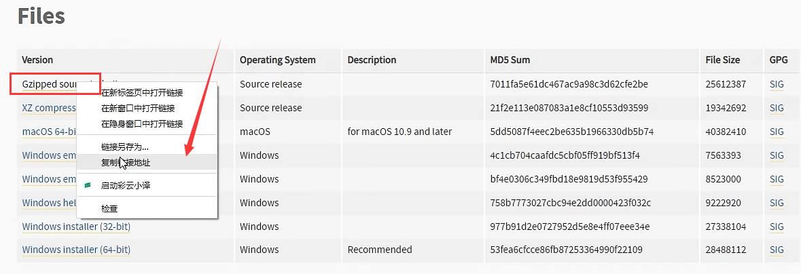
使用wget命令，粘贴复制的下载链接，进行下载并解压
1 | cd ~ # 切换到 /usr/local/src目录下也行 |
解压后进如目录进行编译安装:
1 | cd Python-3.10.4 |
在Linux系统命令行窗口内，直接执行：python 并回车：看到提示版本为我们安装的版本即为安装成功!
更改软链接
编译完成后，可以配置软链接，方便快速使用python：
1 | # 删除系统自带的老版本(python2)的软链接 |
==注意! 创建软链接后，会破坏yum程序的正常使用（只能使用系统自带的python2）==
所以我们需要修改 yum 程序配置, 修改如下两个文件
/usr/bin/yum
/usr/libexec/urlgrabber-ext-down
使用vim编辑器，将这2个文件的第一行，讲原来的
1 |
修改为:
1 |
特点和简介
- python是完全面向对象的语言
- 函数,模块,数字,字符串等都是对象
- 支持继承,重载,多重继承
- 支持重载运算符,泛型设计
- 拥有强大的标准库, python核心只有: 数字,字符串,列表,字典, 文件等常见类型和函数
- 三方库丰富
python生态及工具
解释器
解释器存放在：<Python安装目录>/python.exe
使用解释器运行:
- 直接在命令行中输入 python 进行 shell 交互
- 使用
python 带路径的python文件运行python代码文件
python解释器如今有多种语言实现:
- Cpython : 官方版本的C语言实现
- Jython : 运行在 jvm 的 解释器,用Java实现
- IronPython: 运行在.Net 和Mono平台
- PyPy : 使用 Python 实现, 支持JIT 即时编译
基础语法
Python 语言与 Perl，C 和 Java 等语言有许多相似之处。但是，也存在一些差异。
由于本人已经学习过Java, C 等主流编程语言,所以主要讲差异性:
保留字:
| and | exec | not |
|---|---|---|
| assert | finally | or |
| break | for | pass |
| class | from | |
| continue | global | raise |
| def | if | return |
| del | import | try |
| elif | in | while |
| else | is | with |
| except | lambda | yield |
层次缩进:
python中用 缩进 表示层级关系, 每个层次的缩进需要相同 而不像众多编程语言使用 {}
建议在每个缩进层次使用 单个制表符 或 两个空格 或 四个空格 , 切记不能混用
多行语句:
Python语句中一般以新行作为语句的结束符。
但是我们可以使用斜杠（ \）将一行的语句分为多行显示，如下所示：
1 | total = item_one + \ |
python引号:
Python 可以使用引号( ‘ )、双引号( “ )、三引号( ‘’’ 或 “”” ) 来表示字符串，引号的开始与结束必须是相同类型的。
其中三引号可以由多行组成，编写多行文本的快捷语法，常用于文档字符串，在文件的特定地点，被当做注释。
python注释:
python中单行注释采用 # 开头。python 中多行注释使用三个单引号 ''' 或三个双引号 """包裹。
同一行显示多条语句:
Python可以在同一行中使用多条语句，语句之间使用分号;分割，
1 | import sys; x = 'runoob'; sys.stdout.write(x + '\n') |
打印输出:
Python 3.x:
使用
print(),输出 ,print("内容",end="")可以实现打印不换行, 默认是换行的在 Python 2.x中， 可以使用逗号 , 来实现不换行效果：
1 | # -*- coding: UTF-8 -*- |
运算符:
Python 语言支持以下类型的运算符:
算术运算符:
以下假设变量 a=10，变量 b=21：
| 运算符 | 描述 | 实例 |
|---|---|---|
| + | 加 - 两个对象相加 | a + b 输出结果 31 |
| - | 减 - 得到负数或是一个数减去另一个数 | a - b 输出结果 -11 |
| * | 乘 - 两个数相乘或是返回一个被重复若干次的字符串 | a * b 输出结果 210 |
| / | 除 - x 除以 y | b / a 输出结果 2.1 |
| // | 取整除 - 向下取接近商的整数 | 9//2 为 4 , -9//2 为-5 |
| % | 取模 - 返回除法的余数 | b % a 输出结果 1 |
| ** | 幂 - 返回x的y次幂 | a**b 为10的21次方 |
成员运算符:
| 运算符 | 描述 | 实例 |
|---|---|---|
| in | 如果在指定的序列中找到值返回 True，否则返回 False。 | x 在 y 序列中 , 如果 x 在 y 序列中返回 True。 |
| not in | 如果在指定的序列中没有找到值返回 True，否则返回 False。 | x 不在 y 序列中 , 如果 x 不在 y 序列中返回 True。 |
身份运算符:
身份运算符用于比较两个对象的存储单元
| 运算符 | 描述 | 实例 |
|---|---|---|
is |
is 是判断两个标识符是不是引用自一个对象 | x is y, 类似 id(x) == id(y) , 如果引用的是同一个对象则返回 True，否则返回 False |
is not |
is not 是判断两个标识符是不是引用自不同对象 | x is not y ， 类似 **id(x) != id(y)**。如果引用的不是同一个对象则返回结果 True，否则返回 False。 |
注： id() 函数用于获取对象内存地址。
is 与 == 区别：is 用于判断两个变量引用对象是否为同一个， == 用于判断引用变量的值是否相等。
1 | >>>a = [1, 2, 3] |
逻辑运算:
以下假设变量 a 为 10, b为 20:
| 运算符 | 逻辑表达式 | 描述 | 实例 |
|---|---|---|---|
| and | x and y | 布尔”与” - 如果 x 为 False，x and y 返回 x 的值，否则返回 y 的计算值。 | (a and b) 返回 20。 |
| or | x or y | 布尔”或” - 如果 x 是 True，它返回 x 的值，否则它返回 y 的计算值。 | (a or b) 返回 10。 |
| not | not x | 布尔”非” - 如果 x 为 True，返回 False 。如果 x 为 False，它返回 True。 | not(a and b) 返回 False |
赋值运算符:
以下假设变量a为10，变量b为20：
| 运算符 | 描述 | 实例 |
|---|---|---|
| = | 简单的赋值运算符 | c = a + b 将 a + b 的运算结果赋值为 c |
| += | 加法赋值运算符 | c += a 等效于 c = c + a |
| -= | 减法赋值运算符 | c -= a 等效于 c = c - a |
| *= | 乘法赋值运算符 | c *= a 等效于 c = c * a |
| /= | 除法赋值运算符 | c /= a 等效于 c = c / a |
| %= | 取模赋值运算符 | c %= a 等效于 c = c % a |
| **= | 幂赋值运算符 | c **= a 等效于 c = c ** a |
| //= | 取整除赋值运算符 | c //= a 等效于 c = c // a |
| := | 海象运算符，可在表达式内部为变量赋值。Python3.8 版本新增运算符。 | 在这个示例中，赋值表达式可以避免调用 len() 两次:if (n := len(a)) > 10: print(f"List is too long ({n} elements, expected <= 10)") |
比较运算符,位运算符, 与其他编程语言一致
运算符优先级:
相同单元格内的运算符具有相同优先级。 运算符均指二元运算，除非特别指出。 相同单元格内的运算符从左至右分组（除了幂运算是从右至左分组）：
| 运算符 | 描述 |
|---|---|
(expressions...),[expressions...], {key: value...}, {expressions...} |
圆括号的表达式 |
x[index], x[index:index], x(arguments...), x.attribute |
读取，切片，调用，属性引用 |
await x |
await 表达式 |
** |
乘方(指数) |
+x, -x, ~x |
正，负，按位非 NOT |
*, @, /, //, % |
乘，矩阵乘，除，整除，取余 |
+, - |
加和减 |
<<, >> |
移位 |
& |
按位与 AND |
^ |
按位异或 XOR |
| ` | ` |
in,not in, is,is not, <, <=, >, >=, !=, == |
比较运算，包括成员检测和标识号检测 |
not x |
逻辑非 NOT |
and |
逻辑与 AND |
or |
逻辑或 OR |
if -- else |
条件表达式 |
lambda |
lambda 表达式 |
:= |
赋值表达式 |
变量数据类型:
变量是存储在内存中的值，这就意味着在创建变量时会在内存中开辟一个空间。
Python 中的变量不需要声明。每个变量在使用前都必须赋值，变量赋值以后该变量才会被创建。
在 Python 中，变量就是变量，它没有类型，我们所说的”类型”是变量所指的内存中对象的类型。
内置的 type() 函数可以用来查询变量所指的对象类型。
多个变量赋值:
Python允许你同时为多个变量赋值。例如：
1 | a = b = c = 1 # 这种写法只有python有, 其他编程语言没有 |
标准数据类型:
- Numbers（数字）
- String（字符串）
- List（列表）
- Tuple（元组）
- Dictionary（字典）
- Set（集合）
Python3 的六个标准数据类型中：
- 不可变数据（3 个）：Number（数字）、String（字符串）、Tuple（元组）；
- 可变数据（3 个）：List（列表）、Dictionary（字典）、Set（集合）。
数字:
数字数据类型用于存储数值。他们是不可改变的数据类型，这意味着改变数字数据类型会分配一个新的对象。
您也可以使用del语句删除一些对象的引用,相当于手动回收引用。del语句的语法是：
1 | del var1[,var2[,var3[....,varN]]] |
Python支持四种不同的数字类型：
- int（有符号整型）
- bool
- float（浮点型）
- complex（复数）
| int | float | complex |
|---|---|---|
| 10 | 0.0 | 3.14j |
| 100 | 15.20 | 45.j |
| -786 | -21.9 | 9.322e-36j |
| 080 | 32.3e+18 | .876j |
| -0490 | -90. | -.6545+0J |
| -0x260 | -32.54e100 | 3e+26J |
| 0x69 | 70.2E-12 | 4.53e-7j |
Python 还支持复数，复数由实数部分和虚数部分构成，可以用 a + bj,或者 complex(a,b) 表示， 复数的实部 a 和虚部 b 都是浮点型。在Python 3里，只有一种整数类型 int，表示为长整型，没有 python2 中的 Long。
注意：long 类型只存在于 Python2.X 版本中，在 2.2 以后的版本中，int 类型数据溢出后会自动转为long类型。在 Python3.X 版本中 long 类型被移除，使用 int 替代。
Python3 中，bool 是 int 的子类，True 和 False 可以和数字相加. 但可以通过 is 来判断类型。
1 | issubclass(bool, int) |
在 Python2 中是没有布尔型的，它用数字 0 表示 False，用 1 表示 True。
数学函数
| 函数 | 返回值 ( 描述 ) |
|---|---|
| abs(x) | 返回数字的绝对值，如abs(-10) 返回 10 |
| ceil(x) | 返回数字的上入整数，如math.ceil(4.1) 返回 5 |
| cmp(x, y) | 如果 x < y 返回 -1, 如果 x == y 返回 0, 如果 x > y 返回 1。 Python 3 已废弃，使用 (x>y)-(x<y) 替换。 |
| exp(x) | 返回e的x次幂(ex),如math.exp(1) 返回2.718281828459045 |
| fabs(x) | 返回数字的绝对值，如math.fabs(-10) 返回10.0 |
| floor(x) | 返回数字的下舍整数，如math.floor(4.9)返回 4 |
| log(x) | 如math.log(math.e)返回1.0,math.log(100,10)返回2.0 |
| log10(x) | 返回以10为基数的x的对数，如math.log10(100)返回 2.0 |
| max(x1, x2,…) | 返回给定参数的最大值，参数可以为序列。 |
| min(x1, x2,…) | 返回给定参数的最小值，参数可以为序列。 |
| modf(x) | 返回x的整数部分与小数部分，两部分的数值符号与x相同，整数部分以浮点型表示。 |
| pow(x, y) | x**y 运算后的值。 |
| [round(x ,n]) | 返回浮点数 x 的四舍五入值，如给出 n 值，则代表舍入到小数点后的位数。其实准确的说是保留值将保留到离上一位更近的一端。 |
| sqrt(x) | 返回数字x的平方根。 |
随机函数
| 函数 | 描述 |
|---|---|
| choice(seq) | 从序列的元素中随机挑选一个元素，比如random.choice(range(10))，从0到9中随机挑选一个整数。 |
| [randrange (start,] stop [,step]) | 从指定范围内，按指定基数递增的集合中获取一个随机数，基数默认值为 1 |
| random() | 随机生成下一个实数，它在[0,1)范围内。 |
| seed([x]) | 改变随机数生成器的种子seed。如果你不了解其原理，你不必特别去设定seed，Python会帮你选择seed。 |
| shuffle(lst) | 将序列的所有元素随机排序 |
| uniform(x, y) | 随机生成下一个实数，它在[x,y]范围内。 |
三角函数
| 函数 | 描述 |
|---|---|
| acos(x) | 返回x的反余弦弧度值。 |
| asin(x) | 返回x的反正弦弧度值。 |
| atan(x) | 返回x的反正切弧度值。 |
| atan2(y, x) | 返回给定的 X 及 Y 坐标值的反正切值。 |
| cos(x) | 返回x的弧度的余弦值。 |
| hypot(x, y) | 返回欧几里德范数 sqrt(xx + yy)。 |
| sin(x) | 返回的x弧度的正弦值。 |
| tan(x) | 返回x弧度的正切值。 |
| degrees(x) | 将弧度转换为角度,如degrees(math.pi/2) ， 返回90.0 |
| radians(x) | 将角度转换为弧度 |
数学常量:
pi: 圆周率, e: 数学常量 e，e即自然常数（自然常数）
字符串
字符串或串(String)是由数字、字母、下划线组成的一串字符。==python的字串列表(即字符串可看作列表)==有2种取值顺序:
- 从==右到左索引默认-1开始的==，最大范围是字符串开头
- 从左到右索引默认0开始的，最大范围是字符串长度少1
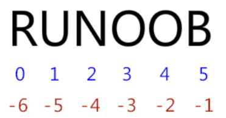
截取:
如果你要实现从字符串中获取一段子字符串的话，可以使用 [头下标:尾下标] 来截取相应的字符串(只能从左到右边截取)，其中下标是从 0 开始算起，可以是正数或负数，下标可以为空表示取到头或尾。==截取时到尾下标结束,不包括尾下标元素==
1 | s = 'abcdef' |
Python 列表截取可以接收第三个参数，参数作用是截取的步长，.以下实例在索引 1 到索引 4 的位置并设置为步长为 2（间隔一个位置）来截取字符串：
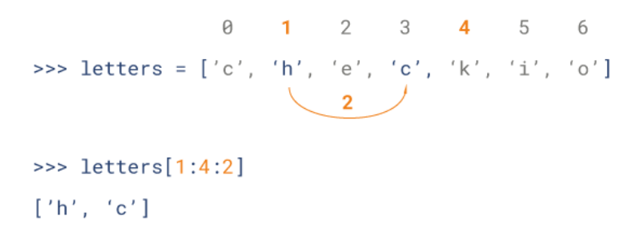
如果第三个参数为负数表示逆向读取以下实例用于翻转字符串：
1 | # 翻转字符串 |
运算:
星号*是字符复制操作, 加号+是字符串连接运算符。
1 | str = "abc" |
转义字符
在需要在字符中使用特殊字符时，python 用反斜杠\转义字符。如果**==希望展示原始字符串==(不解析转移字符), 在字符串前加上一个 r 即可, 如:r'\n' ,会原样输出\n,不会变成换行**
1 | print('Ru\noob') |
注意，Python 没有单独的字符类型，一个字符就是长度为1的字符串。与 C 字符串不同的是，==Python 字符串不能被改变==。向一个索引位置赋值，比如 word[0] = ‘m’ 会导致错误。
常见转义字符如下表 ：
| 转义字符 | 描述 |
|---|---|
| (在行尾时) | 续行符 |
| \ | 反斜杠符号 |
| ' | 单引号 |
| " | 双引号 |
| \a | 响铃 |
| \b | 退格(Backspace) |
| \000 | 空 |
| \n | 换行 |
| \v | 纵向制表符 |
| \t | 横向制表符 |
| \r | 回车，将 \r 后面的内容移到字符串开头，并逐一替换开头部分的字符，直至将 \r 后面的内容完全替换完成。 |
| \f | 换页 |
| \yyy | 八进制数，y 代表 0~7 的字符，例如：\012 代表换行。 |
| \xyy | 十六进制数，以 \x 开头，y 代表的字符，例如：\x0a 代表换行 |
| \other | 其它的字符以普通格式输出 |
字符串格式化:
Python 支持格式化字符串的输出 。尽管这样可能会用到非常复杂的表达式，但最基本的用法是将一个值插入到一个有字符串格式符 %s 的字符串中。在 Python 中，字符串格式化使用与 C 中 sprintf 函数一样的语法。
1 | print ("我叫 %s 今年 %d 岁!" % ('小明', 10)) |
| 符 号 | 描述 |
|---|---|
| %c | 格式化字符及其ASCII码 |
| %s | 格式化字符串 |
| %d | 格式化整数 |
| %u | 格式化无符号整型 |
| %o | 格式化无符号八进制数 |
| %x | 格式化无符号十六进制数 |
| %X | 格式化无符号十六进制数（大写） |
| %f | 格式化浮点数字，可指定小数点后的精度 |
| %e | 用科学计数法格式化浮点数 |
| %E | 作用同%e，用科学计数法格式化浮点数 |
| %g | %f和%e的简写 |
| %G | %f 和 %E 的简写 |
| %p | 用十六进制数格式化变量的地址 |
格式化操作符辅助指令:
| 符号 | 功能 |
|---|---|
| * | 定义宽度或者小数点精度 |
| - | 用做左对齐 |
| + | 在正数前面显示加号( + ) |
| 在正数前面显示空格 | |
| # | 在八进制数前面显示零(‘0’)，在十六进制前面显示’0x’或者’0X’(取决于用的是’x’还是’X’) |
| 0 | 显示的数字前面填充’0’而不是默认的空格 |
| % | ‘%%’输出一个单一的’%’ |
| (var) | 映射变量(字典参数) |
| m.n. | m 是显示的最小总宽度,n 是小数点后的位数(如果可用的话) |
Python2.6 开始，新增了一种格式化字符串的函数 str.format()，它增强了字符串格式化的功能。
f-string 模板字符串
f-string 是 python3.6 之后版本添加的，称之为字面量格式化字符串，是新的格式化字符串的语法。格式化字符串以 f 开头，后面跟着字符串，字符串中的表达式用大括号 {} 包起来，它会将变量或表达式计算后的值替换进去，实例如下：
1 | name = 'Runoob' |
在 Python 3.8 的版本中可以使用 = 符号来拼接运算表达式与结果：
1 | x = 1 |
内置处理函数
| 序号 | 方法及描述 |
|---|---|
| 1 | capitalize() 将字符串的第一个字符转换为大写 |
| 2 | center(width, fillchar)返回一个指定的宽度 width 居中的字符串，fillchar 为填充的字符，默认为空格。 |
| 3 | count(str, beg= 0,end=len(string)) 返回 str 在 string 里面出现的次数，如果 beg 或者 end 指定则返回指定范围内 str 出现的次数 |
| 4 | bytes.decode(encoding=”utf-8”, errors=”strict”) Python3 中没有 decode 方法，但我们可以使用 bytes 对象的 decode() 方法来解码给定的 bytes 对象，这个 bytes 对象可以由 str.encode() 来编码返回。 |
| 5 | encode(encoding=’UTF-8’,errors=’strict’) 以 encoding 指定的编码格式编码字符串，如果出错默认报一个ValueError 的异常，除非 errors 指定的是’ignore’或者’replace’ |
| 6 | endswith(suffix, beg=0, end=len(string)) 检查字符串是否以 suffix 结束，如果 beg 或者 end 指定则检查指定的范围内是否以 suffix 结束，如果是，返回 True,否则返回 False。 |
| 7 | expandtabs(tabsize=8) 把字符串 string 中的 tab 符号转为空格，tab 符号默认的空格数是 8 。 |
| 8 | find(str, beg=0, end=len(string)) 检测 str 是否包含在字符串中，如果指定范围 beg 和 end ，则检查是否包含在指定范围内，如果包含返回开始的索引值，否则返回-1 |
| 9 | index(str, beg=0, end=len(string)) 跟find()方法一样，只不过如果str不在字符串中会报一个异常。 |
| 10 | isalnum() 如果字符串至少有一个字符并且所有字符都是字母或数字则返 回 True，否则返回 False |
| 11 | isalpha() 如果字符串至少有一个字符并且所有字符都是字母或中文字则返回 True, 否则返回 False |
| 12 | isdigit() 如果字符串只包含数字则返回 True 否则返回 False.. |
| 13 | islower() 如果字符串中包含至少一个区分大小写的字符，并且所有这些(区分大小写的)字符都是小写，则返回 True，否则返回 False |
| 14 | isnumeric() 如果字符串中只包含数字字符，则返回 True，否则返回 False |
| 15 | isspace() 如果字符串中只包含空白，则返回 True，否则返回 False. |
| 16 | istitle() 如果字符串是标题化的(见 title())则返回 True，否则返回 False |
| 17 | isupper() 如果字符串中包含至少一个区分大小写的字符，并且所有这些(区分大小写的)字符都是大写，则返回 True，否则返回 False |
| 18 | join(seq) 以指定字符串作为分隔符，将 seq 中所有的元素(的字符串表示)合并为一个新的字符串 |
| 19 | len(string) 返回字符串长度 |
| 20 | [ljust(width, fillchar]) 返回一个原字符串左对齐,并使用 fillchar 填充至长度 width 的新字符串，fillchar 默认为空格。 |
| 21 | lower() 转换字符串中所有大写字符为小写. |
| 22 | lstrip() 截掉字符串左边的空格或指定字符。 |
| 23 | maketrans() 创建字符映射的转换表，对于接受两个参数的最简单的调用方式，第一个参数是字符串，表示需要转换的字符，第二个参数也是字符串表示转换的目标。 |
| 24 | max(str) 返回字符串 str 中最大的字母。 |
| 25 | min(str) 返回字符串 str 中最小的字母。 |
| 26 | [replace(old, new , max]) 把 将字符串中的 old 替换成 new,如果 max 指定，则替换不超过 max 次。 |
| 27 | rfind(str, beg=0,end=len(string)) 类似于 find()函数，不过是从右边开始查找. |
| 28 | rindex( str, beg=0, end=len(string)) 类似于 index()，不过是从右边开始. |
| 29 | [rjust(width,, fillchar]) 返回一个原字符串右对齐,并使用fillchar(默认空格）填充至长度 width 的新字符串 |
| 30 | rstrip() 删除字符串末尾的空格或指定字符。 |
| 31 | split(str=””, num=string.count(str)) 以 str 为分隔符截取字符串，如果 num 有指定值，则仅截取 num+1 个子字符串 |
| 32 | [splitlines(keepends]) 按照行(‘\r’, ‘\r\n’, \n’)分隔，返回一个包含各行作为元素的列表，如果参数 keepends 为 False，不包含换行符，如果为 True，则保留换行符。 |
| 33 | startswith(substr, beg=0,end=len(string)) 检查字符串是否是以指定子字符串 substr 开头，是则返回 True，否则返回 False。如果beg 和 end 指定值，则在指定范围内检查。 |
| 34 | [strip(chars]) 在字符串上执行 lstrip()和 rstrip() |
| 35 | swapcase() 将字符串中大写转换为小写，小写转换为大写 |
| 36 | title() 返回”标题化”的字符串,就是说所有单词都是以大写开始，其余字母均为小写(见 istitle()) |
| 37 | translate(table, deletechars=””) 根据 table 给出的表(包含 256 个字符)转换 string 的字符, 要过滤掉的字符放到 deletechars 参数中 |
| 38 | upper() 转换字符串中的小写字母为大写 |
| 39 | zfill (width) 返回长度为 width 的字符串，原字符串右对齐，前面填充0 |
| 40 | isdecimal() 检查字符串是否只包含十进制字符，如果是返回 true，否则返回 false。 |
列表List
List（列表） 是 Python 中使用最频繁的数据类型。列表可以完成大多数集合类的数据结构实现。它支持字符，数字，字符串甚至可以包含列表（即嵌套）。列表用 [ ] 标识，是 python 最通用的复合数据类型。
==列表有着与字符串相同的运算操作:==
**截取:**列表中值的切割也可以用到变量 [头下标:尾下标] ，就可以截取相应的列表，从左到右索引默认 0 开始，从右到左索引默认 -1 开始，下标可以为空表示取到头或尾。
运算: 连接(+) , 复制(*)
1 | list1 = [1, 2, 3, "你好"] |
对于列表的修改和访问元素, 可以通过列表名[索引值] 或 列表名[索引值] = 值 进行操作
追加元素可以通过 列表名.append(元素) 进行操作
删除列表元素:
可以使用 del 语句来删除列表的的元素，如下实例：
1 | list = ['Google', 'Runoob', 1997, 2000] |
以上实例输出结果：
1 | 原始列表 : ['Google', 'Runoob', 1997, 2000] |
队列运算
python重载了队列之间的加法+运算, 和队列与整数之间的乘法运算*
两队列相加会将两个队列的元素合并为一个新队列 , 队列与整数相乘, 将队列的元素复制整数份
1 | l1 = [1, 2, 3] |
结果:
1 | [1, 2, 3, 4, 5, 6] |
列表函数&方法
函数: 即不需要通过对象可以直接调用的
方法: 需要通过具体的某个对象进行调用
Python包含以下函数:
| 序号 | 函数 |
|---|---|
| 1 | len(list) 列表元素个数 |
| 2 | max(list) 返回列表元素最大值 |
| 3 | min(list) 返回列表元素最小值 |
| 4 | list(seq) 将元组转换为列表 |
Python包含以下方法:
| 序号 | 方法 |
|---|---|
| 1 | list.append(obj) 在列表末尾添加新的对象 |
| 2 | list.count(obj) 统计某个元素在列表中出现的次数 |
| 3 | list.extend(seq) 在列表末尾一次性追加另一个序列中的多个值（用新列表扩展原来的列表） |
| 4 | list.index(obj) 从列表中找出某个值第一个匹配项的索引位置 |
| 5 | list.insert(index, obj) 将对象插入列表 |
| 6 | list.pop([index=-1]) 移除列表中的一个元素（默认最后一个元素），并且返回该元素的值 |
| 7 | list.remove(obj) 移除列表中某个值的第一个匹配项 |
| 8 | list.reverse() 反向列表中元素 |
| 9 | list.sort( key=None, reverse=False) 对原列表进行排序 |
| 10 | list.clear() 清空列表 |
| 11 | list.copy() 复制列表 |
Tuple（元组）
元组（tuple）与列表类似，元组中的元素类型也可以不相同, 拥有相同的截取,连接复制等操作, 不同之处在于元组的元素不能修改。元组写在小括号 () 里，元素之间用逗号隔开。
string、list 和 tuple 都属于 sequence（序列）。
- 1、与字符串一样，元组的元素不能修改。
- 2、元组也可以被索引和切片，方法一样。
- 3、注意构造包含 0 或 1 个元素的元组的特殊语法规则。
- 4、元组也可以使用+操作符进行拼接。
由于元组是不可变数据,所以我们无法对元组的元素进行增,删,改操作
删除元组
我们可以使用del语句来删除整个元组，如下实例:
1 | tup = ('Google', 'Runoob', 1997, 2000) |
运行会报错:
1 | 删除后的元组 tup : |
内置函数
| 函数 | 描述 |
|---|---|
| len(tuple) | 计算元组元素个数。 |
| max(tuple) | 返回元组中元素最大值。 |
| min(tuple) | 返回元组中元素最小值。 |
| tuple(iterable) | 将可迭代系列转换为元组。 |
Dictionary（字典）
字典（dictionary）是Python中另一个非常有用的内置数据类型。列表是有序的对象集合，字典是无序的对象集合。两者之间的区别在于：字典当中的元素是通过键来存取的，而不是通过偏移存取。字典是一种映射类型，字典用 { } 标识，它是一个无序的 键(key) : 值(value) 的集合。键(key)必须使用不可变类型(如:数字,字符串,元组等)。在同一个字典中，键(key)必须是唯一的。
1 | dict = {} |
另外，字典类型也有一些内置的方法，例如 clear()、keys()、values() 等。
字典元素的访问,修改操作也和列表非常类似, 添加元素,则需要保证添加元素的键不重复就行
删除字典元素
能删单一的元素也能清空字典，清空只需一项操作。
显式删除一个字典用del命令，如下实例：
1 | tinydict = {'Name': 'Runoob', 'Age': 7, 'Class': 'First'} |
字典内置函数&方法
函数:
| 序号 | 函数及描述 |
|---|---|
| len(dict) | 计算字典元素个数，即键的总数。 |
方法:
| 序号 | 函数及描述 |
|---|---|
| 1 | dict.clear() 删除字典内所有元素 |
| 2 | dict.copy() 返回一个字典的浅复制 |
| 3 | dict.fromkeys() 创建一个新字典，以序列seq中元素做字典的键，val为字典所有键对应的初始值 |
| 4 | dict.get(key, default=None) 返回指定键的值，如果键不在字典中返回 default 设置的默认值 |
| 5 | key in dict 如果键在字典dict里返回true，否则返回false |
| 6 | dict.items() 以列表返回一个视图对象,包含键和值 |
| 7 | dict.keys() 返回一个视图对象 |
| 8 | dict.setdefault(key, default=None) 和get()类似, 但如果键不存在于字典中，将会添加键并将值设为default |
| 9 | dict.update(dict2) 把字典dict2的键/值对更新到dict里 |
| 10 | dict.values() 返回一个视图对象 |
| 11 | pop(key[,default])] 删除字典 key（键）所对应的值，返回被删除的值。 |
| 12 | popitem() 返回并删除字典中的最后一对键和值。 |
集合(Set)
集合（set）是由一个或数个形态各异的大小整体组成的，构成集合的事物或对象称作元素或是成员。基本功能是进行成员关系测试和删除重复元素。可以使用大括号 { } 或者 set() 函数创建集合，注意：**创建一个空集合必须用 set() 而不是 { }**，因为 { } 是用来创建一个空字典。
1 | sites = {'Google', 'Taobao', 'Runoob', 'Facebook', 'Zhihu', 'Baidu'} |
内置方法:
| 方法 | 描述 |
|---|---|
| add() | 为集合添加元素 |
| pop() | 随机移除元素,并将其返回 |
| discard(value) | 删除集合中指定的元素, 不存在不会报错 |
| remove(value) | 移除指定元素, 不存在会报错 |
| clear() | 移除集合中的所有元素 |
| copy() | 拷贝一个集合 |
| difference() | 返回多个集合的差集 |
| difference_update() | 移除集合中的元素，该元素在指定的集合也存在。 |
| intersection() | 返回集合的交集 |
| intersection_update() | 返回集合的交集。 |
| isdisjoint() | 判断两个集合是否包含相同的元素，如果没有返回 True，否则返回 False。 |
| issubset() | 判断指定集合是否为该方法参数集合的子集。 |
| issuperset() | 判断该方法的参数集合是否为指定集合的子集 |
| symmetric_difference() | 返回两个集合中不重复的元素集合。 |
| symmetric_difference_update() | 移除当前集合中在另外一个指定集合相同的元素，并将另外一个指定集合中不同的元素插入到当前集合中。 |
| union() | 返回两个集合的并集 |
| update() | 给集合添加元素 |
数据类型转换
有时候，我们需要对数据内置的类型进行转换，数据类型的转换，一般情况下你只需要将数据类型作为函数名即可。Python 数据类型转换可以分为两种：
- 隐式类型转换 - 自动完成 (就高不就低)
- 显式类型转换 - 需要使用类型函数来转换
显示类型转换:
1 | x = int(1) # x 输出结果为 1 |
更多内置转换函数
| 函数 | 描述 |
|---|---|
| [int(x ,base]) | 将x转换为一个整数 |
| float(x) | 将x转换到一个浮点数 |
| [complex(real ,imag]) | 创建一个复数 |
| str(x) | 将对象 x 转换为字符串 |
| repr(x) | 将对象 x 转换为表达式字符串 |
| eval(str) | 用来计算在字符串中的有效Python表达式,并返回一个对象 |
| tuple(s) | 将序列 s 转换为一个元组 |
| list(s) | 将序列 s 转换为一个列表 |
| set(s) | 转换为可变集合 |
| dict(d) | 创建一个字典。d 必须是一个 (key, value)元组序列。 |
| frozenset(s) | 转换为不可变集合 |
| chr(x) | 将一个整数转换为一个字符 |
| ord(x) | 将一个字符转换为它的整数值 |
| hex(x) | 将一个整数转换为一个十六进制字符串 |
| oct(x) | 将一个整数转换为一个八进制字符串 |
控制结构
python 的执行顺序和多数编程语言一样遵循顺序执行
条件判断:
Python 中用 elif 代替了 else if，所以if语句的关键字为：if – elif – else。
1 | if condition_1: |
在 Python 中没有 switch...case 语句，但在 Python3.10 版本添加了 match...case，功能也类似，详见下文。
match…case
Python 3.10 增加了 match…case 的条件判断，不需要再使用一连串的 if-else 来判断了。match 后的对象会依次与 case 后的内容进行匹配，如果匹配成功，则执行匹配到的表达式，否则直接跳过，_ 可以匹配一切。
1 | match subject: |
case _: 类似于 C 和 Java 中的 **default:**，当其他 case 都无法匹配时，匹配这条，保证永远会匹配成功。
一个 case 也可以设置多个匹配条件，条件使用 ｜ 隔开:
1 | ... |
循环控制:
python中也有其他编程语言都有的 break, continue , 效果都一样,不再赘述
while 语句的一般形式：
1 | while 判断条件(condition)： |
**while 循环使用 else 语句:**如果 while 后面的判断条件语句为 false 时，则执行 else 的语句块。
1 | while <expr>: |
for 语句
for 循环可以遍历任何可迭代对象，如一个列表或者一个字符串。for循环的一般格式如下：
1 | for <variable> in <sequence>: |
整数范围值可以配合 range() 函数使用:
1 | # 1 到 5 的所有数字： |
range() 函数:
range() 函数返回的是一个可迭代对象（类型是对象），而不是列表类型， 所以打印的时候不会打印列表。
1 | range(start, stop[, step]) |
- start: 计数从 start 开始。默认是从 0 开始。例如 range(5) 等价于 range(0， 5)
- stop: 计数到 stop 结束，但不包括 stop。例如：range(0， 5) 是 [0, 1, 2, 3, 4] 没有 5
- step：步长，默认为 1。例如：range(0， 5) 等价于 range(0, 5, 1)
如果只提供一个参数，它将生成一个从 0 开始的整数序列，参数为结束值，步长默认为 1
for…else
在 Python 中，for…else 语句用于在循环结束后执行一段代码。
1 | for item in iterable: |
当循环执行完毕（即遍历完 iterable 中的所有元素）后，会执行 else 子句中的代码，==注意:如果在循环过程中遇到了 break 语句，则会中断循环，此时不会执行 else 子句。==
pass语句
Python pass是空语句，是为了保持程序结构的完整性。pass 不做任何事情，一般用做占位语句
1 | >>>while True: |
输入输出
输出
输出格式美化
Python两种输出值的方式: 表达式语句和 print() 函数。第三种方式是使用文件对象的 write() 方法，标准输出文件可以用 sys.stdout 引用。如果你希望输出的形式更加多样，可以使用 str.format() 函数来格式化输出值。如果你希望将输出的值转成字符串，可以使用 repr() 或 str() 函数来实现。
- str()： 函数返回一个用户易读的表达形式。
- repr()： 产生一个解释器易读的表达形式。
str.format():括号及其里面的字符 (称作格式化字段) 将会被 format() 中的参数替换。
1 | print('{}网址： "{}!"'.format('菜鸟教程', 'www.runoob.com')) |
在括号中的数字用于指向传入对象在 format() 中的位置，如下所示：
1 | print('{0} 和 {1}'.format('Google', 'Runoob')) |
如果在 format() 中使用了关键字参数, 那么它们的值会指向使用该名字的参数。
1 | print('{name}网址： {site}'.format(name='菜鸟教程', site='www.runoob.com')) |
可选项 : 和格式标识符可以跟着字段名。 这就允许对值进行更好的格式化。
1 | import math |
如果你有一个很长的格式化字符串, 而你不想将它们分开, 那么在格式化时通过变量名而非位置会是很好的事情。最简单的就是传入一个字典, 然后使用方括号 [] 来访问键值 :
1 | table = {'Google': 1, 'Runoob': 2, 'Taobao': 3} |
旧式字符串格式化
% 操作符也可以实现字符串格式化。 它将左边的参数作为类似 sprintf() 式的格式化字符串, 而将右边的代入, 然后返回格式化后的字符串. 例如:
1 | import math |
因为 str.format() 是比较新的函数， 大多数的 Python 代码仍然使用 % 操作符。但是因为这种旧式的格式化最终会从该语言中移除, 应该更多的使用 str.format().
输入
读取键盘输入
Python 提供了 input() 内置函数从标准输入读入一行文本，默认的标准输入是键盘。
input() : 可选参数: 参数类型为字符串,用于在控制台展示提示信息,返回值为一个用户从键盘输入的数据,并且自动转换成字符串类型的
推导式
Python 推导式是一种独特的数据处理方式，可以从一个数据序列构建另一个新的数据序列的结构体。
Python 支持各种数据结构的推导式：
- 列表(list)推导式
- 字典(dict)推导式
- 集合(set)推导式
- 元组(tuple)推导式
列表推导式格式为：
1 | [表达式 for 变量 in 列表] |
- out_exp_res：列表生成元素表达式，可以是有返回值的函数。
- for out_exp in input_list：迭代 input_list 将 out_exp 传入到 out_exp_res 表达式中。
- if condition：条件语句，可以过滤列表中不符合条件的值。
列表推导式:
**实例:**过滤掉长度小于或等于3的字符串列表，并将剩下的转换成大写字母
1 | names = ['Bob','Tom','alice','Jerry','Wendy','Smith'] |
计算 30 以内可以被 3 整除的整数：
1 | multiples = [i for i in range(30) if i % 3 == 0] |
字典推导式:
1 | { key_expr: value_expr for value in collection } |
**案例: **将列表中各字符串值为键，各字符串的长度为值，组成键值对
1 | listdemo = ['Google','Runoob', 'Taobao'] |
提供三个数字，以三个数字为键，三个数字的平方为值来创建字典：
1 | dic = {x: x**2 for x in (2, 4, 6)} |
集合推导式:
1 | { expression for item in Sequence } |
计算数字 1,2,3 的平方数：
1 | setnew = {i**2 for i in (1,2,3)} |
判断不是 abc 的字母并输出：
1 | a = {x for x in 'abracadabra' if x not in 'abc'} |
元组推导式
元组推导式可以利用 range 区间、元组、列表、字典和集合等数据类型，快速生成一个满足指定需求的元组。元组推导式基本格式：
1 | (expression for item in Sequence ) |
我们可以使用下面的代码生成一个包含数字 1~9 的元组：
1 | a = (x for x in range(1,10)) |
迭代器与生成器
迭代是Python最强大的功能之一，是访问集合元素的一种方式。迭代器是一个可以记住遍历的位置的对象。迭代器对象从集合的第一个元素开始访问，直到所有的元素被访问完结束。迭代器只能往前不会后退。
迭代器有两个基本的方法：**iter()** 和 **next()**。
迭代器
创建一个迭代器
把一个类作为一个迭代器使用需要在类中实现两个方法 iter() 与 next() 。类都有一个构造函数，Python 的构造函数为 __init()__, 它会在对象初始化的时候执行。
__iter__() 方法返回一个特殊的迭代器对象， 这个迭代器对象实现了 __next__() 方法并通过 StopIteration 异常标识迭代的完成。
__next__() 方法（Python 2 里是 next()）会返回下一个迭代器对象。
实例:创建一个返回数字的迭代器，初始值为 1，逐步递增 1：
1 | class MyNumbers: |
StopIteration
StopIteration 异常用于标识迭代的完成，防止出现无限循环的情况，在 __next__() 方法中我们可以设置在完成指定循环次数后触发 StopIteration 异常来结束迭代。
实例:在 20 次迭代后停止执行：
1 | class MyNumbers: |
生成器
在 Python 中，使用了 yield(有点类似C语言的static关键字) 的函数被称为生成器（generator）。跟普通函数不同的是，生成器是一个返回迭代器的函数，只能用于迭代操作，更简单点理解生成器就是一个迭代器。在调用生成器运行的过程中，每次遇到 yield 时函数会暂停并保存当前所有的运行信息，返回 yield 的值, 并在下一次执行 next() 方法时从当前位置继续运行。调用一个生成器函数，返回的是一个迭代器对象。
以下实例使用 yield 实现斐波那契数列：
1 | import sys |
函数
python中的函数与大多数编程语言里函数是一个意思,这里简单说一下函数与方法的区别:
两者都差不多的, 只是 一般我们将 类的函数叫做方法 (也能是通过对象调用的函数我们把它称之为方法)
定义一个函数
Python 定义函数使用 def 关键字，一般格式如下：
1 | def 函数名（参数列表）: |
默认情况下，参数值和参数名称是按函数声明中定义的顺序匹配起来的。
函数调用
注意: 由于python是脚本语言顺序解释执行, 所以==要调用函数之前必须先定义函数==
参数传递:
在 python 中，类型属于对象，对象有不同类型的区分，变量是没有类型的：
可更改(mutable)与不可更改(immutable)对象
在 python 中，strings, tuples, 和 numbers 是不可更改的对象，而 list,dict 等则是可以修改的对象。
- 不可变类型：变量赋值 a=5 后再赋值 a=10，这里==实际是新生成一个 int 值对象 10，再让 a 指向它，而 5 被丢弃==，不是改变 a 的值，相当于新生成了 a。
- 可变类型：变量赋值 la=[1,2,3,4] 后再赋值 la[2]=5 则是将 list la 的第三个元素值更改，==本身la没有动，只是其内部的一部分值被修改了==。
python 函数的参数传递：
- 不可变类型：类似 C++ 的值传递，如整数、字符串、元组。如 fun(a)，传递的只是 a 的值，没有影响 a 对象本身。如果在 fun(a) 内部修改 a 的值，则是新生成一个 a 的对象。
- 可变类型：类似 C++ 的引用传递，如 列表，字典。如 fun(la)，则是将 la 真正的传过去，修改后 fun 外部的 la 也会受影响
python 中一切都是对象，严格意义我们不能说值传递还是引用传递，我们应该说传不可变对象和传可变对象。
参数
以下是调用函数时可使用的正式参数类型：
- 必需参数
- 关键字参数
- 默认参数
- 不定长参数
必需参数:
必需参数须以正确的顺序传入函数。调用时的数量必须和声明时的一样。
关键字参数:
格式: 函数名(参数名 = 值)
关键字参数和函数调用关系紧密，函数调用使用关键字参数来确定传入的参数值。使用关键字参数允许函数调用时参数的顺序与声明时不一致，因为 Python 解释器能够用参数名匹配参数值。
1 | def printinfo( name, age ): |
默认参数
格式: def 函数名(默认参数名 = 默认值)
调用函数时，如果没有传递参数，则会使用默认参数。以下实例中如果没有传入 age 参数，则使用默认值：
1 | #可写函数说明 |
不定长参数
你可能需要一个函数能处理比当初声明时更多的参数。这些参数叫做不定长参数，和上述 2 种参数不同，声明时不会命名。基本语法如下：
1 | def functionname([formal_args,] *var_args_tuple ): |
加了星号 * 的参数会以元组(tuple)的形式导入，存放所有未命名的变量参数。
1 | def printinfo( arg1, *vartuple ): |
结果:
1 | 输出: |
加了两个星号 ** 的参数会以字典的形式导入
1 | def printinfo( arg1, **vardict ): |
结果:
1 | 输出: |
如果单独出现星号 *，则星号后的参数必须用关键字传入：
1 | >>> def f(a,b,*,c): |
匿名函数
Python 使用 lambda 关键字来创建匿名函数。即不再使用 def 语句这样标准的形式定义一个函数。
- lambda 只是一个表达式，函数体比 def 简单很多。
- lambda 的主体是一个表达式，而不是一个代码块。仅仅能在 lambda 表达式中封装有限的逻辑进去。
- lambda 函数拥有自己的命名空间，且不能访问自己参数列表之外或全局命名空间里的参数。
- 虽然 lambda 函数看起来只能写一行，却不等同于 C 或 C++ 的内联函数，后者的目的是调用小函数时不占用栈内存从而增加运行效率。
语法:
1 | lambda [arg1 [,arg2,.....argn]]:expression |
实例:
1 | sum = lambda arg1, arg2: arg1 + arg2 |
return 语句
return [表达式] 语句用于退出函数，选择性地向调用方返回一个表达式。不带参数值的 return 语句返回 None(类似java中的null)。
错误和异常
Python 有两种错误很容易辨认：语法错误和异常。
语法错误
Python 的语法错误或者称之为解析错，是初学者经常碰到的，如下实例:
1 | while True print('Hello world') |
这个例子中，函数 print() 被检查到有错误，是它前面缺少了一个冒号 : 语法分析器指出了出错的一行，并且在最先找到的错误的位置标记了一个小小的箭头。
异常
即便 Python 程序的语法是正确的，在运行它的时候，也有可能发生错误。运行期检测到的错误被称为异常。
大多数的异常都不会被程序处理，都以错误信息的形式展现在这里:
1 | 10 * (1/0) # 0 不能作为除数，触发异常 |
异常以不同的类型出现，这些类型都作为信息的一部分打印出来: 例子中的类型有 ZeroDivisionError，NameError 和 TypeError。错误信息的前面部分显示了异常发生的上下文，并以调用栈的形式显示具体信息。
异常处理
异常捕捉可以使用 try/except 语句。与Java中 try catch() 语句类似 ,
以下例子中，让用户输入一个合法的整数，但是允许用户中断这个程序（使用 Control-C 或者操作系统提供的方法）。用户中断的信息会引发一个 KeyboardInterrupt 异常。
1 | while True: |
一个 try 语句可能包含多个except子句，分别来处理不同的特定的异常。最多只有一个分支会被执行。处理程序将只针对对应的 try 子句中的异常进行处理，而不是其他的 try 的处理程序中的异常。一个except子句可以同时处理多个异常，这些异常将被放在一个括号里成为一个元组
1 | except (RuntimeError, TypeError, NameError): |
最后一个except子句可以忽略异常的名称，它将被当作通配符使用。你可以使用这种方法打印一个错误信息，然后再次把异常抛出。
1 | import sys |
try/except…else
try/except 语句还有一个可选的 else 子句，如果使用这个子句，那么必须放在所有的 except 子句之后。
else 子句将在 try 子句==没有发生任何异常的时候执行。==
以下实例在 try 语句中判断文件是否可以打开，如果打开文件时正常的没有发生异常则执行 else 部分的语句，读取文件内容：
1 | for arg in sys.argv[1:]: |
try-finally 语句
try-finally 语句无论是否发生异常都将执行最后的代码。与Java类似
raise 抛出异常
raise关键字用于抛出异常,和Java的throw类似
raise 唯一的一个参数指定了要被抛出的异常。它必须是一个异常的实例或者是异常的类（也就是 Exception 的子类）。如果你只想知道这是否抛出了一个异常，并不想去处理它，那么一个简单的 raise 语句就可以再次把它抛出。
模块
Python 提供了一个办法，把这些定义存放在文件中，为一些脚本或者交互式的解释器实例使用，这个文件被称为模块。模块是一个包含所有你定义的函数和变量的文件，其后缀名是.py。模块可以被别的程序引入，以使用该模块中的函数等功能。这也是使用 python 标准库的方法。
import 语句
想使用 Python 源文件，只需在另一个源文件里执行 import 语句，语法如下：
1 | import module1[, module2[,... moduleN] |
当解释器遇到 import 语句，如果模块在当前的搜索路径就会被导入。
搜索路径是一个解释器会先进行搜索的所有目录的列表。要导入模块 support，需要把命令放在脚本的顶端：
1 | import sys |
- 1、import sys 引入 python 标准库中的 sys.py 模块；这是引入某一模块的方法。
- 2、sys.argv 是一个包含命令行参数的列表。
- 3、sys.path 包含了一个 Python 解释器自动查找所需模块的路径的列表。
from … import 语句
Python 的 from 语句让你从模块中导入一个指定的部分到当前命名空间中，语法如下：
1 | from modname import name1[, name2[, ... nameN]] |
例如，要导入模块 fibo 的 fib 函数，使用如下语句：
1 | from fibo import fib, fib2 |
这个声明不会把整个fibo模块导入到当前的命名空间中，它只会将fibo里的fib函数引入进来。
from … import * 语句:
把一个模块的所有内容全都导入到当前的命名空间也是可行的，只需使用如下声明：
1 | from modname import * |
这提供了一个简单的方法来导入一个模块中的所有项目。然而这种声明不该被过多地使用。
深入理解模块
模块除了方法定义，还可以包括可执行的代码。这些代码一般用来初始化这个模块。这些代码只有在第一次被导入时才会被执行。每个模块有各自独立的符号表，在模块内部为所有的函数当作全局符号表来使用。所以，模块的作者可以放心大胆的在模块内部使用这些全局变量，而不用担心把其他用户的全局变量搞混。
当你确实知道你在做什么的话，你也可以通过 modname.itemname 这样的表示法来访问模块内的函数。模块是可以导入其他模块的。在一个模块（或者脚本，或者其他地方）的最前面使用 import 来导入一个模块，当然这只是一个惯例，而不是强制的。被导入的模块的名称将被放入当前操作的模块的符号表中。
还有一种导入的方法，可以使用 import 直接把模块内（函数，变量的）名称导入到当前操作模块。**(即 from …… import 语句)** , 例如:
1 | from fibo import fib, fib2 |
这种导入的方法不会把被导入的模块的名称放在当前的字符表中（所以在这个例子里面，fibo 这个名称是没有定义的）。
这还有一种方法**(from modname import *)，可以一次性的把模块中的所有（函数，变量）名称都导入到当前模块的字符表 ,这将把所有的名字都导入进来，但是那些由单一下划线（_）开头的名字不在此例。大多数情况， Python程序员不使用这种方法，因为引入的其它来源的命名，很可能覆盖了已有的定义。**
____name__属性
一个模块被另一个程序第一次引入时，其主程序将运行**(也就是说在模块无论被哪种方式引入时,会把该模块文件从头到尾执行一遍)。如果我们想在模块被引入时，要想模块中的某一程序块不执行，我们可以用___name__属性来使该程序块仅在该模块自身运行时执行。**
例如有文件 using_name.py
1 | if __name__ == '__main__': |
test.py
1 | import using_name |
执行文件
1 | python using_name.py # 运行using_name.py文件 |
==每个模块都有一个__name__属性，当该模块文件被执行时值是’__main__‘时,否则值为:该模块的文件名。==
例如:有模块文件model1.py内容如下:
1 | print("模块语句打印1") |
test.py
1 | import model1 |
当运行test.py文件时
1 | 模块语句打印1 |
包
包是一种管理 Python 模块命名空间的形式，采用”点模块名称”。比如一个模块的名称是 A.B， 那么他表示一个包 A中的子模块 B 。这里给出了一种可能的包结构（在分层的文件系统中）:
1 | sound/ 顶层包 |
在导入一个包的时候，Python 会根据 sys.path 中的目录来寻找这个包中包含的子目录。目录只有包含一个叫做 __init__.py 的文件才会被认作是一个包，主要是为了避免一些滥俗的名字（比如叫做 string）不小心的影响搜索路径中的有效模块。
用户可以每次只导入一个包里面的特定模块，他必须使用全名去访问:
1 | import sound.effects.echo |
还有一种导入子模块的方法是:他不需要那些冗长的前缀，所以他可以这样使用:
1 | from sound.effects import echo |
还有一种变化就是直接导入一个函数或者变量:可以直接使用他的 echofilter() 函数:
1 | echofilter(input, output, delay=0.7, atten=4) |
当使用 from package import item 这种形式的时候，对应的 item 既可以是包里面的子模块（子包），或者包里面定义的其他名称，比如函数，类或者变量。import 语法会首先把 item 当作一个包定义的名称，如果没找到，再试图按照一个模块去导入。如果还没找到，抛出一个 :exc:ImportError 异常。
如果使用形如 import item.subitem.subsubitem 这种导入形式，除了最后一项，都必须是包，而最后一项则可以是模块或者是包，但是不可以是类，函数或者变量的名字。
从一个包中导入 *
如果我们使用 from sound.effects import * 会发生什么呢？
Python 会进入文件系统，找到这个包里面所有的子模块，然后一个一个的把它们都导入进来。但这个方法在 Windows 平台上工作的就不是非常好，因为 Windows 是一个不区分大小写的系统。在 Windows 平台上，我们无法确定一个叫做 ECHO.py 的文件导入为模块是 echo 还是 Echo，或者是 ECHO。为了解决这个问题，我们只需要提供一个精确包的索引。
导入语句遵循如下规则：如果包定义文件 __init__.py 存在一个叫做 __all__ 的列表变量，那么在使用 from package import \* 的时候就把这个列表中的所有名字作为包内容导入。
文件处理
open() 方法
Python open() 方法用于打开一个文件，并返回文件对象file。在对文件进行处理过程都需要使用到这个函数，如果该文件无法被打开，会抛出 OSError。
注意：使用 open() 方法一定要保证关闭文件对象，即调用 close() 方法。
open() 函数常用形式是接收两个参数：文件名(file)和模式(mode)。,更多参数有:
1 | open(file, mode='r', buffering=-1, encoding=None, errors=None, newline=None, closefd=True, opener=None) |
- file: 必需，带路径的文件（相对或者绝对路径）。
- mode: 可选，文件打开模式
- buffering: 设置缓冲
- encoding: 一般使用utf8
- errors: 报错级别
- newline: 区分换行符
- closefd: 传入的file参数类型
- opener: 设置自定义开启器，开启器的返回值必须是一个打开的文件描述符。
mode 参数有：
| 模式 | 描述 |
|---|---|
| t | 文本模式 (默认)。 |
| x | 写模式，新建一个文件，如果该文件已存在则会报错。 |
| b | 二进制模式。 |
| + | 打开一个文件进行更新(可读可写)。 |
| r | 以只读方式打开文件。文件的指针将会放在文件的开头。这是默认模式。 |
| rb | 以二进制格式打开一个文件用于只读。文件指针将会放在文件的开头。这是默认模式。一般用于非文本文件如图片等。 |
| r+ | 打开一个文件用于读写。文件指针将会放在文件的开头。 |
| rb+ | 以二进制格式打开一个文件用于读写。文件指针将会放在文件的开头。一般用于非文本文件如图片等。 |
| w | 打开一个文件只用于写入。如果该文件已存在则打开文件，并从开头开始编辑，即原有内容会被删除。如果该文件不存在，创建新文件。 |
| wb | 以二进制格式打开一个文件只用于写入。如果该文件已存在则打开文件，并从开头开始编辑，即原有内容会被删除。如果该文件不存在，创建新文件。一般用于非文本文件如图片等。 |
| w+ | 打开一个文件用于读写。如果该文件已存在则打开文件，并从开头开始编辑，即原有内容会被删除。如果该文件不存在，创建新文件。 |
| wb+ | 以二进制格式打开一个文件用于读写。如果该文件已存在则打开文件，并从开头开始编辑，即原有内容会被删除。如果该文件不存在，创建新文件。一般用于非文本文件如图片等。 |
| a | 打开一个文件用于追加。如果该文件已存在，文件指针将会放在文件的结尾。也就是说，新的内容将会被写入到已有内容之后。如果该文件不存在，创建新文件进行写入。 |
| ab | 以二进制格式打开一个文件用于追加。如果该文件已存在，文件指针将会放在文件的结尾。也就是说，新的内容将会被写入到已有内容之后。如果该文件不存在，创建新文件进行写入。 |
| a+ | 打开一个文件用于读写。如果该文件已存在，文件指针将会放在文件的结尾。文件打开时会是追加模式。如果该文件不存在，创建新文件用于读写。 |
| ab+ | 以二进制格式打开一个文件用于追加。如果该文件已存在，文件指针将会放在文件的结尾。如果该文件不存在，创建新文件用于读写。 |
file对象
file 对象使用 open 函数来创建，下表列出了 file 对象常用的函数：
| 序号 | 方法及描述 |
|---|---|
| 6 | file.read(size)从文件读取指定的字节数，如果未给定或为负则读取所有。 |
| 7 | file.readline(size)读取整行，包括 “\n” 字符。 |
| 12 | file.write(str)将字符串写入文件，返回的是写入的字符长度。 |
| 13 | file.writelines(sequence)向文件写入一个序列字符串列表，如果需要换行则要自己加入每行的换行符。 |
| 1 | file.close()关闭文件。关闭后文件不能再进行读写操作。 |
| 2 | file.flush()刷新文件内部缓冲，直接把内部缓冲区的数据立刻写入文件, 而不是被动的等待输出缓冲区写入。 |
| 3 | file.fileno()返回一个整型的文件描述符(file descriptor FD 整型), 可以用在如os模块的read方法等一些底层操作上。 |
| 4 | file.isatty()如果文件连接到一个终端设备返回 True，否则返回 False |
| 8 | file.readlines(sizeint)读取所有行并返回列表，若给定sizeint>0，返回总和大约为sizeint字节的行, 实际读取值可能比 sizeint 较大, 因为需要填充缓冲区。 |
| 9 | file.seek(offset , whence)移动文件读取指针到指定位置 |
| 10 | file.tell()返回文件当前位置。 |
| 11 | file.truncate(size)从文件的首行首字符开始截断，截断文件为 size 个字符，无 size 表示从当前位置截断；截断之后后面的所有字符被删除，其中 windows 系统下的换行代表2个字符大小。 |
实例:
1 | print("\n","="*10,"蚂蚁庄园动态","="*10) |
with语句
打开文件后要及时关闭，如果忘记关闭，可能带来意想不到的问题。另外，如果在文件打开时出现了异常，将导致文件不能关闭。为了更好避免这些问题，可以使用with语句，从而在文件处理时，无论是否出现异常都能保证with语句执行完毕后关闭已打开的文件。
1 | with expression as target: |
expression: 用于指定一个表达式，可以是打开文件的open()函数。
target：用于指定一个变量，并且将expression的结果保存到该变量中。
with-body：用于指定with语句体，其中可以是执行with语句后相关的一些操作语句。如果不想执行任何语句，可以直接使用pass语句代替。
1 |
|
OS模块
os 模块提供了非常丰富的方法用来处理文件和目录。常用的方法如下表所示：
| 序号 | 方法及描述 |
|---|---|
| 28 | os.listdir(path) 返回path指定的文件夹包含的文件或文件夹的名字的列表。 |
| 35 | os.mkdir(path , mode) 以数字mode的mode创建一个名为path的文件夹.默认的 mode 是 0777 (八进制)。 |
| 45 | os.remove(path) 删除路径为path的文件。如果path 是一个文件夹，将抛出OSError; 查看下面的rmdir()删除一个 directory。 |
| 46 | os.removedirs(path) 递归删除目录。 |
| 49 | os.rmdir(path) 删除path指定的空目录，如果目录非空，则抛出一个OSError异常。 |
| 33 | os.makedirs(path , mode) 递归文件夹创建函数。如果子目录创建失败或者已经存在，会抛出一个 OSError 的异常，Windows上Error 183 即为目录已经存在的异常错误。 |
| 35 | os.mkdir(path[, mode]) 以数字mode的mode创建一个名为path的文件夹.默认的 mode 是 0777 (八进制)。 |
| 21 | os.getcwd() 返回当前工作目录 |
| 2 | os.chdir(path) 改变当前工作目录 |
| 47 | os.rename(src, dst) 重命名文件或目录，从 src 到 dst |
| 66 | os.replace() 重命名文件或目录。 |
| 48 | os.renames(old, new) 递归地对目录进行更名，也可以对文件进行更名。 |
| 64 | os.path 模块 获取文件的属性信息。 |
| 65 | os.pardir() 获取当前目录的父目录，以字符串形式显示目录名。 |
实例:
1 | import os, sys |
路径搜索问题
常用路径:
1 | print('__file__:', __file__) # 当前运行的绝对路径全脚本文件名 |
常见操作
path.join(path,*paths) : 拼接两个路径并且返回(str)
path.exists(path) : 判断路径是否存在
path.split(file_path) : 将路径中的最后一个目录或者文件与前面的路径分开
path.abspath(path) : 讲路径转换为绝对路径返回
path.realpath(path):讲路径转换为相对路径返回
path.dirname(path): 获取参数路径的父级路径
作用域
Python 中只有==模块（module），类（class）以及函数（def、lambda）才会引入新的作用域==，这一点与其他语言不同,其它的代码块（如 if/elif/else/、try/except、for/while等）是不会引入新的作用域的，也就是说这些语句内定义的变量，外部也可以访问，
全局变量和局部变量
定义在函数内部的变量拥有一个局部作用域，定义在函数外的拥有全局作用域。
局部变量只能在其被声明的函数内部访问，而全局变量可以在整个程序范围内访问。调用函数时，所有在函数内声明的变量名称都将被加入到作用域中**(可能会覆盖掉全局变量)**
1 | total = 0 # 这是一个全局变量 |
结果:
1 | 函数内是局部变量 : 30 |
global 和 nonlocal关键字声明
当内部作用域想修改外部作用域的变量时，就要用到 global 和 nonlocal (非局部的)关键字了。
1 | num = 1 |
需要注意的是这种情况下也会用到:
1 | a = 10 |
如果要修改嵌套作用域（外层非全局作用域）中的变量则需要 nonlocal 关键字了**，如下实例：
1 | def outer(): |
面向对象
Python从设计之初就已经是一门面向对象的语言，正因为如此，在Python中创建一个类和对象是很容易的。
Python中的类提供了面向对象编程的所有基本功能：类的继承机制允许多个基类，派生类可以覆盖基类中的任何方法，方法中可以调用基类中的同名方法。
类的相关操作
类定义
1 | class ClassName: |
类对象
类对象支持两种操作：属性引用和实例化。
注意: python中没有静态方法和静态属性的概念,凡是关于类的操作都需要实例化一个对象来进行
实例化和Java一样, 都是通过类名方法来创建, 是不过Java 还需要用到 new 关键字
属性引用使用和 Python 中所有的属性引用一样的标准语法：obj.name。类对象创建后，类命名空间中所有的命名都是有效属性名。所以如果类定义是这样:
1 | class MyClass: |
构造器
类有一个名为 __init__() 的特殊方法（构造方法）,这里与Java不同,Java的构造器是方法名相同的方法;该方法在类实例化时会自动调用
self
self 关键字相当于Java的 this 关键字, 指向类的实例
类的方法
在类的内部，使用 def 关键字来定义一个方法，==与一般函数定义不同，类方法必须包含参数 self, 且为第一个参数==，self 代表的是类的实例。
1 | #类定义 |
继承
Python 同样支持类的继承，派生类的定义如下所示:
1 | class 子类类名 (父类类名): |
继承了父类的子类如果不写构造器__init__(self), 则会自动调用父类的构造器, 这点与Java的一致
1 | class A: |
如果子类重写了构造器,则不会去自动调用父类的构造器,而是执行自己的构造器, 这一点与Java不一样
1 | class A: |
想要执行父类构造去则想要通过类名.内容手动调用
1 | class A: |
多继承
Python同样有限的支持多继承形式。多继承的类定义形如下例:
1 | class 子类类名 (父类1类名,父类2类名,父类3类名): |
==需要注意圆括号中父类的顺序==，若是父类中有相同的方法名，而在子类使用时未指定，python从左至右搜索 即方法在子类中未找到时，从左到右查找父类中是否包含方法。
1 | #类定义 |
方法重写
python同样支持方法重写(子类覆盖父类的同名方法) , 我们可以通过super()方法来调用父类被覆盖的方法
以下是 super() 方法的语法:
1 | super(类名, 对象) |
类名一般是 父类类名, 对象一般是子类对象, 在子类的方法体中要调用父类被覆盖的方法则是self
1 | class Parent: # 定义父类 |
访问权限:
python没有像Java一样的访问修饰符关键字, 只有私有和公开两种权限,而是用双下划线代表私有权限, 只能在类的内部使用 ,不加任何修饰则是公开权限
类的私有属性:
__属性名：两个下划线开头，声明该属性为私有，不能在类的外部被使用或直接访问。在类内部的方法中使用时 self.__private_attrs。
类的私有方法:
__方法名
类的专有方法
__init__: 构造函数，在生成对象时调用__str__: 相当于Java的toString()方法__del__: 析构函数，释放对象时使用__repr__: 打印，转换,也相当于Java的toString()方法__setitem__: 按照索引赋值__getitem__: 按照索引获取值__len__: 获得长度__cmp__: 比较运算__call__: 函数调用__add__: 加运算__sub__: 减运算__mul__: 乘运算__truediv__: 除运算__mod__: 求余运算__pow__: 乘方
运算符重载
Python同样支持运算符重载，我们可以对类的专有方法进行重载，实例如下：
1 | class Vector: |
python 进阶
pip
pip 是 Python 包管理工具，该工具提供了对 Python 包的查找、下载、安装、卸载的功能。类似Java的Maven工具,软件包也可以在 https://pypi.org/ 中找到。目前最新的 Python 版本已经预装了 pip。
查看是否已经安装 pip 可以使用以下命令：
1 | pip --version |
pip 的一些配置
更改包的默认安装位置
查看已经的包的存放目录:
重复安装一次,查看报错信息即可看到安装位置, 如果在在C盘建议修改,修改方法如下:
1 | python -m site -help |
会得到类似如下的一个路径文件: D:\Environment\python\python3.8.1\lib\site.py
修改此文件中的内容, 原来内容为:
1 | USER_SITE = None |
修改:
1 | USER_SITE = "D:\ProgramData\Anaconda3\lib\site-packages" # 包的存放目录 |
更改镜像源:
在user目录下新建pip文件夹，里面新建pip.ini文件 , 内容为:
1 | [global] |
或者使用 pip命令的 -i 命令选项:
1 | pip -i http://mirrors.aliyun.com/pypi/simple/ install 包名 |
常用命令:
1 | pip install 包名 |
python常见的第三方库
网络爬虫:
requests-对HTTP协议进行高度封装，支持非常丰富的链接访问功能。
bs4-beautifulsoup4库，用于解析和处理HTML和XML。
lxml-lxml是python的一个解析库，这个库支持HTML和xml的解析，支持XPath的解析方式
PySpider-一个国人编写的强大的网络爬虫系统并带有强大的WebUI。
**Scrapy-**很强大的爬虫框架，用于抓取网站并从其页面中提取结构化数据。可用于从数据挖掘到监控和自动化测试的各种用途
Crawley-高速爬取对应网站的内容，支持关系和非关系数据库，数据可以导出为JSON、XML等
Portia-可视化爬取网页内容
cola-分布式爬虫框架
newspaper-提取新闻、文章以及内容分析
自动化:
pywin32-有关Windows系统操作、Office（Word、Excel等）文件读写等的综合应用库
**selenium-**一个调用浏览器的driver，通过这个库可以直接调用浏览器完成某些操作，比如输入验证码，常用来进行浏览器的自动化工作。
appium: 基于selenium的移动端自动化第三方库
openpyxl- 一个处理Microsoft Excel文档的Python第三方库，它支持读写Excel的xls、xlsx、xlsm、xltx、xltm。
PyPDF2-一个能够分割、合并和转换PDF页面的库。
XlsxWriter-操作Excel工作表的文字，数字，公式，图表等
python-docx-一个处理Microsoft Word文档的Python第三方库，它支持读取、查询以及修改doc、docx等格式文件，并能够对Word常见样式进行编程设置。
pdfminer-一个可以从PDF文档中提取各类信息的第三方库。与其他PDF相关的工具不同，它能够完全获取并分析 P D F 的文本数据
数据分析与可视化
- matplotlib-Matplotlib 是一个 Python 2D 绘图库，可以生成各种可用于出版品质的硬拷贝格式和跨平台交互式环境数据。Matplotlib 可用于 Python 脚本，Python 和 IPython shell（例如 MATLAB 或 Mathematica），Web 应用程序服务器和各种图形用户界面工具包。”
- numpy-NumPy 是使用 Python 进行科学计算所需的基础包。用来存储和处理大型矩阵，如矩阵运算、矢量处理、N维数据变换等。
- pyecharts-用于生成 Echarts 图表的类库
- pandas-一个强大的分析结构化数据的工具集，基于numpy扩展而来，提供了一批标准的数据模型和大量便捷处理数据的函数和方法。
- Scipy: 基于Python的matlab实现，旨在实现matlab的所有功能，在numpy库的基础上增加了众多的数学、科学以及工程计算中常用的库函数。
- Plotly-Plotly提供的图形库可以进行在线WEB交互，并提供具有出版品质的图形，支持线图、散点图、区域图、条形图、误差条、框图、直方图、热图、子图、多轴、极坐标图、气泡图、玫瑰图、热力图、漏斗图等众多图形
- wordcloud-词云生成器
- jieba-中文分词模块
其他常用
- pydub-支持多种格式声音文件，可进行多种信号处理、信号生成、音效注册、静音处理等
- TimeSide-能够进行音频分析、成像、转码、流媒体和标签处理的Python框架
- dnspython-DNS工具包
- **pygame-**专为电子游戏设计的一个模块
- PyQt5-pyqt5是Qt5应用框架的Python第三方库，编写Python脚本的应用界面
- PIL(Pillow)-PIL库是Python语言在图像处理方面的重要第三方库，支持图像存储、显示和处理，它能够处理几乎所有图片格式，可以完成对图像的缩放、剪裁、叠加以及向图像添加线条、图像和文字等操作
- OpenCV-图像和视频工作库
- Py2exe: 将python脚本转换为windows上可以独立运行的可执行程序。
- WeRoBot 是一个微信公众号开发框架，也称为的微信机器人框架。WeRoBot可以解析微信服务器发来的消息，并将消息转换成成Message或者Event类型。
机器学习
- NLTK-一个自然语言处理的第三方库，NLP领域中常用，可建立词袋模型（单词计数），支持词频分析（单词出现次数）、模式识别、关联分析、情感分析（词频分析+度量指标）、可视化（+matploylib做分析图）等
- TensorFlow-谷歌的第二代机器学习系统，是一个使用数据流图进行数值计算的开源软件库。
- Keras -是一个高级神经网络 API，用 Python 编写，能够在 TensorFlow，CNTK 或 Theano 之上运行。它旨在实现快速实验，能够以最小的延迟把想法变成结果，这是进行研究的关键。”
- Caffe-一个深度学习框架，主要用于计算机视觉，它对图像识别的分类具有很好的应用效果
- **theano-**深度学习库。它与Numpy紧密集成，支持GPU计算、单元测试和自我验证，为执行深度学习中大规模神经网络算法的运算而设计，擅长处理多维数组。
- Scikit-learn-是一个简单且高效的数据挖掘和数据分析工具，它基于NumPy、SciPy和matplotlib构建。Scikit-learn的基本功能主要包括6个部分：分类，回归，聚类，数据降维，模型选择和数据预处理。Scikit-learn也被称为sklearn。
正则表达式
Python 自1.5版本起增加了re 模块，它提供 Perl 风格的正则表达式模式。re 模块使 Python 语言拥有全部的正则表达式功能。compile 函数根据一个模式字符串和可选的标志参数生成一个正则表达式对象。该对象拥有一系列方法用于正则表达式匹配和替换。re 模块也提供了与这些方法功能完全一致的函数，这些函数使用一个模式字符串做为它们的第一个参数。
正则匹配
re.match()
re.match 尝试==从字符串的起始位置匹配==一个模式，如果==不是起始位置匹配成功的话，match()就返回none。==
函数语法:
1 | re.match(pattern, string, flags=0) |
参数说明:
| 参数 | 描述 |
|---|---|
| pattern | 正则表达式字符串 |
| string | 要匹配的字符串。 |
| flags | 标志位，用于控制正则表达式的匹配方式，如：是否区分大小写，多行匹配等等。参见：正则表达式修饰符 - 可选标志 |
正则表达式修饰符flags:
| 修饰符 | 描述 |
|---|---|
| re.I | 使匹配对大小写不敏感 |
| re.S | 使 . 匹配包括换行符\n在内的所有字符 |
| re.L | 做本地化识别（locale-aware）匹配 |
| re.M | 多行匹配，影响 ^ 和 $ |
| re.U | 根据Unicode字符集解析字符。这个标志影响 \w, \W, \b, \B. |
| re.X | 该标志通过给予你更灵活的格式以便你将正则表达式写得更易于理解。 |
re.search()
re.search()函数: 扫描==整个字符串==并返回第一个成功的匹配。
re.match与re.search的区别:re.match 只匹配字符串的开始，如果字符串开始不符合正则表达式，则匹配失败，函数返回 None，而 re.search 匹配整个字符串，直到找到一个匹配。
参数和用法与re.match()函数一致
re.findall()
在字符串中找到正则表达式==所匹配的所有子串，并返回一个列表==，如果有多个匹配模式，则返回元组列表，如果没有找到匹配的，则返回空列表。
注意： ==match 和 search 是匹配一次 findall 匹配所有。==
语法格式:
1 | re.findall(pattern, string, flags=0) |
- os 可选参数，指定字符串的起始位置，默认为 0。
- endpos 可选参数，指定字符串的结束位置，默认为字符串的长度。
正则表达式对象
re.RegexObject: 通过调用re.compile() 返回 RegexObject 对象。
compile 函数用于编译正则表达式，生成一个正则表达式（ Pattern ）对象，供 match() 和 search() ,findall()等函数使用。当通过正则表达式调用这些方法时, 不再需要传递pattern参数 ,
compile()语法格式:
1 | re.compile(pattern[, flags]) |
- pattern : 一个字符串形式的正则表达式
- flags 可选，表示匹配模式，比如忽略大小写，多行模式等，具体参数为：
- re.I 忽略大小写
- re.L 表示特殊字符集 \w, \W, \b, \B, \s, \S 依赖于当前环境
- re.M 多行模式
- re.S 即为’ . ‘并且包括换行符在内的任意字符（’ . ‘不包括换行符）
- re.U 表示特殊字符集 \w, \W, \b, \B, \d, \D, \s, \S 依赖于 Unicode 字符属性数据库
- re.X 为了增加可读性，忽略空格和’ # ‘后面的注释
分组
若正则匹配成功match(), search()等方法返回一个匹配的Match 对象，否则返回None。我们可以使用group(num) 或 groups() 匹配对象函数来获取匹配表达式的字符串。
| 匹配对象方法 | 描述 |
|---|---|
| group(num=0) | 匹配的整个表达式的字符串，group() 可以一次输入多个组号，在这种情况下它将返回一个包含那些组所对应值的元组。 |
| groups() | 返回一个包含所有小组字符串的元组，从 1 到 所含的小组号。 |
实例:
1 | str = "2023-01-31学习爬虫" |
正则切割替换
替换
re模块提供了re.sub()用于替换字符串中的匹配项。语法:
1 | re.sub(pattern, repl, string, count=0, flags=0) |
参数：
- pattern : 正则中的模式字符串。
- repl : 替换的字符串，也可为一个函数。
- string : 要被查找替换的原始字符串。
- count : 模式匹配后替换的最大次数，默认 0 表示替换所有的匹配。
- flags : 编译时用的匹配模式，数字形式。
前三个为必选参数，后两个为可选参数。
切割
split 方法将匹配的子串将作为分割符分割字符串后返回列表，它的使用形式如下：
1 | re.split(pattern, string[, maxsplit=0, flags=0]) |
参数:
| 参数 | 描述 |
|---|---|
| pattern | 匹配的正则表达式 |
| string | 要匹配的字符串。 |
| maxsplit | 分割次数，maxsplit=1 分割一次，默认为 0，不限制次数。 |
| flags | 标志位，用于控制正则表达式的匹配方式，如：是否区分大小写，多行匹配等等。参见：正则表达式修饰符 - 可选标志 |
JSON转换
Python3 中可以使用 json 模块来对 JSON 数据进行编解码，它包含了两个函数：
json.dumps(): 对数据进行编码。json.loads(): 对数据进行解码。
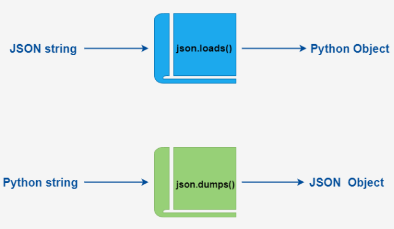
json.dump(): 在 json 的编解码过程中，Python 的原始类型与 json 类型会相互转换，具体的转化对照如下：
| Python | JSON |
|---|---|
| dict | object |
| list, tuple | array |
| str | string |
| int, float, int- & float-derived Enums | number |
| True | true |
| False | false |
| None | null |
json.load(): JSON 解码为 Python 类型转换对应表：
| JSON | Python |
|---|---|
| object | dict |
| array | list |
| string | str |
| number (int) | int |
| number (real) | float |
| true | True |
| false | False |
| null | None |
json.dumps() 与 json.loads() 实例:
1 | import json |
执行以上代码输出结果为：
1 | Python 原始数据： {'url': 'http://www.runoob.com', 'no': 1, 'name': 'Runoob'} |
接着以上实例，我们可以将一个JSON编码的字符串转换回一个Python数据结构：
1 | import json |
执行以上代码输出结果为：
1 | Python 原始数据： {'name': 'Runoob', 'no': 1, 'url': 'http://www.runoob.com'} |
如果要处理的是文件:
1 | # 写入 JSON 数据 |
python3 多线程
python与Java一样同样支持多线程, 线程可以分为:
- 内核线程：由操作系统内核创建和撤销。
- 用户线程：不需要内核支持而在用户程序中实现的线程。
Python3 线程中常用的两个模块为：
- _thread
- threading(推荐使用)
thread 模块已被废弃。用户可以使用 threading 模块代替。所以，在 Python3 中不能再使用”thread” 模块。为了兼容性，Python3 将 thread 重命名为 “_thread”。
快速创建线程:
Python中使用线程有两种方式：函数或者用类来包装线程对象。函数式：调用 _thread 模块中的start_new_thread()函数来产生新线程。语法如下:
1 | _thread.start_new_thread ( function, args[, kwargs] ) |
参数说明:
- function - 线程函数。
- args - 传递给线程函数的参数,他必须是个tuple类型。例如线程名和线程id
- kwargs - 可选参数。
1 | import _thread |
线程模块
_thread 提供了低级别的、原始的线程以及一个简单的锁，它相比于 threading 模块的功能还是比较有限的。
threading 模块除了包含 _thread 模块中的所有方法外，还提供的其他方法：
threading.currentThread():返回当前的线程变量。threading.enumerate(): 返回一个包含正在运行的线程的list。正在运行指线程启动后、结束前，不包括启动前和终止后的线程。threading.activeCount(): 返回正在运行的线程数量，与len(threading.enumerate())有相同的结果。
除了使用方法外，线程模块同样提供了Thread类来处理线程，Thread类提供了以下方法:
run():线程执行的行为。start():启动线程活动。- join([time]): 加入线程, 等待至线程中止。例如在主线程中t1.join() , 即使主线先运行结束,也会等待t1执行完再退出程序,可实现线程同步
- isAlive(): 返回线程是否活动的。
- getName(): 返回线程名。
- setName(): 设置线程名。
创建线程
实例化线程类
语法个格式:
1 | t1 = Thread(group=None,target=None, name=None, args=(), kwargs=None, *,daemon=None) |
此构造方法中，以上所有参数都是可选参数，即可以使用，也可以忽略。其中各个参数的含义如下：
- group：指定所创建的线程隶属于哪个线程组（此参数尚未实现，无需调用）；
- target：指定所创建的线程要调度的目标方法（最常用）,只写方法名即可；
- args：以元组的方式，为 target 指定的方法传递参数；
- kwargs：以字典的方式，为 target 指定的方法传递参数；
- daemon：指定所创建的线程是否为后代线程。
实例:
1 | import threading |
继承线程类
通过重写线程类的run()方法也可以创建一个线程
实例:
1 | import threading |
线程安全与锁
原子操作
原子操作（atomic operation），指不会被线程调度机制打断的操作，这种操作一旦开始，就一直运行到结束，中间不会切换到其他线程。它有点类似数据库中的 事务。
在 Python 的官方文档上，列出了一些常见原子操作
1 | L.append(x) |
而==下面这些就不是原子操作==
1 | i = i+1 |
当我们还是无法确定我们的代码是否具有原子性的时候，可以尝试通过 dis 模块里的 dis() 函数来查看
进程锁
如果多个线程共同对某个数据修改，则可能出现不可预料的结果，为了保证数据的正确性，需要对多个线程进行同步。使用 Thread 对象的 Lock 和 Rlock 可以实现简单的线程同步，这两个对象都有 acquire() 方法和 release() 方法，对于那些需要每次只允许一个线程操作的数据，可以将其操作放到 acquire 和 release 方法之间。如下：
**实例:**本实例中, 将演示两个线程同时操作count变量自增1000000次, 最后打印的结果均会小于2000000,原因是自增运算不是原子操作所以导致线程不安全, 部分自增操作被覆盖掉了, 但加锁以后就能保证每次都是2000000
1 | import threading |
线程优先队列
Python 的 Queue 模块中提供了同步的、线程安全的队列类，包括FIFO（先入先出)队列Queue，LIFO（后入先出）队列LifoQueue，和优先级队列 PriorityQueue。这些队列都实现了锁原语，能够在多线程中直接使用，可以使用队列来实现线程间的同步和优先级。
Queue 模块中的常用方法:
- Queue.qsize() 返回队列的大小
- Queue.empty() 如果队列为空，返回True,反之False
- Queue.full() 如果队列满了，返回True,反之False
- Queue.full 与 maxsize 大小对应
- Queue.get([block[, timeout]])获取队列，timeout等待时间
- Queue.get_nowait() 相当Queue.get(False)
- Queue.put(item) 写入队列，timeout等待时间
- Queue.put_nowait(item) 相当Queue.put(item, False)
- Queue.task_done() 在完成一项工作之后，Queue.task_done()函数向任务已经完成的队列发送一个信号
- Queue.join() 实际上意味着等到队列为空，再执行别的操作
1 | #!/usr/bin/python3 |
PyMySQL
什么是 PyMySQL？
PyMySQL 是在 Python3.x 版本中用于连接 MySQL 服务器的一个库，Python2 中则使用 mysqldb。PyMySQL 遵循 Python 数据库 API v2.0 规范，并包含了 pure-Python MySQL 客户端库。
安装库
1 | pip install PyMySQL |
数据库连接
实例:
1 | import pymysql |
增删改查
PyMySQL主要通过调用execute(sql)方法来执行原生sql语句字符串来操作数据库, 此外这个sql字符串还支持使用%d, %s等格式化占位符来进行参数插入
创建表
如果数据库连接存在我们可以使用execute()方法来执行sql为数据库创建表
1 | import pymysql |
查询操作
Python查询Mysql使用操作游标对象cursor的 fetchone() 方法获取单条数据, 使用fetchall() 方法获取多条数据。
- fetchone(): 该方法获取下一个查询结果集。结果集是一个对象
- fetchall(): 接收全部的返回结果集对象.
- rowcount: 这是一个只读属性，并返回执行execute()方法后影响的行数。
结果集对象是一个元组, 每个是一行数据
1 | cursor.execute("select * from `users`") |
运行结果:
1 | ((1, 'zs', '123456', 'zs@sina.com'), (2, 'lisi', '123456', 'lisi@sina.com'), (3, 'wangwu', '123456', 'wangwu@sina.com')) |
数据增删改
凡是涉及到==修改的数据的sql (例如插入,删除,更新), 都需要调用db.commit()来提交事务==, 否则会数据会操作不成功
插入数据实例:
使用execute()方法来执行sql, 此外sql 支持使用%s , %d等格式化占位符来处理sql
1 | # 省略导包 , 连接数据库和获取操作游标... |
其他的修改,删除数据都是同理,只要修改为对应的SQL即可
事务处理
Python DB API 2.0 的事务提供了两个方法 db.commit() 或 db.rollback。
对于支持事务的数据库， 在Python数据库编程中，当游标建立之时，就自动开始了一个隐形的数据库事务。commit()方法游标的所有更新操作，rollback（）方法回滚当前游标的所有操作。每一个方法都开始了一个新的事务。
错误异常处理
DB API中定义了一些数据库操作的错误及异常，下表列出了这些错误和异常:
| 异常 | 描述 |
|---|---|
| Warning | 当有严重警告时触发，例如插入数据是被截断等等。必须是 StandardError 的子类。 |
| Error | 警告以外所有其他错误类。必须是 StandardError 的子类。 |
| InterfaceError | 当有数据库接口模块本身的错误（而不是数据库的错误）发生时触发。 必须是Error的子类。 |
| DatabaseError | 和数据库有关的错误发生时触发。 必须是Error的子类。 |
| DataError | 当有数据处理时的错误发生时触发，例如：除零错误，数据超范围等等。 必须是DatabaseError的子类。 |
| OperationalError | 指非用户控制的，而是操作数据库时发生的错误。例如：连接意外断开、 数据库名未找到、事务处理失败、内存分配错误等等操作数据库是发生的错误。 必须是DatabaseError的子类。 |
| IntegrityError | 完整性相关的错误，例如外键检查失败等。必须是DatabaseError子类。 |
| InternalError | 数据库的内部错误，例如游标（cursor）失效了、事务同步失败等等。 必须是DatabaseError子类。 |
| ProgrammingError | 程序错误，例如数据表（table）没找到或已存在、SQL语句语法错误、 参数数量错误等等。必须是DatabaseError的子类。 |
| NotSupportedError | 不支持错误，指使用了数据库不支持的函数或API等。例如在连接对象上 使用.rollback()函数，然而数据库并不支持事务或者事务已关闭。 必须是DatabaseError的子类。 |
SMTP发送邮件
python的smtplib提供了一种很方便的途径发送电子邮件。它对smtp协议进行了简单的封装。Python创建 SMTP 对象语法如下：
1 | import smtplib |
- host: SMTP 服务器主机。 你可以指定主机的ip地址或者域名如:runoob.com，这个是可选参数。
- port: 如果你提供了 host 参数, 你需要指定 SMTP 服务使用的端口号，一般情况下SMTP端口号为25。
- local_hostname: 如果SMTP在你的本机上，你只需要指定服务器地址为 localhost 即可。
Python SMTP对象使用sendmail方法发送邮件，语法如下：
1 | SMTP.sendmail(from_addr, to_addrs, msg[, mail_options, rcpt_options] |
参数说明：
- from_addr: 邮件发送者地址。
- to_addrs: 字符串列表，收件人地址,一般是邮箱名。
- msg: 发送消息
这里要注意一下第三个参数，msg是字符串，表示邮件。我们知道邮件一般由标题，发信人，收件人，邮件内容，附件等构成，发送邮件的时候，要注意msg的格式。这个格式就是smtp协议中定义的格式。
实例:
1 | import smtplib |
我们使用三个引号来设置邮件信息，标准邮件需要三个头部信息： From, To, 和 Subject ，每个信息直接使用空行分割。我们通过实例化 smtplib 模块的 SMTP 对象 smtpObj 来连接到 SMTP 访问，并使用 sendmail 方法来发送信息。执行以上程序，如果你本机安装sendmail，就会输出： 邮件发送成功
第三方邮箱
如果我们本机没有 sendmail 访问，也可以使用其他服务商的 SMTP 访问（QQ、网易、Google等）。
下面以QQ邮箱举例:
1 | import smtplib |
发送html邮件
Python发送HTML格式的邮件与发送纯文本消息的邮件不同之处就是将MIMEText中_subtype设置为html。具体代码如下：
1 | import smtplib |
在 HTML 文本中添加图片
邮件的 HTML 文本中一般邮件服务商添加外链是无效的，正确添加图片的实例如下所示：
1 | # 省略了设置发件人和收件人, 发送邮件的代码 |
发送带附件的邮件
发送带附件的邮件，首先要创建MIMEMultipart()实例，然后构造附件，如果有多个附件，可依次构造，最后利用smtplib.smtp发送。
1 | import smtplib |
网络爬虫
简单爬虫架构:
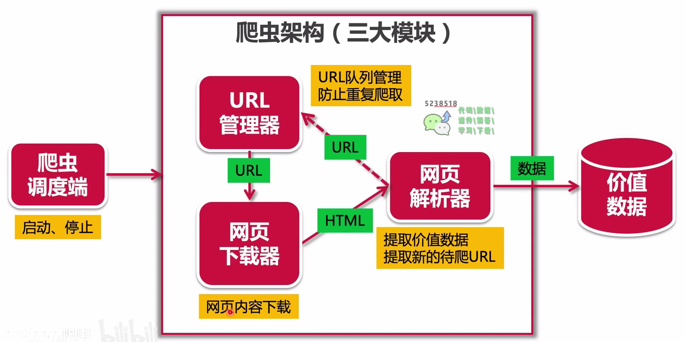
会用到的第三方库:
requests: 发送请求和网页下载BeautifulSoup/bs4: 用于解析网页Selenium:用于网页动态下载
requests库
这是一个简单易用的python Htpp库,可使用python发送http请求 常用于爬虫中对网页内容的下载;
api介绍:
Python 内置了 requests 模块，该模块主要用来发 送 HTTP 请求，requests 模块比 urllib 模块更简洁。
requests 方法
| 方法 | 描述 |
|---|---|
| delete(url, args) | 发送 DELETE 请求到指定 url |
| get(url, params, args) | 发送 GET 请求到指定 url |
| head(url, args) | 发送 HEAD 请求到指定 url |
| patch(url, data, args) | 发送 PATCH 请求到指定 url |
| post(url, data, json, args) | 发送 POST 请求到指定 url |
| put(url, data, args) | 发送 PUT 请求到指定 url |
| request(method, url, args) | 向指定的 url 发送指定的请求方法 |
参数说明如下:
json:参数为要发送到指定 url 的 JSON 对象。data:参数为要发送到指定 url 的字典、元组列表、字节或文件对象。args:其他参数，比如 cookies、headers、verify等。verify:True/False , 是否进行https证书验证,默认是, 需要自己设置证书地址
1 | import requests |
post 方法请求带参数:
格式如下:需要指定参数传值:
1 | requests.post(url, data={key: value}, json={key: value}, args) |
实例:
1 | # 表单参数，参数名为 fname 和 lname |
响应对象
上述的请求方法均会返回一个响应头对象, 该对象包含了具体的响应信息如下:
| 属性或方法 | 说明 |
|---|---|
| text | 返回响应的内容，unicode 类型数据 |
| json() | 返回结果的 JSON 对象 (结果需要以 JSON 格式编写的，否则会引发错误) |
| status_code | 返回 http 的状态码，比如 404 和 200（200 是 OK，404 是 Not Found） |
| encoding | 解码 r.text 的编码方式,默认为ISO-8859-1,中文乱码时我需要将此属性设置为utf-8 |
| headers | 返回响应头，字典格式 |
| raise_for_status() | 如果发生错误，方法返回一个 HTTPError 对象 |
| request | 返回请求此响应的请求对象 |
| apparent_encoding | 编码方式 |
| close() | 关闭与服务器的连接 |
| content | 返回响应的内容，以字节为单位 |
| cookies | 返回一个 CookieJar 对象，包含了从服务器发回的 cookie |
| elapsed | 返回一个 timedelta 对象，包含了从发送请求到响应到达之间经过的时间量，可以用于测试响应速度。比如 r.elapsed.microseconds 表示响应到达需要多少微秒。 |
| history | 返回包含请求历史的响应对象列表（url） |
| reason | 响应状态的描述，比如 “Not Found” 或 “OK” |
| is_permanent_redirect | 如果响应是永久重定向的 url，则返回 True，否则返回 False |
| is_redirect | 如果响应被重定向，则返回 True，否则返回 False |
| iter_content() | 迭代响应 |
| iter_lines() | 迭代响应的行 |
| links | 返回响应的解析头链接 |
| next | 返回重定向链中下一个请求的 PreparedRequest 对象 |
| ok | 检查 “status_code” 的值，如果小于400，则返回 True，如果不小于 400，则返回 False |
| url | 返回响应的 URL |
BeautifulSoup
python第三方库, 用于解析html文件或者xml文件获取数据
1 | pip install beautifulsoup4 |
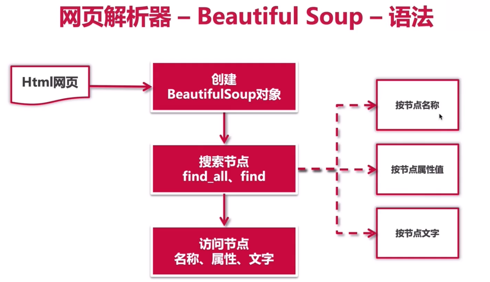
使用:
将一段文档传入BeautifulSoup 的构造方法,就能得到一个文档的对象, 可以传入一段字符串或一个文件句柄.
1 | from bs4 import BeautifulSoup |
对于BeautifulSoup构造方法, 他还可以指定解析器和编码:
1 | from bs4 import BeautifulSoup |
搜索节点
其中 返回值soup对象提供了一些我们可以操作html文档dom节点的方法:
find_all(name,attrs,string): 返回一个列表, 列表元素为所有匹配的节点tag对象:name: 字符串类型, 表示需要查找的dom节点类型, 比如当name 值为‘a’时,就查找所有的<a></a>attrs:关键字参数, 根据属性查找, 不过需要注意查找属性为class时要转换为class_string: 关键字参数, 根据html标签的内容查找
1 | # 查找网页中所有的<a href='/view/123.html'></a> |
此外还可可以使用find(name,attrs,string), 此方法只返回第一个匹配的节点
prettify(): 美化html文档内容
tag节点对象
前面说过可以通过soup对象的find_all()或find()获取标签节点对象tag, Tag 对象与XML或HTML原生文档中的tag相同:
1 | soup = BeautifulSoup('<b class="boldest">Extremely bold</b>') |
name:
每个tag都有自己的名字,通过 .name 来获取, 如果改变了tag的name,那将影响所有通过当前Beautiful Soup对象生成的HTML文档, 例如 <a>超链接</a> 的 name 属性就是 'a'
Attributes:
一个tag可能有很多个属性. tag <b class="boldest"> 有一个 “class” 的属性,值为 “boldest” . tag的属性的操作方法与字典相同:
1 | tag['class'] |
也可以直接”点”取所有属性, 比如: .attrs :
1 | tag.attrs |
tag的属性可以被添加,删除或修改. tag的属性操作方法与字典一样
多值属性:
HTML 4定义了一系列可以包含多个值的属性.在HTML5中移除了一些,却增加更多.最常见的多值的属性是 class (一个tag可以有多个CSS的class). 还有一些属性 rel , rev , accept-charset , headers , accesskey . 在Beautiful Soup中多值属性的返回类型是list:
1 | css_soup = BeautifulSoup('<p class="body strikeout"></p>') |
string:
字符串常被包含在tag内.Beautiful Soup用 NavigableString 类来包装tag中的字符串,想要获取标签对象tal的文本内容,则需要调用tag.get_text()
1 | tag.string |
lxml库
lxml和BeautifulSoup类似,都是解析库, 支持html/xml文件的内容解析, 效率高,支持XPath解析方式
XPath,全称是XML Path language,是XML路径语言，是一门在XML文档种查找信息的语言。
XPath表达式
选取节点
| 表达式 | 描述 |
|---|---|
| nodename | 选取此节点的所有子节点 |
| / | 从当前节点选取直接子节点 |
| // | 从当前节点选取子孙节点 |
| . | 选取当前节点 |
| .. | 选取当前节点的父节点 |
| @ | 选取属性 |
| * | 通配符，选择所有元素节点与元素名 |
| @* | 选取所有属性 |
在下面的表格中，我们已列出了一些路径表达式以及表达式的结果：
| 路径表达式 | 结果 |
|---|---|
| bookstore | 选取 bookstore 元素的所有子节点。 |
| /bookstore | 选取根元素 bookstore。注释：假如路径起始于正斜杠( / )，则此路径始终代表到某元素的绝对路径！ |
| bookstore/book | 选取属于 bookstore 的子元素的所有 book 元素。 |
| //book | 选取所有 book 子元素，而不管它们在文档中的位置。 |
| bookstore//book | 选择属于 bookstore 元素的后代的所有 book 元素，而不管它们位于 bookstore 之下的什么位置。 |
| //@lang | 选取名为 lang 的所有属性。 |
谓语
谓语用来查找某个特定的节点或者包含某个指定的值的节点。谓语被嵌在方括号中。在下面的表格中，我们列出了带有谓语的一些路径表达式，以及表达式的结果：
| 路径表达式 | 结果 |
|---|---|
| /bookstore/book[1] | 选取属于 bookstore 子元素的第一个 book 元素。 |
| /bookstore/book[last()] | 选取属于 bookstore 子元素的最后一个 book 元素。 |
| /bookstore/book[last()-1] | 选取属于 bookstore 子元素的倒数第二个 book 元素。 |
| /bookstore/book[position()<3] | 选取最前面的两个属于 bookstore 元素的子元素的 book 元素。 |
| //title[@lang] | 选取所有拥有名为 lang 的属性的 title 元素。 |
| //title[@lang=’eng’] | 选取所有 title 元素，且这些元素拥有值为 eng 的 lang 属性。 |
| /bookstore/book[price>35.00] | 选取 bookstore 元素的所有 book 元素，且其中的 price 元素的值须大于 35.00。 |
| /bookstore/book[price>35.00]//title | 选取 bookstore 元素中的 book 元素的所有 title 元素，且其中的 price 元素的值须大于 35.00。 |
通配符
XPath 通配符可用来选取未知的 XML 元素。
| 通配符 | 描述 |
|---|---|
| * | 匹配任何元素节点。 |
| @* | 匹配任何属性节点。 |
| node() | 匹配任何类型的节点。 |
在下面的表格中，我们列出了一些路径表达式，以及这些表达式的结果：
| 路径表达式 | 结果 |
|---|---|
| /bookstore/* | 选取 bookstore 元素的所有子元素。 |
| //* | 选取文档中的所有元素。 |
| //title[@*] | 选取所有带有属性的 title 元素。 |
运算符:
| 运算符 | 描述 | 实例 | 返回值 |
|---|---|---|---|
| or | 或 | age=10 or age=20 | 如果age等于10或者等于20则返回true反正返回false |
| and | 与 | age>19 and age<21 | 如果age等于20则返回true，否则返回false |
| mod | 取余 | 5 mod 2 | 1 |
| | | 取两个节点的集合 | //book | //cd | 返回所有拥有book和cd元素的节点集合 |
| + | 加 | 5+4 | 9 |
| - | 减 | 5-4 | 1 |
| * | 乘 | 5*4 | 20 |
| div | 除法 | 6 div 3 | 2 |
| = | 等于 | age=10 | true |
| != | 不等于 | age!=10 | true |
| < | 小于 | age<10 | true |
| <= | 小于或等于 | age<=10 | true |
| > | 大于 | age>10 | true |
| >= | 大于或等于 | age>=10 | true |
轴节点
| 轴名称 | 结果 |
|---|---|
| ancestor | 选取当前节点的所有先辈（父、祖父等）。 |
| ancestor-or-self | 选取当前节点的所有先辈（父、祖父等）以及当前节点本身。 |
| attribute | 选取当前节点的所有属性。 |
| child | 选取当前节点的所有子元素。 |
| descendant | 选取当前节点的所有后代元素（子、孙等）。 |
| descendant-or-self | 选取当前节点的所有后代元素（子、孙等）以及当前节点本身。 |
| following | 选取文档中当前节点的结束标签之后的所有节点。 |
| following-sibling | 选取当前节点之后的所有兄弟节点 |
| namespace | 选取当前节点的所有命名空间节点。 |
| parent | 选取当前节点的父节点。 |
| preceding | 选取文档中当前节点的开始标签之前的所有节点。 |
| preceding-sibling | 选取当前节点之前的所有同级节点。 |
| self | 选取当前节点。 |
1.引入解析文本
html字符串:
1 | from lxml import etree |
html文件:
1 | from lxml import etree |
2.执行xpath()
通过xpath()方法,可以通过xpath来对html进行解析
获取节点:
获取所有节点和指定的所有节点,返回的是列表类型
1 | html.xpath('//*') #//代表获取子孙节点，*代表获取所有 |
我们知道通过连续的/或者//可以查找子节点或子孙节点，那么要查找父节点可以使用..来实现也可以使用parent::来获取父节点。
匹配节点:
属性匹配
在选取节点的时候，我们还可以用@符号进行属性过滤。比如，这里如果要选取所有class为item-1的li节点，可以这样实现:
1 | html.xpath('//li[@class="item-1"]') |
如果某个属性的值有多个时，我们可以使用contains()函数来获取
通过第一种方法没有取到值(匹配属性必须为aaa的)，通过contains（）就能精确匹配到节点了(匹配属性值包含aaa就行)
1 | text = ''' |
另外我们还可能遇到一种情况，那就是根据多个属性确定一个节点，这时就需要同时匹配多个属性，此时可用运用and运算符来连接使用：
1 | html.xpath('//li[@class="aaa" and @name="fore"]/a') |
文本匹配:
在某些情况下, 我们可能不需要属性来匹配,而是通过标签的本文内容来匹配,可以通过contains（）和text()来实现文本匹配
1 | # 定位td标签内容中含有"创建机构"字样的标签 |
轴节点获取:
XPath提供了很多节点选择方法，包括获取子元素、兄弟元素、父元素、祖先元素等
1 | esult=html.xpath('//li[1]/ancestor::*') #获取所有祖先节点 |
URL管理器
通常, 一般我们会自己编写一个url管理器来将url 进行管理,比如根据已经爬取和未爬取进行状态管理,下面给出了一个通过python的set集合实现的管理器
1 | """ |
常见问题&反爬策略:
1 | requests.exceptions.ProxyError: |
==尝试关闭本机代理,关闭梯子等==
状态码418:
有反爬策略, 携带客户机请求头信息模拟请求即可
1 | header = { |
案例:
实例-爬虫简单基本结构:
本例中将演示爬取博客网站首页的所有文章的标题以及对应的连接
1 | import requests |
真实网站分页数据爬取
爬取豆瓣电影Top250
1 | import time |
爬取ajax数据
本案例中, 将通过2345天气王的历史城市天气数据接口,来爬取天气数据
1 | import time |
爬取文件,下载文件
本案例将爬取图片网站的图片, 并且将爬取到的图片进行下载
1 | import requests |
批量填写表单数据,发送请求
本案例, 通过从文件中批量读取一些名字, 作为请求参数, 通过POST请求发送进行姓名评分获取姓名评分数据
1 | import re |
names_girls_double.txt
1 | 雅惠 |
模拟登陆,爬取登陆状态信息
本案例将通过携带cookie和 token 来实现模拟人工登陆, 随后获取登陆后才能查看的 “职业”板块评论信息
1 | import requests |
定位请求程序代码,深入分析
有些请求的参数并不是直接传递, 而是通过转换成json字符串进行传递,如下将通过爬取博客园分页文章来作为示例:
分析请求接口和参数:
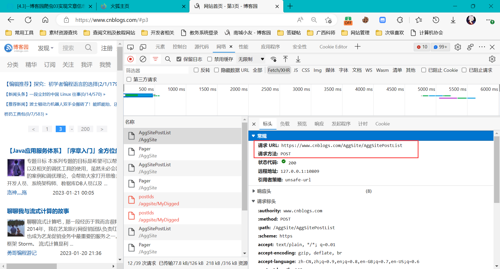
参数:
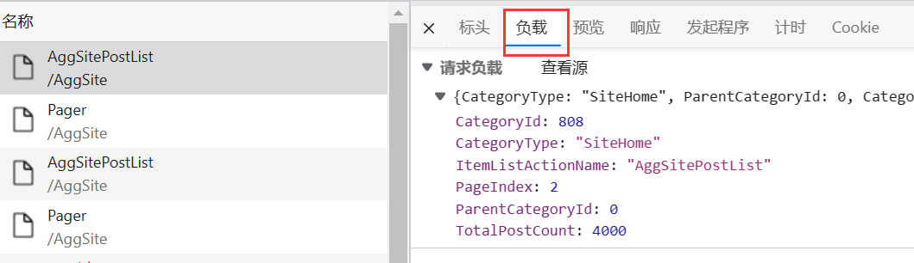
编写测试代码:
1 | url = "https://www.cnblogs.com/AggSite/AggSitePostList" |
结果发现状态码为415, 可能是请求头的原因, 加上请求头,参考: HTTP响应的状态码415解决
1 | # 如下是经过逐步筛查发现有用的请求头 |
状态码变成了400, 这个原因是参数与服务器要求的参考不一样,例如: 参数名名称不一样,或后端要求json字符串,而前端传递了一个对象
==我们检查发起请求的程序代码:==
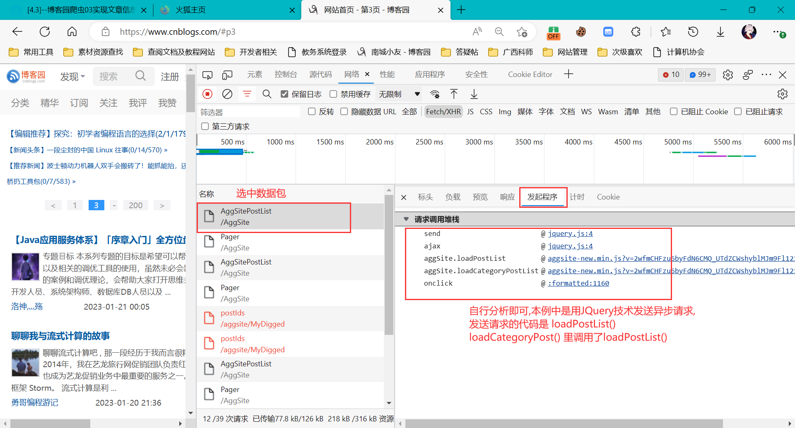
我们点击loadPostList()进入分析:
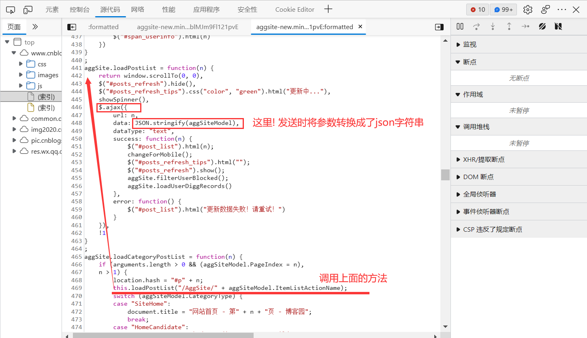
最后, 改进程序,将参数也转换成json字符串, 就可以获取成功了
1 | import json |
爬虫框架Scrapy入门
Scrapy是基于Python的非常流行的网络爬虫框架,用来抓取web站点并从页面总提取结构化数据, 结构如下:
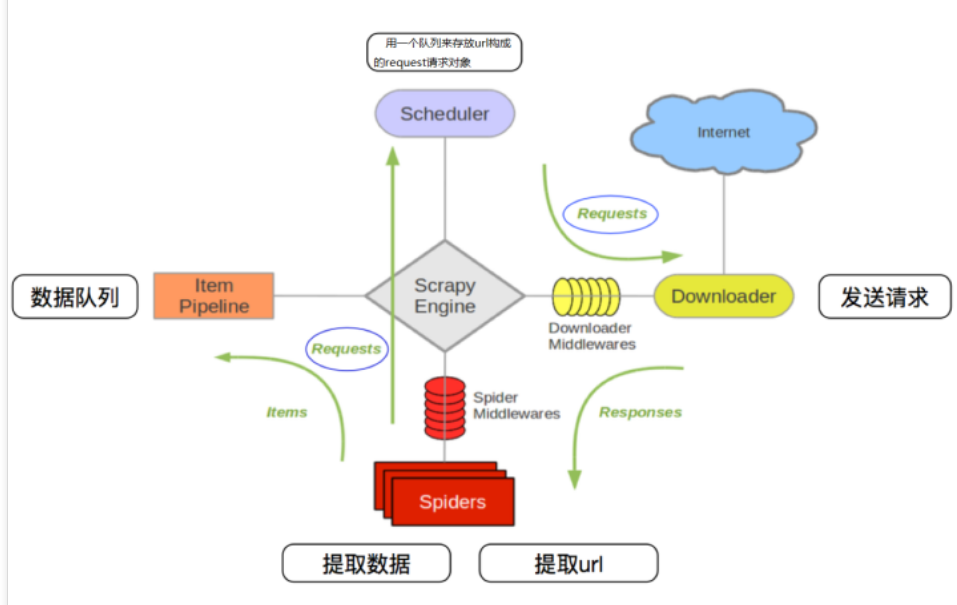
其流程可以描述如下：
- 爬虫中起始的url构造成request对象–>爬虫中间件–>引擎–>调度器
- 调度器把request–>引擎–>下载中间件—>下载器
- 下载器发送请求，获取response响应—->下载中间件—->引擎—>爬虫中间件—>爬虫
- 爬虫提取url地址，组装成request对象—->爬虫中间件—>引擎—>调度器，重复步骤2
- 爬虫提取数据—>引擎—>管道处理和保存数据
scrapy的三个内置对象:
- request请求对象：由url method post_data headers等构成
- response响应对象：由url body status headers等构成
- item数据对象：本质是个字典
每个模块的具体作用:
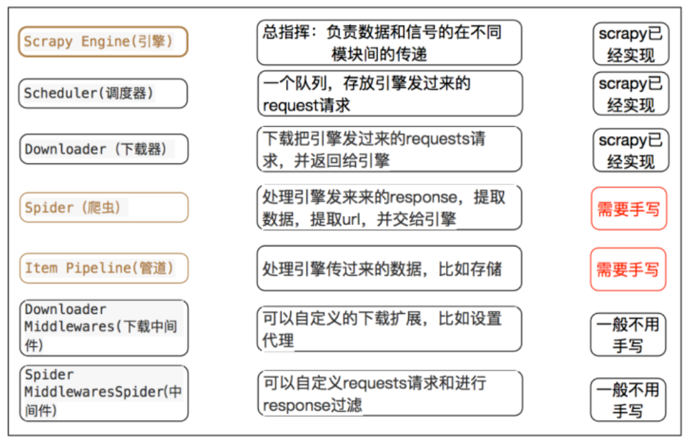
自动化
Selenium-浏览器自动化
中文文档:https://python-selenium-zh.readthedocs.io/zh_CN/latest/
Selenium 是一个可以模拟浏览器行为的第三方库, 通常用于自动化测试和网络爬虫,Selenium Python提供了一个很方便的接口来驱动 Selenium WebDriver
工作原理:
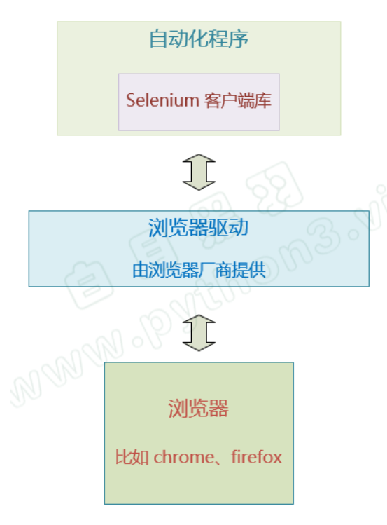
从上图可以看出：
我们写的自动化程序 需要使用 客户端库。我们程序的自动化请求都是通过这个库里面的编程接口发送给浏览器。
比如，我们要模拟用户点击界面按钮， 自动化程序里面就应该 调用客户端库相应的函数， 就会发送 点击元素 的请求给 下方的 浏览器驱动。 然后，浏览器驱动再转发这个请求给浏览器。
这个自动化程序发送给浏览器驱动的请求 是HTTP请求。
Selenium组织提供了多种编程语言的Selenium客户端库， 包括 java，python，js， ruby等，方便不同编程语言的开发者使用。我们只需要安装好客户端库，调用这些库，就可以发出自动化请求给浏览器咯。
浏览器驱动 也是一个独立的程序，是由浏览器厂商提供的， 不同的浏览器需要不同的浏览器驱动。 比如 Chrome浏览器和 火狐浏览器有 各自不同的驱动程序。浏览器驱动接收到我们的自动化程序发送的界面操作请求后，会转发请求给浏览器， 让浏览器去执行对应的自动化操作。
浏览器执行完操作后，会将自动化的结果返回给浏览器驱动， 浏览器驱动再通过HTTP响应的消息返回给我们的自动化程序的客户端库。自动化程序的客户端库 接收到响应后，将结果转化为 数据对象 返回给 我们的代码。
安装
1 | pip install Selenium |
注意: 我们不仅需要安装Selenium, 还需要安装浏览器驱动
浏览器驱动 是和 浏览器对应的。 不同的浏览器 需要选择不同的浏览器驱动。目前主流的浏览器中，谷歌 Chrome 浏览器对 Selenium自动化的支持更加成熟一些。推荐大家使用 Chrome浏览器 。
驱动版本尽量和本地安装的浏览器版本相同或接近
谷歌浏览器驱动下载地址:https://chromedriver.storage.googleapis.com/index.html
下载好之后解压,
也可以下载Edge浏览器驱动
快速入门
随后编写如下代码将会自动开打对应浏览器并且跳转至百度
1 | from selenium import webdriver |
通过上述例子可以发现, 我们需要指定驱动程序的路径, 但我们可以将驱动程序所在目录添加到系统环境变量Path中,就不再需要指定路径
1 | wd = webdriver.Edge() |
选择元素
根据html的id属性值选择元素:
1 | from selenium import webdriver |
WebElement对象
浏览器 找到id为kw的元素后，将结果通过 浏览器驱动 返回给 自动化程序， 所以 find_element 方法会 返回一个 WebElement 类型的对象。我们通过这个WebElement对象，就可以操控对应的界面元素。
调用这个对象的 send_keys() 方法就可以在对应的元素中输入字符串，
调用这个对象的 click()方法就可以 点击 该元素。
通过WebElement对象的text属性可以获取标签的文本内容
1 | wd = webdriver.Edge() |
选择元素方式:
此外,我们还有很多方式选择元素:
根据标签名选择元素:
1 | wd.find_element(By.TAG_NAME, 'input').send_keys('sdfsdf') |
根据class属性值选择元素:
1 | wd.find_element(By.CLASS_NAME, 'class属性值') |
也可以使用CSS选择器来定位:
1 | wd.find_element(By.CSS_SELECTOR,'button[type=submit]') |
还可以根据Xpath来定位:
1 | wd.find_element(By.XPATH,"XPath表达式") |
选择多个元素
与选择单个元素类似, 使用find_elements() , 注意element后面多了个s
ind_elements 返回的是找到的符合条件的 所有 元素 (这里有3个元素)， 放在一个 列表 中返回。而如果我们使用 wd.find_element() (注意少了一个s) 方法， 就只会返回第一个元素。
1 | wd.get('https://cdn2.byhy.net/files/selenium/sample1.html') |
嵌套选择
WebElement对象同WebDriver对象也可以调用 find_elements(), find_element() 之类的方法来选择自己的子孙元素
WebDriver 对象选择元素的范围是整个 web页面(即使整个html标签的内容)
WebElement 对象选择元素的范围是该元素的内部。
轮询选择元素
在我们进行网页操作的时候， 有的元素内容不是可以立即出现的， 可能会等待一段时间。(例如我们点击查询按钮后需要操作查询结果,但由于网络原因查询结果可能会加载比较慢,而我们代码就找不到查询结果)
即: 我们的代码执行的速度比 网站响应的速度 快。网站还没有来得及 返回搜索结果，我们就执行了操作搜索结果的代码
有两种解决方案:
一种是通过time.sleep()暂停当前线程来等待 (不推荐)
Selenium提供了一个更合理的解决方案:
当发现元素没有找到的时候， 并不立即返回 找不到元素的错误。而是周期性（每隔半秒钟）重新寻找该元素，直到该元素找到，或者超出指定最大等待时长，这时才 抛出异常（如果是 find_elements 之类的方法， 则是返回空列表）。
==Selenium 的 Webdriver 对象 有个方法叫 implicitly_wait() ，可以称之为 隐式等待 ，或者 全局等待 。该方法接受一个参数， 用来指定 最大等待时长。==
1 | wd.implicitly_wait(second) |
那么后续所有的 find_element 或者 find_elements 之类的方法调用 都会采用上面的策略：
如果找不到元素， 每隔 半秒钟 再去界面上查看一次， 直到找到该元素， 或者 过了10秒 最大时长。
技巧:冻结界面(debugger)
有些网站上面的元素， 我们鼠标放在上面，会动态弹出一些内容。比如上述例子，百度首页的右上角，有个 更多产品 选项，如下图所示:
如果我们把鼠标放在上边，就会显示一些图标。如果我们要用 selenium 自动化 点击某个图标，就需要 F12 查看这个元素的特征。但是 当我们的鼠标从某个图标 移开， 这个 栏目就整个消失了， 就没法 查看 其对应的 HTML。
这是我们可以通过执行 js 代码的debugger来卡住页面达到冻结页面的效果, debug状态有个特性， 界面被冻住， 不管我们怎么点击界面都不会触发事件。这时候我们就可以通过开发者工具来查看隐藏元素特征了
实例:
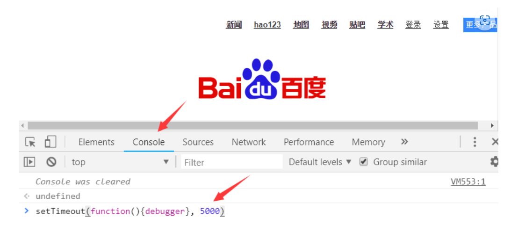
其实,我们也可以不获取隐藏元素的特征,而是继续操作鼠标下移点击选择进行操作也可.
操作元素:
选择到元素之后，我们的代码会返回元素对应的 WebElement对象，通过这个对象，我们就可以 操控 元素了。
操控元素通常包括
- 点击元素
- 在元素中输入字符串，通常是对输入框这样的元素
- 获取元素包含的信息，比如文本内容，元素的属性
关闭浏览器窗口可以调用WebDriver对象的 quit 方法
点击:
点击元素 非常简单，就是调用元素WebElement对象的 click()方法。
当我们调用 WebElement 对象的 click 方法去点击 元素的时候， 浏览器接收到自动化命令，点击的是该元素的 中心点 位置 。
输入框
输入字符串 也非常简单，就是调用元素WebElement对象的send_keys()方法。
如果我们要 把输入框中已经有的内容清除掉，可以使用WebElement对象的clear()方法
获取元素信息:
获取文本(隐藏)内容:
通过WebElement对象的 text 属性，可以获取元素 展示在界面上的 文本内容。但是，有时候，元素的文本内容没有展示在界面上，或者没有完全完全展示在界面上。 这时，用WebElement对象的text属性，获取文本内容，就会有问题。出现这种情况，可以尝试使用 element.get_attribute('innerText') ，或者 element.get_attribute('textContent')
使用 innerText 和 textContent 的区别是，前者只显示元素可见文本内容，后者显示所有内容（包括display属性为none的部分）
注: get_attribute 调用本质上就是调用 HTMLElement 对像的属性, 比如
element.get_attribute(‘value’) 等价于js里面的 element.value
element.get_attribute(‘innerText’) 等价于js里面的 element.innerText
特殊的: 获取网页的标题内容, 即<title></title>标签的内容,要通过wb对象的title属性
1 | wd = webdriver.Edge() |
获取元素属性
通过WebElement对象的 get_attribute 方法来获取元素的属性值 , 比如要获取元素属性class的值，就可以使用 element.get_attribute('class')
获取html文本
要获取整个元素对应的HTML文本内容，可以使用 element.get_attribute('outerHTML')
如果，只是想获取某个元素 内部 的HTML文本内容，可以使用 element.get_attribute('innerHTML')
获取输入框里面的文字
对于input输入框的元素，要获取里面的输入文本，用text属性是不行的，这时可以使用 element.get_attribute('value')
frame切换/窗口切换
切换frame窗口
在html语法中，frame 元素 或者iframe元素的内部 会包含一个 被嵌入的 另一份html文档。这个 iframe 元素非常的特殊, 在我们使用selenium打开一个网页是， 我们的操作范围默认是当前的 html ， 并不包含被嵌入的html文档里面的内容。==意味着有时候通过当前的html范围并不能选择到frame标签内部的元素==
如果我们需要选择frame标签内部的元素, 则通过wd.switch_to.frame(frame_reference)方法进行切换
其中， frame_reference 参数可以是 frame 元素的属性 name 或者 ID 。例如:
1 | # 切换到 id属性为frame1 的 frame标签窗口 |
需要注意的是: 如果已经切换到某个iframe里面进行操作，后续选择和操作界面元素 就都是在这个frame里面进行的。 如果需要切换回原来的主html(最外部的html称之为主html) , 可以使用如下方法:
1 | wd.switch_to.default_content() |
实例:
1 | wd = webdriver.Edge() |
切换窗口(标签页)
在网页上操作的时候，我们经常遇到，点击一个链接 或者 按钮，就会打开一个 窗口(标签页) 。
用Selenium写自动化程序时在当前窗口里点击一个连接打开了一个新的窗口, WebDriver对象默认对应的还是老窗口, 之后的操作也还是在老窗口进行
要到新的窗口里面操作可以使用Webdriver对象的switch_to属性的 window()方法:
1 | wd.switch_to.window(handle) |
WebDriver对象有window_handles 属性，这是一个列表对象， 里面包括了当前浏览器里面**所有的窗口句柄(窗口句柄也就是窗口实例的标识,可以当成窗口id)**。
我们可以通过遍历wd对象的所有窗口句柄, 找到想要操作的句柄来进行操作:
1 | for handle in wd.window_handles: |
**如果需要切换回最开始的窗口, 可以参考如下做法:**使用临时遍历保存当前窗口的句柄
1 | # mainWindow变量保存当前窗口的句柄 |
关闭窗口:
wd.close(): 关闭当前窗口wd.quit(): 退出驱动并关闭所有关联的窗口
复杂元素操作-选择框
html的input标签有三种选择框, 分别是单选框, 复选框, 下拉框, 根据不同的选择框我们要执行不同的操作
radio 单选框
radio框选择选项，直接用WebElement的click()方法，模拟用户点击就可以了。
实例:
1 | wb = webdriver.Edge() |
其中 #s_radio input[name="teacher"]:checked 里面的 :checked 是CSS伪类选择 , 表示选择 checked 状态的元素，对 radio 和 checkbox 类型的input有效
checkbox 多选框
对checkbox进行选择，也是直接用 WebElement 的 click 方法，模拟用户点击选择。
需要注意的是，要选中checkbox的一个选项，必须 先获取当前该复选框的状态 ，如果该选项已经勾选了，就不能再点击。否则反而会取消选择。
所以在处理此类选择框时, 通常先把经选中的选项全部点击一下, 确保都是未选状态, 随后在进行勾选
1 | # 先把 已经选中的选项全部点击一下 |
select 下拉框
radio框及checkbox框都是input元素, 只是里面的type不同而已。select框则是一个新的select标签
对于Select 选择框， Selenium 专门提供了一个 Select类 进行操作。Select类 提供了如下的方法:
select_by_value()
比如，下面的HTML，
1 | <option value="foo">Bar</option> |
就可以根据 foo 这个值选择该选项，
1 | s.select_by_value('foo') |
select_by_index()
根据选项的 次序 （从1开始），选择元素
select_by_visible_text()
根据选项的 可见文本 ，选择元素。比如，下面的HTML，
1 | <option value="foo">Bar</option> |
就可以根据 Bar 这个内容，选择该选项
1 | s.select_by_visible_text('Bar') |
deselect_by_value()
根据选项的value属性值， 去除 选中元素
deselect_by_index()
根据选项的次序(Selenium4索引从0开始,以前从1 开始)，去除 选中元素
deselect_by_visible_text()
根据选项的可见文本，去除 选中元素
deselect_all()
去除 选中所有元素
实例:
1 | # 导入Select类 |
**补充:**对于select标签实现的单选框和多选框, 均适用上述方法
元素更多操作
之前我们对web元素做的操作主要是：选择元素，然后 点击元素 或者 输入 字符串。显然,这些操作已经能满足大部分需求, 但是有些时候, 我们还需要一些其他的操作: 比如：比如 鼠标右键点击、双击、移动鼠标到某个元素、鼠标拖拽等。
这些操作，可以通过 Selenium 提供的 ActionChains 类来实现。ActionChains 类 里面提供了 一些特殊的动作的模拟，我们可以通过 ActionChains 类的代码查看到，如下所示
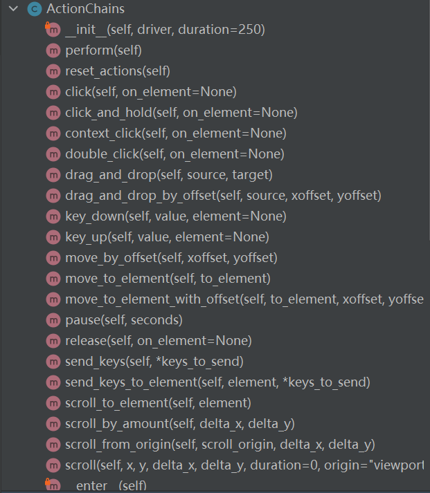
我们以移动鼠标到某个元素为例。
百度首页的右上角，有个 更多产品 选项，如下图所示
如果我们把鼠标放在上边，就会显示一些图标。下面我们将使用使用 ActionChains 来 模拟鼠标移动 操作的代码如下：
1 | wb = webdriver.Edge() |
更多技巧
上传文件:
有时候，网站操作需要上传文件, 比如，著名的在线图片压缩网站： https://tinypng.com/
注:通常，网站页面上传文件的功能，是通过 type 属性 为 file 的 HTML input 元素实现的。
使用selenium自动化上传文件，我们只需要定位到该input元素，然后通过 send_keys() 方法传入要上传的文件路径即可。
示例:
1 | # 先定位到上传文件的 input 元素 |
如果需要上传多个文件，可以多次调用send_keys，如下
1 | ele = wd.find_element(By.CSS_SELECTOR, 'input[type=file]') |
但是，有的网页上传，是没有 file 类型 的 input 元素的。如果是Windows上的自动化，可以采用 Windows 平台专用的方法：
需要确保 pywin32 已经安装:
1 | pip install pypiwin32 |
示例:
1 | # 找到点击上传的元素，点击 |
截屏
有的时候，我们需要把浏览器屏幕内容保存为图片文件。比如，做自动化测试时，一个测试用例检查点发现错误，我们可以截屏为文件，以便测试结束时进行人工核查。
1 | from selenium import webdriver |
窗口大小
有时候我们需要获取窗口的属性和相应的信息，并对窗口进行控制 (注: 此处窗口指的是浏览器的一个标签页)
- 获取窗口大小
1 | WebDriver.get_window_size() |
- 改变窗口大小
1 | WebDriver.set_window_size(x, y) |
获取网页URL及标题
1 | driver = webdriver.Edge() |
手机模式
我们可以通过 desired_capabilities 参数，指定以手机模式打开chrome浏览器( Edge同理)
1 | mobile_emulation = { "deviceName": "Nexus 5" } |
执行JavaScript
我们可以通过WebDriver对象的execute_script()方法让浏览器运行一段javascript代码，并且得到返回值，如下:
1 | # 直接执行 javascript，里面可以直接用return返回我们需要的数据 |
有时，自动化的网页内容很长，或者很宽，超过一屏显示，如果我们要点击的元素不在窗口可见区内，新版本的selenium协议， 浏览器发现要操作（比如点击操作）的元素，不在可见区内，往往会操作失败，出现类似下面的提示
1 | element click intercepted: Element <span>这里是元素html</span> |
这时，可以调用 execute_script 直接执行js代码，让该元素出现在窗口可见区正中
1 | driver.execute_script("arguments[0].scrollIntoView({block:'center',inline:'center'})", job) |
其中 arguments[0] 就指代了后面的第一个参数 job 对应的js对象，
js对象的 scrollIntoView 方法，就是让元素滚动到可见部分
block:'center' 指定垂直方向居中
inline:'center' 指定水平方向居中
浏览器对话框处理
有的时候，我们经常会在操作界面的时候，出现一些弹出的对话框。这些对话框是浏览器本身自带的,不是html的dom元素, 弹出的对话框有三种类型，分别是 Alert（警告信息）、confirm（确认信息）和prompt（提示输入）
比如这个网站: 请点击打开这个网址
按钮操作:
我们可以使用wd对象的switch_to.alert属性的如下的一些方法来对其进行操作处理
1 | WebDriver.switch_to.alert.accept() |
- 相当于三种框点击确定按钮
1 | WebDriver.switch_to.alert.dismiss() |
- 相当于confirm框和prompt框的取消按钮
1 | WebDriver.switch_to.alert.send_keys("输入内容") |
- 相当于prompt框输入内容
获取对话框内容:
1 | WebDriver.switch_to.alert.text |
Appium-手机自动化
官方文档: 简介 - Appium
简介
Appium 是一个移动 App （手机应用）自动化工具。Appium 自动化方案的特点：
开源免费
支持多个平台
iOS （苹果）、安卓 App 的自动化都支持。
支持多种类型的自动化
支持 苹果、安卓 应用 原生界面 的自动化
支持 应用 内嵌 WebView 的自动化
支持 手机浏览器 中的 web网站自动化
支持 flutter 应用的自动化
支持多种编程语言
像 Selenium 一样， 可以用多种编程语言 调用它 开发自动化程序
工作原理:
简单来说appium充当一个中间服务器的功能，接收来自我们代码的请求，然后发送到手机上进行执行。
appium是基于webdriver协议添加对移动设备自动化api扩展而成的，所以具有和webdriver一样的特性, webdriver是基于http协议的，第一连接会建立一个session会话，并通过post发送一个json告知服务端相关测试信息
对于android来说，4.2以后是基于uiautomator框架实现查找注入事件的，4.2以前则是instrumentation框架的，并封装成一个叫Selendroid提供服务
Appium启动时会创建一个http：127.0.0.1:4723/wd/hub服务端（相当于一个中转站），脚本会告诉服务器我要做什么，服务端再去跟设备打交道，服务端完成了脚本交给他的任务之后
原理图:
和Selenium 原理图很像。因为 Appium自动化架构就是借鉴的Selenium。大家看看这幅图， 包含了 3个主体部分 ： 自动化程序、Appium Server、移动设备
自动化程序
自动化程序是由我们来开发的，实现具体的 手机自动化 功能。
要发出具体的指令控制手机，也需要使用 客户端库。
和Selenium一样，Appium 组织 也提供了多种编程语言的客户端库，包括 java，python，js， ruby等，方便不同编程语言的开发者使用。
我们需要安装好客户端库，调用这些库，就可以发出自动化指令给手机。
Appium Server
Appium Server 是 Appium 组织开发的程序，它负责管理手机自动化环境，并且转发 自动化程序的控制指令 给 移动端设备，并且转发 移动端设备给 自动化程序的响应消息。
手机设备为什么能 接收并且处理自动化指令呢？
因为，Appium Server 会在手机上 安装一个 自动化代理程序， 代理程序会等待自动化指令，并且执行自动化指令
比如：要模拟用户点击界面按钮，Appium 自动化系统的流程是这样的：
- 自动化程序 调用客户端库相应的函数， 发送
点击元素的指令（封装在HTTP消息里）给 Appium Server - Appium Server 再转发这个指令给 手机上的自动化代理
- 手机上的自动化代理 接收到 指令后，调用手机平台的自动化库，执行点击操作，返回点击成功的结果给 Appium Server
- Appium Server 转发给 自动化程序
- 自动化程序了解到本操作成功后，继续后面的自动化流程
其中，自动化代理控制，使用的什么库来实现自动化的呢？
如果测试的是苹果手机， 用的是苹果的 XCUITest 框架 （IOS9.3版本以后）
如果测试的是安卓手机，用的是安卓的 UIAutomator 框架 (Android4.2以后)
这些自动化框架提供了在手机设备上运行的库，可以让程序调用这些库，像人一样自动化操控设备和APP，比如：点击、滑动，模拟各种按键消息等。
环境搭建
本例中主要以安卓为例.
安装client编程库
根据原理图， 我们知道自动化程序需要调用客户端库和 Appium Server 进行通信。Python语言开发，所以用pip安装
1 | pip install appium-python-client |
安装Appium Server
Appium Server 是用 nodejs 运行的，基于js开发出来的。Appium组织为了方便大家安装使用，制作了一个可执行程序 Appium Desktop，把 nodejs 运行环境、Appium Server 和一些工具 打包在里面了，只需要简单的下载安装就可以了。
下载地址: Release v1.22.3-4 · appium/appium-desktop · GitHub ,
本文中使用的版本为: Appium-windows-1.15.1.exe
安装JDK
安卓APP的自动化，必须要安装安卓SDK（后面会讲到），而安卓SDK需要 JDK 环境。本文中以jdk1.8为例, 安装好后还需要配置好jdk的系统环境变量
安装 Android SDK
对于安卓APP的自动化，Appium Server 是需要 Android SDK的。因为要用到里面的一些工具，比如 要执行命令设置手机、传送文件、安装应用、查看手机界面等。
下载安装好解压后, 推荐配置一下环境变量:
添加ANDROID_HOME , 设置值为sdk包解压目录
修改添加环境变量PATH , 加入 adb所在目录 , 值为 %ANDROID_HOME%\platform-tools
连接手机
真机连接
上述的软件环境都准备好以后，要自动化手机APP，需要：
- 在你运行程序的电脑上 用 USB线 连接上 你的安卓手机
- 进入
手机设置->关于手机，不断点击版本号菜单（7次以上）， - 退出到上级菜单，在开发者模式中，启动USB调试
如果手机连接USB线后，手机界面弹出 是否允许调试 提示。选择允许
注意：
有的手机系统，可能需要一些额外的选项需要设置好。
比如，有的手机，开发者选项里 需要打开 允许通过USB安装应用 等。
总之，给USB开发调试 尽可能方便的控制手机。
连接好以后，打开命令行窗口， 执行 adb devices -l 命令来列出连接在电脑上的安卓设备。如果输出 类似如下的内容：
1 | List of devices attached |
表示电脑上可以查看到 连接的设备，就可以运行自动化程序了。
模拟器
各种模拟器介绍以及连接方法: Android开发者必备工具-常见Android模拟器(MuMu、夜神、蓝叠、逍遥、雷电、Genymotion…)_
下面以夜神模拟器为例:
在模拟器中打开开发者模式和允许设备调试以后, 在电脑上执行:
1 | adb connect 127.0.0.1:62001 |
夜神模拟器默认端口是: 62001
查看是否连接成功:
1 | adb devices -l |
随后像真机一样正常连接即可
可能会出现的问题:
解决方案: appium找不 到夜神模拟器could not find a connected Android device的解决办法 - 潇洒然 - 博客园 (cnblogs.com)
1 | 报错: Could not find a connected Android device. |
快速入门
下面是一段使用 Appium 自动化的打开 B站 应用，搜索 白月黑羽 发布的教程视频，并且打印视频标题的示例。
**注意! 运行代码前，要先 运行 Appium Desktop **
1 | from appium import webdriver |
提示:
Appium Python 现在已经升级到 2.x 大版本，依赖 Selenium 4 以后， 下面这种 find_element_by* 方法都作为过期不赞成的写法
1 | driver.find_element_by_id('username').send_keys('byhy') |
运行会有告警，都要写成下面这种格式
1 | wd.find_element(By.ID, 'username').send_keys('byhy') |
Package和Activity
在上面的例子, 我们可以发现, 除了需要配置一些关于手机系统的一些信息外, 还需要其他的一些配置信息,例如:
启动APP Package名称appPackage , 启动Activity名称appActivity等, 我们可以通过 abd shell 脚本命令来获取信息
已安装
假如需要获取的应用是已经安装好的, 我们使用手机打开应用,在电脑上执行下面的命令:
1 | adb shell dumpsys activity recents | find "intent={" |
会显示如下，最近的 几个 activity 信息，
1 | intent={act=android.intent.action.MAIN cat=[android.intent.category.LAUNCHER] flg=0x10200000 cmp=tv.danmaku.bili/.ui.splash.SplashActivity} |
其中第一行就是当前的应用，我们特别关注最后
1 | cmp=tv.danmaku.bili/.ui.splash.SplashActivity |
应用的package名称就是 tv.danmaku.bili
应用的启动Activity就是 .ui.splash.SplashActivity
未安装,有apk
假如我们已经有需要调试的app的apk文件,在电脑端执行如下命令
1 | androidsdk安装解压目录\build-tools\29.0.3\aapt.exe dump badging apk文件全路径 | find "package: name=" |
输出信息中，就有应用的package名称
1 | package: name='tv.danmaku.bili' versionCode='5531000' versionName='5.53.1' platformBuildVersionName='5.53.1' compileSdkVersion='28' compileSdkVersionCodename='9' |
再执行如下命令:
1 | androidsdk安装解压目录\build-tools\29.0.3\aapt.exe dump badging apk文件全路径 | find "launchable-activity" |
输出信息中，就有应用的启动Activity
1 | launchable-activity: name='tv.danmaku.bili.ui.splash.SplashActivity' label='' icon='' |
adb 命令
Android 调试桥 (adb) | Android 开发者 | Android Developers (google.cn)
adb 全程 Android Debug Bridge，这个adb 使用非常广泛。可以与 Android 手机设备进行通信，它可进行各种设备操作。比如： 安装应用和调试应用，传输文件，甚至登录到手机设备上shell的进行访问，就像远程登录一样 , 这个adb 在 sdk的 platform-tools 目录下面， 请大家确保路径在path环境变量中。
Appium 对anroid的自动化就非常依赖这个adb工具。 执行自动化过程中，有很多内部操作，比如获取设备信息，传送文件到手机，安装apk，启动某些程序等，都是通常这个adb实现的。
==tips: 我们可以通过os.system()==或subprocess来通过python代码执行操作系统批处理脚本shell
所以我们也可以通过python来执行adb命令来完成一些代码实现不了的操作
比如，我们自动化过程中，可能需要截屏手机，并且下载到指定目录中，就可以在我们的Python程序中这样写:
1 | import os |
特别是，还可以通过adb 使用 am(activity manager) 和pm (package manager) 两个工具， 可以启动 Activity、强行停止进程、广播 intent、修改设备屏幕属性、列出应用、卸载应用等。
查看连接的设备:
1 | adb devices -l |
列出文件和传输文件:
1 | # 查看目录 |
shell:
登录到手机设备上shell的进行访问，就像远程登录一样，可用来在连接的设备上运行各种命令。
大家可以 执行一下 adb shell 然后执行各种 安卓支持的 Linux命令，比如 ps、netstat、netstat -an|grep 4724、 pwd、 ls 、cd 、rm 等。执行quit退出 shell
检查元素工具
从示例代码，大家就可以发现，和Selenium Web自动化一样，要操作界面元素，必须先 定位（选择）元素。从示例代码，大家就可以发现，和Selenium Web自动化一样，要操作界面元素，必须先 定位（选择）元素。
find_element_by_XXX方法，返回符合条件的第一个元素，找不到抛出异常find_elements_by_XXX方法，返回符合条件的所有元素的列表，找不到返回空列表- 通过
WebDriver对象调用这样的方法，查找范围是整个界面 - 通过
WebElement对象调用这样的方法，查找范围是该节点的子节点
界面元素查看工具:
做 Selenium Web 自动化的时候，要找到元素，我们是通过浏览器的开发者工具栏来查看元素的特性，根据这些特性（属性和位置），来定位元素 . Appium 要自动化手机应用，同样需要工具查看界面元素的特征。
常用的查看工具是： Android Sdk包中的 uiautomateviewer 和 Appium Desktop 中的 Appium Inspector
**两款工具配合使用比较好, **
Appium Inspector: 优点是可以更具有多种元素特征查找元素的功能, 功能比较丰富,缺点是运行速度比较慢,需要进行一些配置
uiautomateviewer: 优点是运行速度快, 但是功能单一, 只能通过鼠标定位获取指定元素信息, 不能通过其他方式查找元素信息,无法确定元素的唯一性
Appium Inspector
Appium Desktop 中自带的工具 Appium Inspector 可以查看元素。打开Appium后,启动Appium Server
连接好手机后
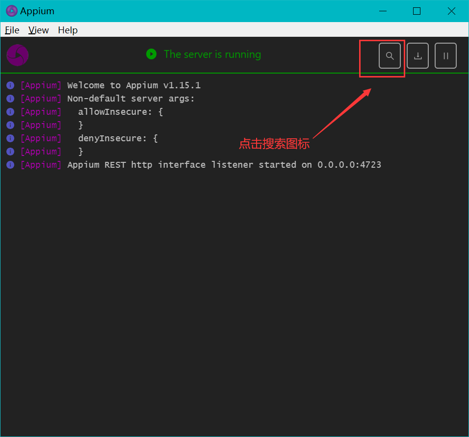
随后填写配置信息, 包括操作系统版本信息,App包名,和活动名等配置:
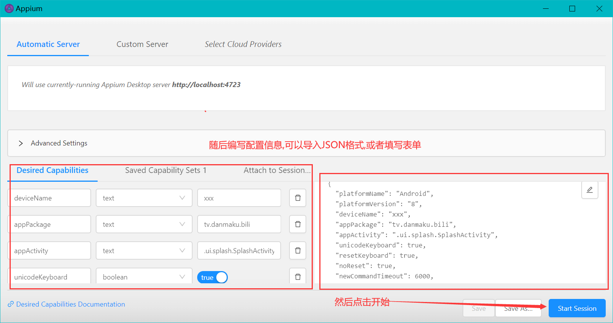
随后便可以看到对应元素的特征:
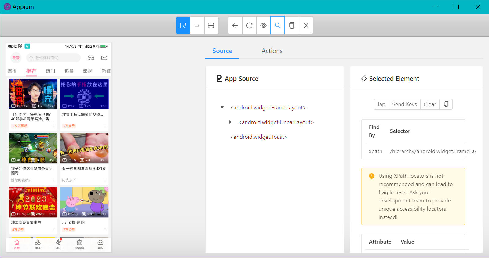
uiautomateviewer
uiautomatorviewer是android SDK自带的一个元素定位Java工具。通过截屏并分析XML布局文件的方式，为用户提供控件信息查看服务。使用uiautomatorviewer，你可以检查一个应用的UI来查看应用的布局和组件以及相关的属性。该工具位于android SDK目录下的tools\bin子目录下。在该目录下双击uiautomatorviewer.bat就可以启动
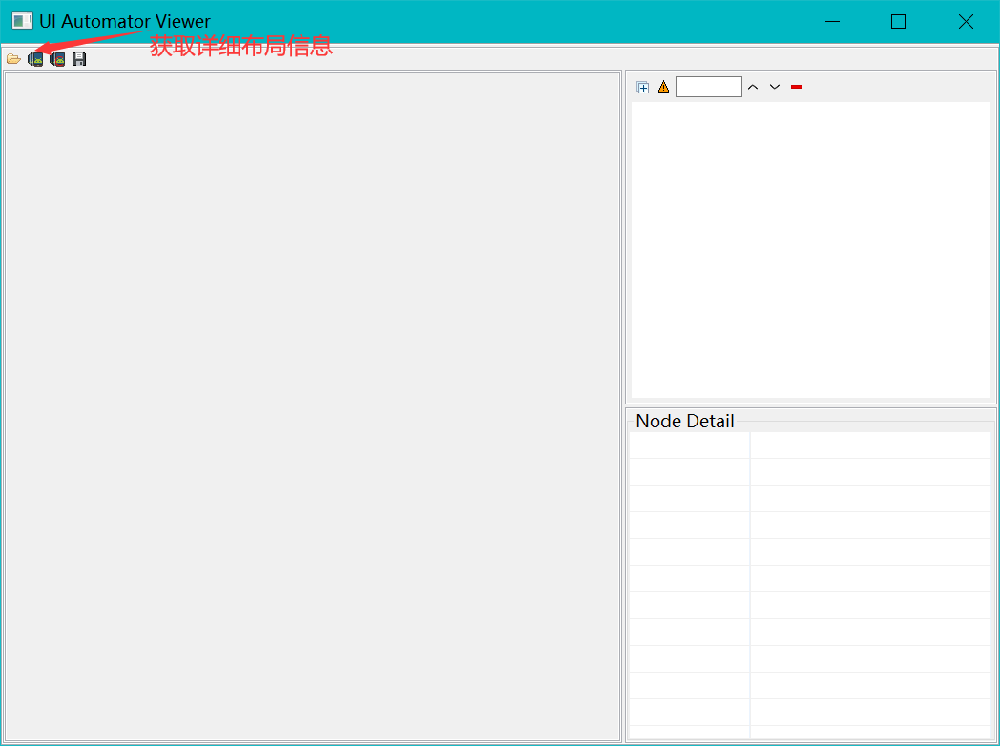
UI界面介绍:上方区域 : 4个按钮从左至右功能分别是：打开已经保存的布局，获取详细布局，获取简洁布局，保存布局。
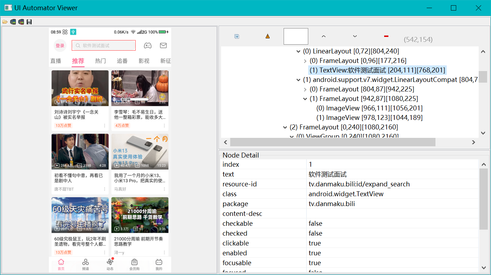
定位元素
由于Appium是基于Selenium实现, 所以在操作元素之前需要定位元素 , 移动端定位元素除了有Web端元素特征外,还可以有自己的元素特征:
根据ID
在Selenium Web自动化中, 我们知道,如果能根据ID选择定位元素，最好根据ID，因为通常来说ID是唯一的，所以根据ID选择 效率高。在安卓应用自动化的时候，同样可以根据ID查找。但是这个ID ，是安卓应用元素的 resource-id 属性
1 | from appium.webdriver.common.appiumby import AppiumBy |
根据class name
安卓界面元素的 class属性 其实就是根据元素的类型，类似web里面的tagname， 所以通常不是唯一的, 通常，我们根据class 属性来选择元素， 是要选择多个而不是一个。当然如果你确定 要查找的 界面元素的类型 在当前界面中只有一个，就可以根据class 来唯一选择。
1 | from appium.webdriver.common.appiumby import AppiumBy |
根据ACCESSIBILITY ID
元素的 content-desc 属性是用来描述该元素的作用的如果要查询的界面元素有 content-desc属性，我们可以通过它来定位选择元素。
1 | from appium.webdriver.common.appiumby import AppiumBy |
根据Xpath
Appium 也支持通过 Xpath选择元素。但是其可靠性和性能不如 Selenium Web自动化。因为Web自动化对Xpath的支持是由浏览器实现的，而Appium Xpath的支持是 Appium Server实现的。但Xpath是标准语法，所以这里表达式的语法规则和 以前学习的Selenium里面Xpath的语法是一样的，学习成本会有所降低
1 | from appium.webdriver.common.appiumby import AppiumBy |
注意：
selenium自动化中， xpath表达式中每个节点名是html的tagname。
但是在appium中， xpath表达式中 每个节点名 是元素的class属性值。
比如：要选择所有的文本节点，就使用如下代码
1 | driver.find_element(AppiumBy.XPATH, '//android.widget.TextView') |
安卓UIAutomator
根据id，classname， accessibilityid，xpath，这些方法选择元素，其实底层都是利用了安卓 uiautomator框架的API功能实现的。
官方文档: https://developer.android.google.cn/training/testing/ui-automator
也就是说，程序的这些定位请求，被Appium server转发给手机自动化代理程序，就转化为为uiautomator里面相应的定位函数调用。
其实，我们的自动化程序，==可以直接告诉 手机上的自动化代理程序，让它 调用UI Automator API的java代码，实现最为直接的自动化控制。== 主要是通过 UiSelector 这个类里面的方法实现元素定位的，比如
1 | rom appium.webdriver.common.appiumby import AppiumBy |
就是通过 text 属性 和 className的属性 两个条件 来定位元素。UiSelector里面有些元素选择的方法 可以解决 前面解决不了的问题。
比如
text方法可以根据元素的文本属性查找元素
textContains根据文本包含什么字符串
textStartsWith根据文本以什么字符串开头
textmartch方法可以使用正则表达式 选择一些元素，如下
1
code = 'new UiSelector().textMatches("^我的.*")'
UiSelector 的 instance 和 index 也可以用来定位元素，都是从0开始计数， 他们的区别：
- instance是匹配的结果所有元素里面 的第几个元素
- index则是其父元素的几个节点，类似xpath 里面的*[n]
UiSelector 的 childSelector 可以选择后代元素，比如
1 | code = 'new UiSelector().resourceId("tv.danmaku.bili:id/recycler_view").childSelector(new UiSelector().className("android.widget.TextView"))' |
注意： childSelector后面的引号要框住整个 子 uiSelector 的表达式
目前有个bug：只能找到符合条件的第一个元素，参考appium 在github上的 issues：https://github.com/appium/java-client/issues/150
动作行为
click点击
1 | element.click() |
tap点按
WebElement 对象的 tap 方法和 click 类似，都是点击界面。但是最大的区别是， tap是 针对坐标 而不是针对找到的元素。为了保证自动化代码在所有分辨率的手机上都能正常执行，我们通常应该使用click方法。但有的时候，我们难以用通常的方法定位元素， 可以用这个tap方法，根据坐标来点击 , 大家还记得用inspect 查看该元素注: 元素的bounds 属性它就是表示元素的左上角，右下角坐标的 坐标。我们还可以使用 UIAutomatorviewer 直接光标移动，看右边的属性提示。tap 方法可以像这样进行调用
1 | driver.tap([(850,1080)],300) |
它 有 两个参数：
第一个参数是个列表，表示点击的坐标。
注意最多可以有5个元素，代表5根手指点击5个坐标。所以是list类型。
如果我们只要模拟一根手指点击屏幕，list中只要一个元素就可以了
第二个参数 表示 tap点按屏幕后 停留的时间。
如果点按时间过长，就变成了长按操作了。
文本输入
1 | element.send_keys('文本内容') |
滑动
我们做移动app测试的时候，经常需要滑动界面。怎么模拟滑动呢？ WebDriver对象的 swipe()方法，就提供了这个功能
1 | driver.swipe(start_x=x, start_y=y1, end_x=x, end_y=y2, duration=800) |
前面4个参数 是 滑动起点 和 终点 的x、y坐标。第5个参数 duration是滑动从起点到终点坐标所耗费的时间。
注意这个时间非常重要，在屏幕上滑动同样的距离，如果时间设置的很短，就是快速的滑动。
比如：一个翻动新闻的界面，快速的滑动，就会是扫动的动作，会导致内容 惯性 滚动很多。
按键
按键定义:https://github.com/appium/python-client/blob/master/appium/webdriver/extensions/android/nativekey.py
前面的示例代码中已经使用过 调用 press_keycode 方法，就能模拟 按键动作，包括安卓手机的实体按键和 键盘按钮。
1 | from appium.webdriver.extensions.android.nativekey import AndroidKey |
长按、双击、移动
参考源代码注释: https://github.com/appium/python-client/blob/master/appium/webdriver/common/touch_action.py
Appium的 TouchAction 类提供了更多的手机操作方法，比如：长按、双击、移动
1 | from appium.webdriver.common.touch_action import TouchAction |
打开通知栏:
我们可以通过滑动方法来打开通知栏,但是我们有更简便的方法直接打开通知栏:
1 | driver.open_notifications() |
收起通知栏: 可以使用前面介绍的模拟按键， 发出返回按键 的方法。
APP切换与关闭
我们知道Appium应用启动时自带的caps可以先行启动某个应用（基于appPackage和appActivity），那么如何用其连续启动多个应用呢？
这里就需要用到start_activity()方法来启动其它应用，格式如下：
1 | start_activity(self, app_package, app_activity, **opts) |
实例: 连续启动Calculator，FM radio，Music三个应用，代码如下
1 | from appium import webdriver |
关闭正在运行的App:
示例:
1 | driver.terminate_app("tv.danmaku.bili") |
其中: tv.danmaku.bili 是需要关闭的App的包名
内嵌网页自动化
不感兴趣,以后有需要再深入学习
很多移动App 都是 Hybrid（混合） 应用。混合应用主要是指 它的一部分是原生界面和代码，而另一部分是内嵌网页 。微信的sms界面是原生代码实现的，而打开某个朋友圈，或者别人发来的的链接部分则是 web部分。
App中的内嵌的展示网页内容的模块，我们称之为 webview 。现在基本上需要打开网页浏览的app都是 混合app，比如微信、支付宝等。
办公自动化
pywin32操作Word:
“在Windows平台上，从原来使用C/C++编写原生EXE程序，到使用python编写一些常用脚本程序，成熟的模块的使用使得编程效率大大提高了。不过，python模块虽多，也不可能满足开发者的所有需求。而且，模块为了便于使用，通常都封装过度，有些功能无法灵活使用，必须直接调用Vindows API.来实现。要完成这一目标，有两种办法，一种是使用C编写Python扩展模块，或者就是编写普通的DLL通过oython的ctypes.来调用，但是这样就部分牺牲掉了Python的快速开发、免编译特性。还好，有一个模块oywin.32可以解决这个问题，它直接包装了几乎所有的Windows API，可以方便地从Python直接调用，该模块另一大主要功能是通过Python进行COM编程。
下面的办公自动化实际调用了pywin32的子库: python32com
**优点:**功能全面,效果完善,功能完善
缺点: 消耗电脑资源, 运行速度慢 (因为pywin32实际上通过调用vbs的api进行操作)
安装: pip install pywin32
导包:
1 | from win32com.client import Dispatch |
快速上手-学习方法:
查询官方文档:
我们可以参考微软的api文档来学习使用
微软api文档:Microsoft.Office.Interop.Word 命名空间 | Microsoft Learn
启动:
1 | # 启动 word应用程序 (注意 wps可能不行) |
通过Range接口(Range 接口 (Microsoft.Office.Interop.Word) | Microsoft Learn)的属性和方法可以进行一些文字的基本操作: 如: 添加文字, 设置文字样式等
1 | # 添加文本 |
通过Selection接口(Selection 接口 (Microsoft.Office.Interop.Word) | Microsoft Learn), 可以进行范围部分选中操作
1 | # 获取`选择区域`对象 |
设置段落对齐:
需要设置段落对齐方式需要通过 **ParagraphFormat**实现, , Range.Paragraphs属性可以进行多个段落操作
1 | select_range.ParagraphFormat.Alignment = constants.wdAlignParagraphCenter |
注: 如果需要设置的样式值为 内置常量, 则需要通过constants.常量字段来引用 , 有些可以通过常量值设置,也可以通过指定值设置,比如颜色设置:
1 | # 两行代码等效 |
并且用 constants 下变量，word 必须通过 EnsureDispatch 启动，不能通过 Dispatch 启动。
Word录制宏
通过Word自带的 录制宏 功能, 可以根据我们手动执行的操作生成对应的vbs脚本, 然后我们可以通过参考官方文档将生成的vbs脚本转换成对应的python脚本 , 从而大大提供我们的效率,而不是盲目的翻阅文档
我们点击录制宏:
,随后在word中进行一些操作,随便输入一些样式, 随后 停止录制宏:
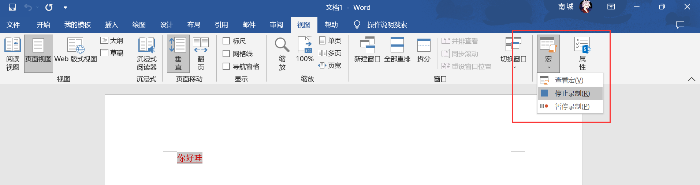
然后查看 我们录制的宏, 选择编辑
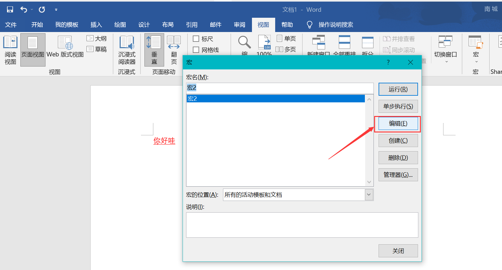
随后便可以看到对应操作的vbs脚本:
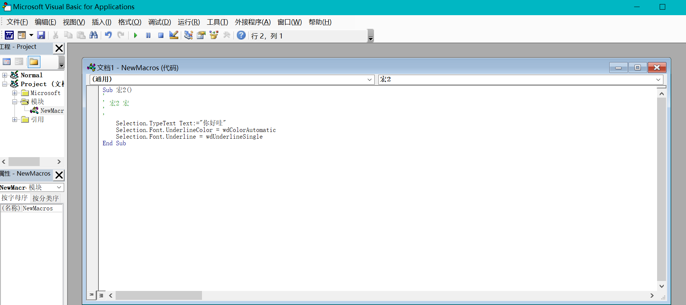
随后我们根据此脚本去官方文档里搜索查询相关api , 想办法转通过python调用对应的api即可
1 | selection = word_app.Selection |
**注意: **如果我们是先 输入了文本在设置样式就不会对文本生效了, (因为此时的光标已经在输入的文本末尾了)
所以我们要想先输入文本在设置样式, 就需要调整光标的位置
1 | selection.TypeText("你好哇") |
此外,录制宏只是作为参考而已, 因为生成的vbs脚本可能会有大量代码冗余, 且有些操作是无法被记录到的, 比如光标移动操作等
文档打开,新建,保存,转换
我们在对文档进行操作前,启动先启动Word程序. 可以通过如下三个类的构造器启动:
Dispatch("Word.Application"): 最基本的启动方式, 如果某个 Word 文档进程被占用，Dispatch 会报错DispatchEx("Word.Application"): DispatchEx 可以另开一个 进程避免进程被占用报错EnsureDispatch("Word.Application"): 调用constants类 下的内置值常量, 需要 EnsureDispatch 启动
启动word程序:
1 | word_app = EnsureDispatch("Word.Application") |
打开文档:
通过word程序对象的Documents.Open(url)方法可以打开word文档文件
如果参数只写文件名不写绝对路径,则会默认从C:\windows\system32\路径下搜索文件
1 | file_url = r"E:\Code\python\自动化与数据处理\办公自动化pywin32\操作word\word_file\论文.doc" |
文档的保存,关闭,另存为
通过文档对象的Save()可以进行保存
1 | docment1.Save() |
文档对象的Close()方法可以关闭该文档 (注: 关闭文档并不意味着退出程序) , 该方法可以传入一个参数:
SaveChanges, 值可以为:
0 不保存 -1自动保存，-2提示用户
1 | doc1.Save() |
文档对象的SaveAs()方法可以实现另存为功能,默认情况下是另存为docx格式,我们可以通过FileFormat参数来指定另存为的格式(即使格式转换)
1 | file_url = r"E:\Code\python\自动化与数据处理\办公自动化pywin32\操作word\word_file" |
WdSaveFormat保存文件类型: WdSaveFormat 枚举 (Microsoft.Office.Interop.Word) | Microsoft Learn
新建文档:
word程序对象的Documents.Add()方法可以新建一个文档,同时返回该文档对象, 不过需要注意: 如果我们新建文档后直接保存(如调用Save())会弹出提示框让我们输入文件名, 但是Add()方法并没有提供设置文件名的参数,所以我们在新建文档时可以通过 另存为 来进行文件命名
1 | doc2 = word_app.Documents.Add() |
文字处理-范围操作,光标
操作Word时, 有两种最基本的单位，一个是选区/范围 Range，另一个是光标 Selection。两个都是 万金油属性，属性和方法很多。其他方法和属性如果能够返回或者连接这两种单位，后续的操作将变得容易。比如表格、段落、图片都可以接 Range 属性返回 Range，也可以通过 Selection、 Select()等属性或方法返回 Selection。
Range
一个文档可以有很多个 Range，所以操作更灵活
基本操作:
1 | all_rang = doc.Range() # 获取整个文档的全部范围 |
在指定范围前后插入:
1 | all_rang.InsertBefore("InsertBefore") |
删除指定范围内容:
1 | all_rang.Delete() |
注意: 如果这样all_rang.Text = ""替换所有内容为空串, 则还是会有一个空串占位 (即all_ange.End的值为1 ,而使用all_range.Delete()则值才会变成0)
理解Range的起始位置
Range的范围有点类似python的含头不含尾, 但是并不完全一致 , 例如在python里Range(0,0) , Range(1,1) 是会报错的, 但在此处则是表示插入位置的意思
1 | all_range = doc.Range() # 打开一个存在的文档 |
起始位置理解为插入位
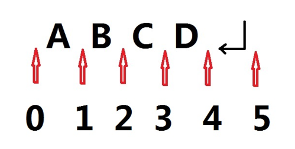
1 | # 在AB之间插入L |
如果Range() , 中只写一个参数,则该参数表示起始位置,到结尾位置
1 | # 将文档内容 ABCD 替换为 AQ |
复制粘贴:
通过 范围对象Range() 的 Copy() ,和 Paste()可实现对应范围的复制粘贴
1 | doc.Range(0, 2).Copy() |
Selection
相比而言，由于几乎 word 任何操作都要借助光标，所以 Selection 能应付的场景更多, 不过需要注意一个Word程序只有一个, 而 Range是可以有多个的
获取光标:
1 | # 启动程序 |
光标位置
光标对象的Start 和 End属性 可以返回光标的起止位置, 类似Range
光标输入操作:
使用TypeText()方法输入: 相当于光标输入(正常光标输入每次输入一个字都会往后移动一个位置), 方法会返回光标最后移动的位置
使用Text属性赋值输入, 输入完内容后,光标是处于选中 输入的内容的状态的
实例1: 通过 Text输入后,此时光标处于是选中了 文档内容的状态,所以此时再通过TypeText()输入会将其覆盖掉
1 | selection.Text = "Text属性输入值" |
文档内容最终为: TypeText()输入值
实例2:
1 | selection = word_app.Selection |
文档最终内容为: TypeText()输入值Text属性输入值 ,效果如下所示:
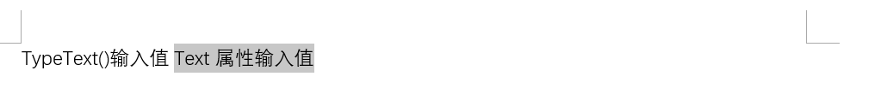
为了避免覆盖, 我们除了可以调换顺序外, 还通过设置 光标 末尾坐标, 使其 取消选中状态
1 | selection.Text = "Text属性输入值" |
光标全选操作
通过光标对象的WholeStory()方法可以全选文档内容 (包括 整个页眉页脚)
光标移动:
通过 MoveLeft(Unit, Count)，MoveRight(Unit, Count)，MoveUp(Unit, Count)，MoveDown(Unit, Count) 可对光标进行左右,上下移动
这些方法需要传入两个int类型参数: Unit , Count
Unit 设置移动的单位类型, 比如 字符, 段落等 , Count 表示移动的单位数
1 | selection.MoveRight(1, 3) # 光标向左移动2个字符 |
Range与Selection的选择
Range 可以有很多个，但 Selection 只有一个 , 推荐选择更多用 Range
Range 索引方便，可以嵌套在各种属性和方法中，而 Selection 要单独两条命令
Range 有多个，相互独立更方便，代码也显得更直观
Selection 可以接 Range，相当于可以通过 Range 的属性和方法实现部分的 Selection 功能， 那可以少学习 一点 Selection 属性和方法
当然，还有不少情况下，我们没有权利选择。譬如复杂的页码设计需要借助 Selection
文字处理-查找替换
直接用数字索引修改文字，虽然方便，但大多数情况下没有实用性：因为我们很难知道 我们要编辑的文字的具体索引位置。通常我们知道的，是我们要编辑的文字的内容。
如果用一般的 python 方法，可以先将全文本提取，并用 replace 函数替换，在重新赋值 但这样的问题是：格式就全没了。 所以，还是需要用到 pywin32 的所提供的查找替换功能。
Find查找
范围对象的Find.Execute()方法可执行查找功能, 需要传入一个 搜索值 作为参数, 若重复执行此方法, 则表示查找下一个
不过需要注意: ==当范围对象执行了查找功能后, 若查找成功, 他的起止位置会变成查找内容的起止位置==
1 | # 启动程序并打开文档... |
运行结果:
1 | 0 2974 |
我们也可以用光标查找, 效果也类似
1 | selection = word_app.Selection |
替换
1 | # 将搜索到的第一个 "回应" 替换成 "答复" |
段落处理:
通过文档对象的Paragraphs 属性,可以对段落进行处理, Paragraphs文档所有段落的迭代器, 可以通过构造器传入索引参数获取到一个Paragraph对象 , 不过需要注意的是: 索引是从1开始的
同时需要注意: Paragraphs()只能传递一个参数,不能像Range()一样传递两个参数截取范围
1 | doc = word_app.Documents.Open(file_url+"\\论文2.doc") |
Paragraphs没有Range和Text属性，无法一下完整显示所有段落。当然实际上也没有必要，因为有Range()方法和Range属性
注意: 段落的Range()会返回一个字符串,所以没有Text属性, Range属性才有Text属性
1 | p3 = paragraphs(7) |
通过Paragraph对象的Next(int n)和 Previous(int n)可获取Paragraps表示的段落向前n段和向后n段段落对象
1 | p1 = p3.Previous(2) |
添加段落
范围对象的InsertParagraph(): 将指定范围替换为空段落 (相当于按了回车)
1 | doc = word_app.Documents.Open(file_url+"\\论文2.doc") |
范围对象的InsertParagraphBefore(), InsertParagraphAfter() , 在范围前后插入空段(相当于按了回车)
注意:调用这两个方法会导致Range对象表示的范围改变,范围会扩展到新增的段落
1 | r1 = doc.Range(3, 8) |
运行结果:
1 | 3 8 |
文档对象的Paragraphs.Add(): 可以传入一个Range对象参数,在指定范围前面 插入一个空段(相当于按了回车) , 该方法的返回值是 回车前的段落Paragraph对象 , 不会改变传入的Range对象 推荐使用
1 | print(r1.Start, r1.End) |
运行结果:
1 | 3 9 |
段落查找
范围对象同样拥有Paragraphs属性,因此我们先查找到对应的范围, 在通过range.Paragraphs即可实现查找段落的功能
1 | r2 = doc.Range() |
此外我们还可以遍历文档的Paragraphs来进行样式查找:
1 | # 通过段落属性做判断筛选段落,将大纲级别为1的段落筛选出来 |
段落样式设置
批量将含有指定内容的段落设置样式
1 | r2 = doc.Range() |
样式处理
Paragraph对象和Range对象等都有Style属性,,代表该段落的样式信息。Styles是document对象下的属性, 表示文档可以设置的样式，Styles的索引对应不同的样式，-2代表标题1，详见内置值,索引也可以写名称:例如:
Style("标题一")
1 | # 将第一段设置样式为 标题1 |
我们可以修改内置样式, 但是需要注意: 我们修改了内置样式后, 所有引用了我们修改过的内置样式的地方都会变成我们修改的样子
1 | # 获取内置样式引用 |
效果如下:
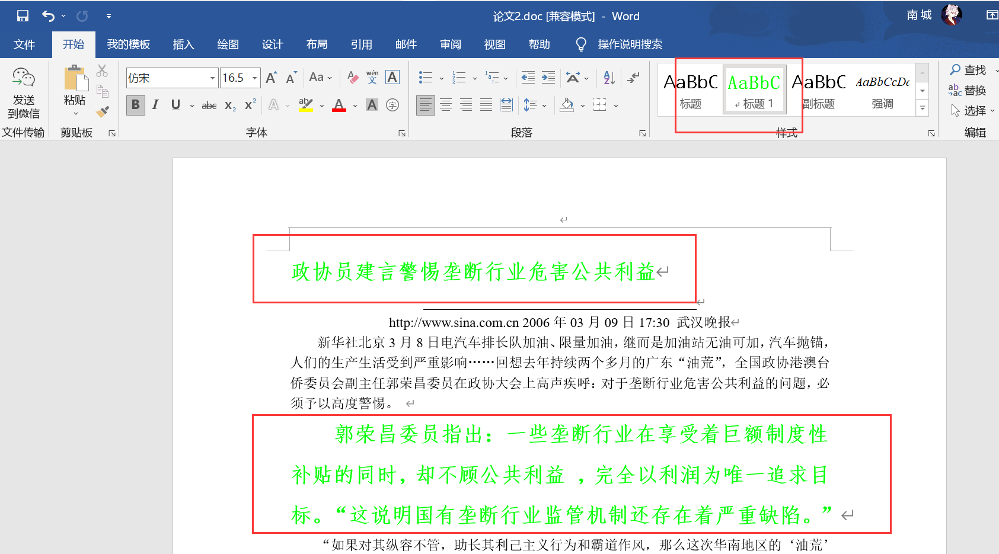
添加新样式
Styles.Add()完全新建一个样式，第一个参数是样式的名字，第二个参数控制样式类型，1代表段落样式，2代表正文字符样式。建议选1，否则无法设置段落格式
#然而，选1的话，默认会链接标题类第一个的样式，我的是“标题”。
1 | doc.Styles.Add('样式2022',1) |
格式刷:
这里逐渐细化的方式实现格式刷的功能:
1 | # 复制全部格式 |
图片处理
图片处理用到是的属性 范围对象range的InlineShapes 和 InlineShape 。
InlineShapes 代表文档、区域或所选内容中的所有内嵌形状的对象的集合。InlineShapes(i)可定位第i张图片
插入图片:
InlineShapes的 AddPicture()，第一个参数输入图片绝对路径，其余参数：
LinkToFile 图片链接到创建它的文件，默认 False；
SaveWithDocument 随文档一 起保存的链接的图片,默认 False；
Range 图片置于文本中的位置，默认自动放置，在范围前插入。
1 | word_app = EnsureDispatch("Word.Application") |
在插入范围添加回车(即在后面插入一个段落),再插入图片文字就不会被拉大了
1 | r2 = doc.Range() |
设置图片
调整图片大小:
选中通过右键“大小和位置”可查看和绝对大小和比例
1 | # 设置图片 绝对值大小 |
裁剪图片
通过InlineShape对象的PictureFormat属性下的CropBottom()、CropLeft()、CropRight()、CropTop() ,
可实现下,左,右,上方向的剪裁, 不过需要注意: 即使插入的图片调整了大小, 裁剪也是以相对于图片的原始尺寸计算, 例如，如果插入的图片最初为100磅，将其高度调整为200磅，然后将CropBottom属性设置为50，100磅（而不是50）将从图片底部裁剪
1 | # 剪裁的单位是: 磅数, 不是百分比 |
图片对齐
由于InlineShape没有对齐属性，所以通过Range.ParagraphFormat.Alignment设置
1 | # 将第三个图片设置为居中对齐 |
图片提取
如何将 word 中的图片提取/另存到本地？ 在 pywin32 没有找到直接的方法。（在 word 中直接选中图片-右键-另存为图片）。 下面介绍两个间接方法， SaveAs：用于保存提取所有图片 ExportFragment：用于保存提取部分图片
**原理:**通过将文档另存为html, 在另存为html时, 会将图片和内容拆分到一个文件夹里, 在从该文件夹获取图片文件
提取所有图片
通过 SaveAs() 保存为 html 格式提取所有图片, 随后通过python的os模块即可操作文件拿到图片文件了
提取部分图片
通过 ExportFragment 将选中区域(选中我们想要获取的图片区域即可)另存为 html 格式提取部分图片
如下例子提供了一个封装好的方法:
1 | def ExportImage(ImageShape,SavePath): |
表格处理
表格处理用到的是文档对象的属性 Tables 和 Table。 处理行、列、单元格则分别用到：Row/Rows, Column/ Columns，Cell/Cell
添加表格:
文档对象的Tables.Add(range, rows, colums)方法可在指定范围插入一个rows行colums列的表格,需要注意的是若range有内容则会将其覆盖
1 | word_app = EnsureDispatch("Word.Application") |
改写上述列子,使其在选定范围后插入表格
1 | r1 = doc.Range(1, 3) |
设置表格样式:
设置预设表格样式，这个关联的是设计-表格样式，之用调用样式名字作为参数
1 | table.ApplyStyleDirectFormatting("网格型") |
处理行列
表格对象的Rows和Columns属性可对行列进行处理:
设置行高:
1 | print(table.Rows.Count,table.Columns.Count) #返回行数列数 |
设置垂直对齐方式: Row 没有垂直对齐方式，要到 Cells 才有。 注意一行有很多 Cell，所以是 Cells, VerticalAlignment属性值: 3：文字与单元格底边框线对齐。1：文字与单元格中心对齐。0：文字与单元格上框线对齐。
1 | table.Rows(5).Cells.VerticalAlignment = 3 |
添加行:
1 | table.Rows.Add() #添加行，在位置在最后添加 |
列的处理和行处理基本类似,除了特有的属性操作方式略有不同外
设置列宽:
1 | table.Columns.Width=30 #设置列宽 |
处理单元格
注意: 直接Cell(i,j)无法赋值,必须获取Cell对象的range才可以进行操作
单元格插入值:
1 | k = 1 |
操作单元格中的内容
1 | for table in 文档.Tables: #将表格遍历出来 |
设置表格属性:
1 | doc.Tables(2).Rows.Alignment = 1 #注意区分两种对齐，这是全表居中（吐槽一下这个居然在Rows下，而不是Talbe的属性） |
设置表格边框,底纹:
1 | for r in 文档.Tables(2).Rows: |
定位表格:
1 | r1 = 文档.Range() |
页眉页脚页码设置
页眉主要用到 Headers 对象，页脚主要用到 Footers 对象。Headers、 Footers 下有 Range 属性，就可以通过 Range 自由编辑了。
页眉页脚以节为单位，所以必须先定位节，再定位页眉页角 , 反映到代码上，Headers、 Footers 是Sections/Section 的属性, 节（Section）的定位同样通过索引（i）获得,
注意: Headers(), Footers()没有单数，（i）的参数，不是指页数，而是内置值：1是节中的所有页，2是第一页，3是偶数页。
添加页眉页脚
1 | word_app = EnsureDispatch("Word.Application") |
添加页码
页码的添加主要使用Footers或者Headers的 PageNumbers 属性得Add(PageNumberAlignment,FirstPage)方法 , 参数:
PageNumberAlignment : 控制页码对齐方式, 为 int类型
FirstPage: 设置是否关联第一页的页眉页脚设置, 为 Boolean类型
1 | # 设置 页码样式 |
不同节编辑页码:
Sections.Add会在Range前面添加分节符(即图形界面->布局->分割符)，第二个参数控制分页符的类型，详见文档
1 | r1 = doc.Range() |
设置页眉页脚与上一节不关联，否则设置新节会影响上一节 , 看着没有效果，是因为没有重新设置，默认沿用旧的
1 | section.Footers(1).LinkToPrevious = False |
在新节添加页码: 注意: 即使取消了关联，默认也是接着上一节排页码，所以必须设定重新开始页码
1 | section.Footers(1).PageNumbers.RestartNumberingAtSection = True |
不同节编辑页眉页脚
1 | doc.Footers(1).Range.ParagraphFormat.Alignment = 2 |
奇偶页编辑
设置奇偶页码不同, 偶数页的页眉页脚将消失，需要重新设置
1 | doc.PageSetup.OddAndEvenPagesHeaderFooter = True |
如果设置了奇偶页不同，则需要偶数页（3）也取消关联
1 | section.Footers(3).LinkToPrevious = False |
重新设置第一节的偶数页的页眉页脚
1 | # Headers(3)和Footers(3)为偶数页页眉页脚 |
重新设置新节的偶数页的页眉页脚
1 | section.Footers(3).Range.Text = "新节偶数页脚" |
这时，偶数页的页码不见了。所以重新添加一下
1 | doc.Sections(1).Footers(3).PageNumbers.Add(PageNumberAlignment=2) |
然而，我们发觉设置偶数页会影响奇数页的页码……
pandas操作excel
简介
pandas是⼀个开源的、BSD许可的库 为Python编程语⾔提供⾼性能、易于使⽤的数据结构和数据分析⼯具
pandas 库是基于numpy库 的软件库，因此安装Pandas 之前需要先安装numpy库。默认的pandas不能直接读写excel文件，需要安装读、写库即xlrd、xlwt才可以实现xls后缀的excel文件的读写，要想正常读写xlsx后缀的excel文件，还需要安装openpyxl库 。
安装: pip install pandas
pandas数据结构
pandas有两个两个数据结构 Series & DataFrame , 非常重要
DataFrame, 表示一个二维表
Series 表示一个一维数据列
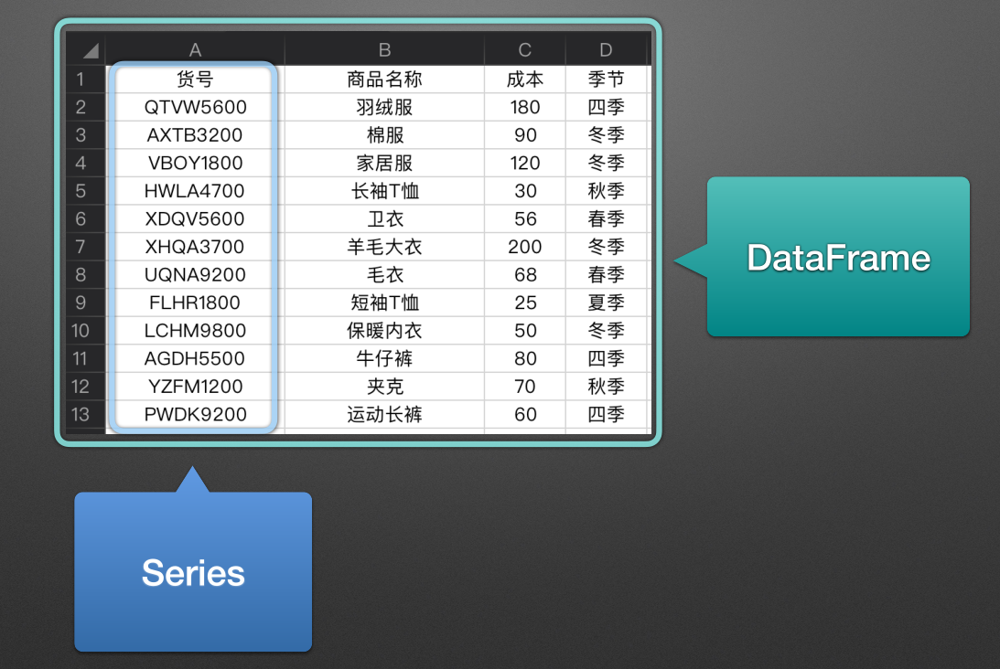
Series与DataFrame
创建Series:
通过构造器创建: Series( data = None, index = None, dtype = None, name = None), 参数说明:
data: 数组、可迭代、字典或标量值, 表示存储在“列”中的数据。如果数据是字典，则参数顺序为保持一致。
index: 表示列中数据的索引 , 值必须是可哈希的，并且与数据具有相同的长度。 允许使用非唯一索引值。将默认为 范围索引 （0， 1， 2， …， n） 如果未提供。如果数据类似字典 索引为 None，则数据中的键用作索引。如果 index 不是 None，生成的序列将使用索引值重新编制索引。
dtype: 输出列的数据类型。如果未指定，这将是 从数据推断。
name: 要为系列指定的名称。
1 | from pandas import Series |
运行结果:
1 | 0 1 |
我们输入全部参数看看:
1 | s = Series([1, 2, 3], index=list('abc'), dtype='int64', name='num') |
运行结果:
1 | a 1 |
若data传入一个字典:
1 | d = {'a': 1, 'b': 2, 'c': 3} |
运行结果: 会将字典的键当成列索引
1 | a 1 |
创建DataFrame
DataFrame类用于表示一个二维表
有三种方法:
- 通过2维的list-like创建
- 通过字典创建
- 通过读取Excel表
通过类构造器DataFrame(data=None, index=None, columns=None, dtype=None, copy=None)创建,
参数说明:
data: 二维表的数据, 类型可以是可迭代对象,二维列表, 字典 或者 DataFrame对象等二维数据, 如果数据是一个字典，列顺序遵循插入顺序。如果字典包含系列 定义了索引，则按其索引对齐。
columns:指定列索引, list类型
index: 指定行索引, list类型
若不指定索引,则默认为 0, 1, 2, 3…..
通过二维列表创建:
1 | list_2d = [[1, 2], [3, 4]] |
运行结果:
1 | 0 1 |
通过列表指定行索引和列索引
1 | df = DataFrame(list_2d, columns=['A', 'B'], index=['x', 'y']) |
运行结果:
1 | A B |
通过字典创建, 字典的键会自动转换为列索引
1 | d = {'A': [1, 3], 'B': [2, 4]} |
运行结果:
1 | A B |
读取excel文件创建
1 | df = read_excel(r"data_file\goods_base.xlsx") |
查看数据信息:
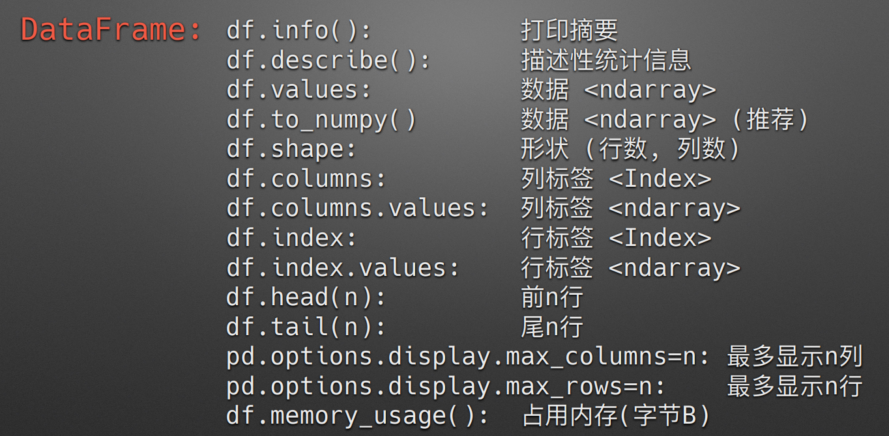
数据类型 & 处理
DataFrame可以看作多个Series组成, 而Series对象有一个dtype属性,用来表示该列的单元格的数据类型, DataFrame对象的dtypes属性表示每一列dtype,数据类型的对应关系如下表所示:
| 类型 | 说明 |
|---|---|
| int8/int16/int32/int64(默认) | 整型 |
| float16/float32/float64(默认) | 浮点型 |
| str/string: | 字符串 |
| bool: | 布尔 |
| category: | 分类 |
| datetime64[ns] | 时间戳(纳秒) |
| object | python对象混合类型 |
==通过convert_dtypes()方法可以进行数据清洗,返回清洗后的数据,建议每次读取到数据时都调用次方法进行数据清洗==, 该方法的作用是:根据单元格的值自动推导并切换成对应的数据类型, 例如 假设 A列的值全部为字符或者文本,就会被推导为string, 若全为数字,就推导为int64 ,全为时间格式就推导为datatime64[ns] 如果既有字符,又有数字或时间, 则会被推导为object(说明数据不干净,需要手动进行数据清洗)
**tips:**通过检查dtype属性,可以判断该列的数据是否“干净” , 不干净即列中单元格的值存在多种数据类型, 不利于后续处理和运算
1 | df = pd.DataFrame([ |
通过astype()系列方法我们可以手动对数据的类型进行强制转换, 接上述例子,
1 | df = df.astype(dtype="string") # 讲所有列数据类型转换成 string |
关于string类型补充: Accessor 访问器 Series.str可用于以字符串的形式访问Series的值并对其应用一些方法
对于数据类型为string的数据(列) ,注: 这里的string指的是pandas中的数据类型而不是python里的数据类型, 可以应用字符串的常见处理方法如:strip()去除首尾空格或换行符等, split()分割字符串等众多字符串处理函数
示例:
1 | df = pd.DataFrame([ |
运行结果:
1 | A string |
selecting: dtypes
通过select_dtypes()方法可以根据列的数据类型进行列的投影运算
1 | df = pd.DataFrame([ |
selecting:dict-like
Series & DataFrame 是dict-like, 即有着类似字典的取值操作
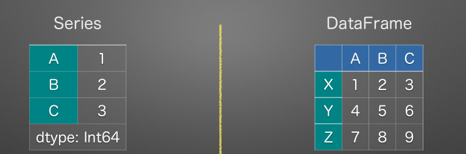
Series可以像字典一样根据key 来取值, 其中key就相当于行索引
1 | s = pd.Series( |
Series若要多选取值, 则将键设置为一个列表,如下所示, 在[]是一个列表时, 则会返回一个Series对象
1 | print(s[['B', 'C']]) # 即 s.get(['B', 'C']) |
运行结果:
1 | B 2 |
tips: 键为list,list的元素可以是布尔类型,因此可以通过此方式来定义规则筛选出需要的行
Series重载了逻辑运算符, 当Series对象进行逻辑运行时, 运算的结果是一个新的Series对象, 只不过这个对象的数据是经过运算后的布尔值, 以上述例子为例: s >1 得到的结果是 Series( {A:False, ‘B’: True, ‘C’: True} )
例如:
1 | print(s[[s>1]]) # 筛选出 值 大于 1 的行 |
DataFrame:
DataFrame 也同理 , 不过若DataFrame的列不为int,则不能使用int作为索引,这点与Series不同
1 | df = pd.DataFrame({ |
运行结果:
1 | X 2 |
同理, DataFrame若要多选取值, 则将键设置为一个列表,如下所示, 在[]里是一个列表时, 会返回一个DataFrame对象 ,
1 | print(df[['B', 'C']]) # df.get(['B', 'C']) |
运行结果:
1 | B C |
tips: 键为list,list的元素可以是布尔类型,因此可以通过此方式来定义规则筛选出需要的行 (注意此种方式筛选的是行而不是列)
相当于将DataFrame的列当成了Series进行逻辑运行, 例如: df[‘B’] > 2的结果是: Series( {‘X’: False, ‘Y’: True, ‘Z’: True} )
例如:
1 | df[df['B'] > 2] # 相当于sql语句的: select * from df where B > 2 |
selecting: list-like
Series & DataFrame 同样有着类似数组的取值方式
需要注意的是: 使用数字索引取值是含头不含尾, 使用名称索引取值时含头又含尾, 语法规则与python的列表规则一致
Series 示例:
1 | s = pd.Series( {'A': 1, 'B': 2, 'C': 3} ) |
运行结果:
1 | A 1 |
DataFrame 示例: 注意是行筛选,填的索引是行索引(名称)
1 | df = pd.DataFrame({ |
运行结果:
1 | A B C |
selecting: loc
loc即location , 定位的缩写, 通过指定行或者指定行列来选择数据, 值为一个经过数据筛选的DataFrame对象
1 | df.loc[row_indexer, column_indexer] |
其中column_indexer 是可选项 ,以下图举例:
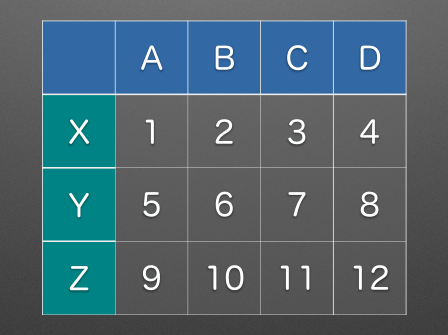
1 | df = pd.DataFrame([ |
selecting: iloc
与 loc类似,唯一区别是iloc是通过整数索引来取值, 注意切片(如 [0:3]) 时,整数索引含头不含尾,
数据的赋值修改
通过上述几种selecting选择方式,选择对应的区域后 , 除了可以拿到对应区域的值以外, 还可以对选择的区域进行赋值,
1 | s.loc['C':'D'] = 30 # 将C到D行都赋值为30 |
运算_缺失值填充
pandas库依赖于numpy库, 所以其NaN实际上是
numpy.NaN
对于Series和DataFrame的加减乘除运算,其运算规则是: 根据索引匹配单元格的进行运算,没匹配的当作NaN,并且对行列进行取补集
此外, 在python里, 0 作为除数会抛出异常, 但是在pandas中对0作为除数做了特殊处理: 即任何数除以0的结果都是无穷大
1 | 1 / 0 == inf |
我们可以将无穷也设置为当作NaN处理,只需要添加下面这行代码:
1 | pandas.options.mode.use_inf_as_na = True |
Series运算示例: 加减乘除同理
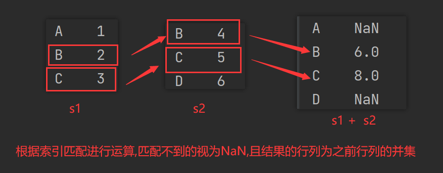
1 | s1 = pd.Series({ "A": 1, "B": 2, "C": 3}) |
DataFrame运算示例:
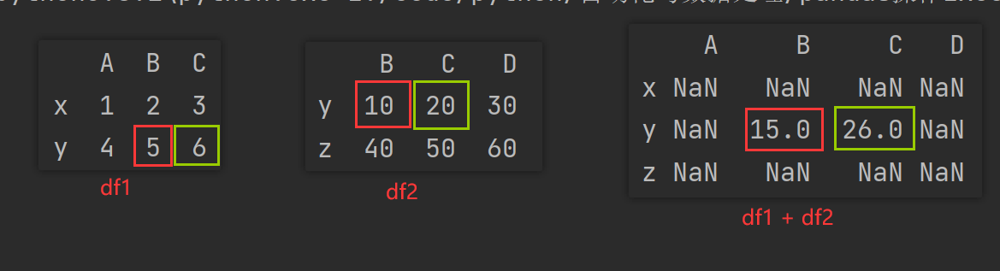
1 | df1 = pd.DataFrame( |
通过上述例子不难发现,pandas对于含有NaN的运算默认情况下这样处理的:任意数对NaN进行加减乘除的运算结果均为NaN , 这很显然有时候并不符合我们的需求, 可以通过运算方法的关键参数fill_value来对缺失值进行填充处理
将上述例子改写:
1 | print( s1.add(s2, fill_value=0) ) |
注: ==此方法能解决NaN与任意实数进行运算,但观察上述例子可以发现对于NaN与NaN之间的运算还是无法解决==, 如: zA , xD
MultiIndex 复合索引
复合索引指的是多层列索引,对应excel表格结构如下图所示:
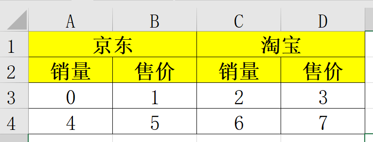
从Excel文件中读取含有复合索引的表格, 只需要设置参数header为列表即可, 例如:
1 | df = pd.read_excel(r"data_file\jd_tb.xlsx", header=[0, 1]) |
DataFrame创建复合索引有两种方式:
index或columns属性传入二维list-like
例如:
1
2
3
4
5
6
7
df = pd.DataFrame(
data,
columns=[
['京东', '京东', '淘宝', '淘宝'],
['销量', '售价', '销量', '售价'],
]
)
- 调用
pandas.MultiIndex的相关方法进行创建: , 常用的有如下几种方法:
1 | pd.MultiIndex.from_product() # 笛卡尔积 |
例如将上述表格进行汇总,并连接汇总表,实现代码如下:
1 | df = pd.read_excel(r"data_file\jd_tb.xlsx", header=[0, 1]) |
列连接与行连接
列连接:即表格的连接, 类似sql中的join, 在pandas中同样是调用join()方法返回连接后的结果(两个表本身不会改变),此外还可以根据参数选择左连接和右连接,详情参考官方文档, 例如上节例子中:
1 | print(df) |
**行连接:**即将两个表的数据行进行合并, 调用pandas.concat()函数实现, 默认情况是从后追加拼接, 该函数必须入一个数组,会把数组元素进进行 行连接, 默认情况下会保留原来的行索引, 可通过设置参数忽略, 例如:
1 | df1 = pd.DataFrame( |
读取excel文件:
通过read_excel()函数可以读取excel文件, 该函数有很多参数,参数如下:
io : excel文件路径或者文件输出流
选择子表sheet
sheet_name: 一个excel文件中有很多子表sheet,也叫工作表, 这个参数用于指定子表, , 参数支持的类型有: str, int,list, 默认为0, 即读取第一个子表 , 值为None时全选所有子表
设置表头,行索引
header: 指定作为表头的行数即列索引, 索引从0开始,默认为 0
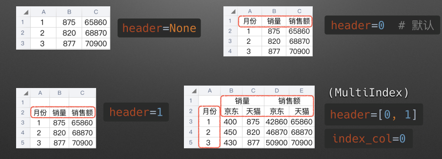
names: 列表类型,自定义表头, 注意, 如果自定义表头, 需要指定header=None , 否则数据会错误
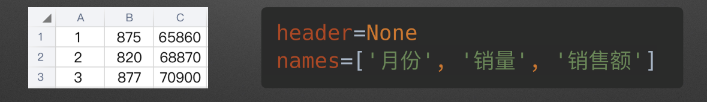
index_col: 指定index(行标签)使用哪些列,即行索引
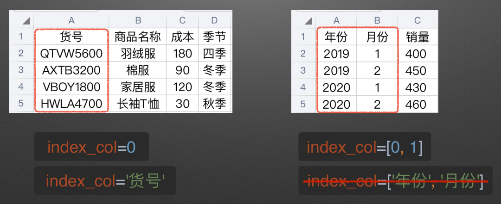
筛选列
usecols: 指定只读取哪些列, 支持以下几种类型:
- None: 全部(默认)
- int-list: [0, 2] , 若参数类型为列表,并且列表元素均为int , 根据列表元素的值作为选中列的索引,
- str-list: [‘AAA’, ‘CCC’]: 若参数类型为列表,并且列表元素均为str , 选择列内容与列表元素匹配的列, 本例中
['AAA', 'CCC']表示选中下图的 A列 和 C列, 因为只有两列内容匹配参数列表, ==(推荐: 这种形式可读性和可拓展性较高)== - str: ‘A,C’或 ‘A,C:E’: 参数类型为字符串序列,根据字符串系列元素匹配的列标识, 本例中
‘A,C’或A,C:E选中的f分别是: A列C列, 或 A, C, D, E列 - 函数: lambda x: x == ‘CCC’: 此外还可以**传入一个函数表达式,进行自定义筛选逻辑,根据返回的布尔值进行判断, 本例子中是选中了列内容为‘CCC’ , 即为CCC列
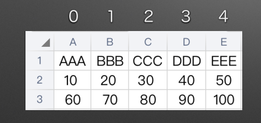
跳过行, 指定范围行
skiprows: 参数类型可以为 int 或者 list, 若为int, 则表示读取文件是跳过指定哪一行(索引从0开始) ,
如果为list, 则要求元素类型均为int, 将列表元素作为跳过行的索引
nrows: int, 默认 None , 要解析的行数 , 从上往下数,不包括表头(行索引)。
设置列的数据类型
dtypes: 此参数为字典类型 ,默认为None,自动推导
1 | dtype = {'a': 'float64', 'b': 'int32'} |
pandas的数据类型对应关系如下表所示:
| 类型 | 说明 |
|---|---|
| int8/int16/int32/int64(默认) | 整型 |
| float16/float32/float64(默认) | 浮点型 |
| str/string: | 字符串 |
| bool: | 布尔 |
| category: | 分类 |
| datetime64[ns] | 时间戳(纳秒) |
| object | python对象混合类型 |
注意: str, string: 并不等同
日期格式处理
parse_dates: 此参数可指定需要解析日期格式的列, 将其转换为datetime64[ns]类型便于后续处理 , 默认为Flase,当参数为不同类型时有不同的处理形式:
- True: 试用内置的解析方法自动解析所有可能为日期格式的列
- [0, 1] 或 [‘a’, ‘b’] 指定需要转为日期格式的列, 此例中指定的是 第一列和第二列(根据0,1索引) 或 转换列内容含有列名为 ‘a’ 和 ‘b’的列
- [[0, 1, 2]] : 结合多列解析为单个日期列, 将 前三列合并为一列转换为日期格式,
- {‘日期’: [0, 1, 2]} : 同上, 结果的列名改为’日期’
date_parser: 与上面的参数配合使用, 自定义日期格式解析器 , 接收一个lambda表达式, 可调用pandas.to_datetime()方法来自定义解析解析日期格式的规则, 例如 将表格中 2002年10⽉03⽇这种解析
1 | date_parser=lambda x: pd.to_datetime(x, format='%Y年%m⽉%d⽇') |
缺失值处理
excel中当数据发生错误时, 会产生’#N/A’ 这种, 这叫我们就叫做缺失值, 在pandas中用NaN表示,
na_values : 此参数可以设置读取文件时缺失值的处理, 根据参数类型不同处理方式如下:
- 值为一个 任意数据 如 0, ‘a’ 这种标量时, 会将表中的此标量替换为 NaN 进行处理
- 类型为列表时, 表中存在有列表中任意一个元素都将替换为NaN
- 类型为字典时,指定需要解析的列,默认情况下是解析全局的, 视字典的键为列名, 将该列中值与字典的值相同的替换为NaN
例:
1 | na_values=0 # 将 0 解析为 NaN |
布尔值处理
true_values: 参数类型为list, 将表格中含有list元素的值替换为True
false_values: 参数类型为list, 将表格中含有list元素的值替换为False
注意: 上述参数以列为原子单位进行解析转换, 也就是说如果一个列中存在无法转换成True或者False的值,那么这整个列都不会转换
任意值处理
converters: dict, 默认 None , 用于值转换, 字典的值可以是一个lambda表达式
例如:
1 | converters={ |
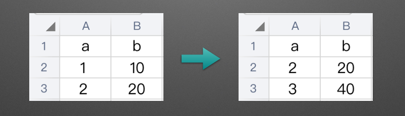
此外, 还可以用来进行数据清洗, 去除列名的空格
1 | converters={ |
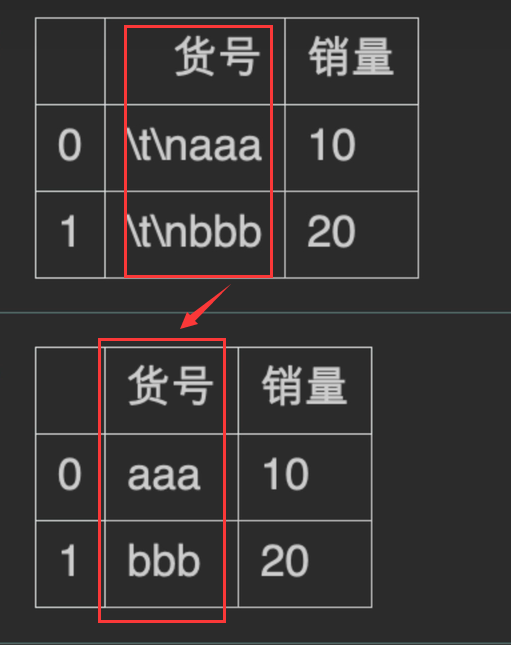
千位分隔符
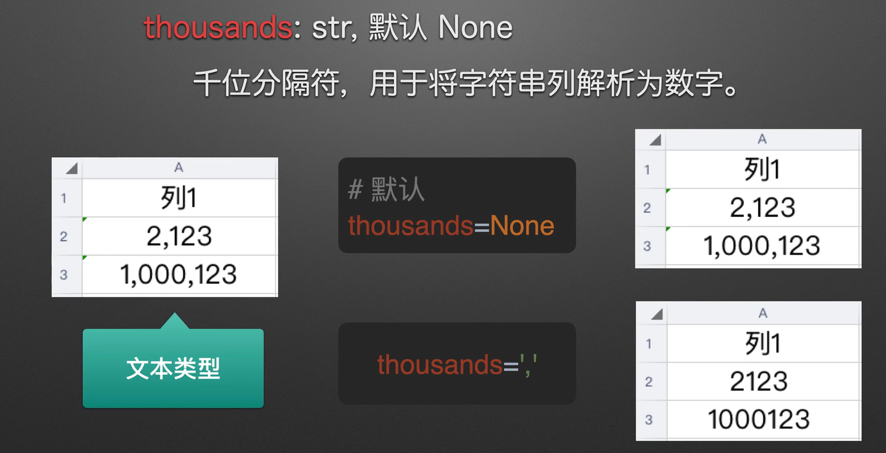
浮点数取整处理
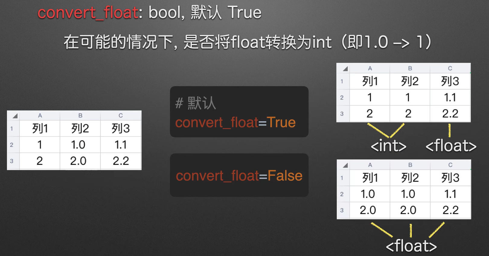
重复行处理:
mangle_dupe_cols: 参数类型为bool , 是否重命名重复列名 , 默认True
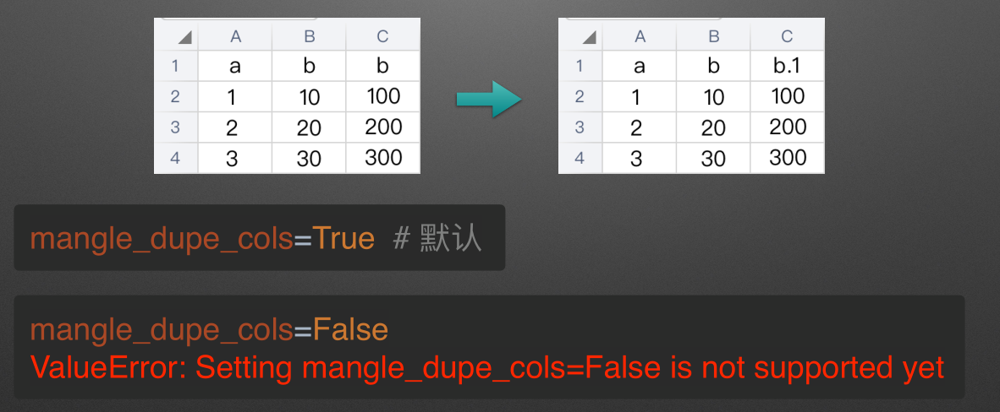
写入excel文件
通过如下方法可对excel文件的单个sheet表进行写入
1 | DataFrame.to_excel( |
ExcelWriter类
ExcelWriter类可以使我们更方便的批量写入excel文件数据
1 | class pandas.ExcelWriter( |
此外, 使用ExcelWriter类可以配合with语句使用, 可以大大提高我们的写入效率
1 | import pandas as pd |
注: 经测试,时间日期格式仅能转换为: YYYY/MM/DD , YYYY/MM/DD HH:MM:SS 或YYYY-MM-DD ,
YYYY-MM-DD HH:MM:SS
CSV文件读写
通过DataFrame对象的read_csv() 和 to_csv()可以对CSV文件进行读写 , 两个方法常用参数大致相同, 除此之外, 很多筛选行列的参数例如usecols等和read_excel()类似, 详情查询文档使用
1 | DataFrame.to_csv( |
group by 分组
类似sql的 group by 分组, 详情参考官方文档
图像识别
ddddocr 验证码识别
简介:
ddddocr是由sml2h3开发的专为验证码厂商进行对自家新版本验证码难易强度进行验证的一个python库，其由作者与kerlomz共同合作完成，通过大批量生成随机数据后进行深度网络训练，本身并非针对任何一家验证码厂商而制作，本库使用效果完全靠玄学，可能可以识别，可能不能识别。
ddddocr奉行着开箱即用、最简依赖的理念，尽量减少用户的配置和使用成本，希望给每一位测试者带来舒适的体验
环境支持:
python <= 3.9
Windows/Linux/Macos..
暂时不支持Macbook M1(X)，M1(X)用户需要自己编译onnxruntime才可以使用
安装:
1 | pip install ddddocr |
无法安装尝试更新pip
文字识别验证
在1.2.0开始，ddddocr的识别部分进行了一次beta更新，主要更新在于网络结构主体的升级，其训练数据并没有发生过多的改变，所以理论上在识别结果上，原先可能识别效果的很好的图形在1.2.0上有一小部分概率会有一定程度的下降，也有可能原本识别不好的图形在1.2.0之后效果却变得特别好。
classification()函数, 除了ocr外, 还能用于图片验证码,识别率高
测试代码：
1 | import ddddocr as docr |
点击文字验证
目标检测部分同样也是由大量随机合成数据训练而成，对于现在已有的点选验证码图片或者未知的验证码图片都有可能具备一定的识别能力，适用于文字点选和图标点选。 简单来说，对于点选类的验证码，可以快速的检测出图片上的文字或者图标。
1 | import ddddocr |
滑块验证
更多详情参考文档
文字,文章扫描
经过测试, 百度云的ocr在线api对图片文本的扫描结果最好, 详情查看百度官网:
步骤参考: Python教程：利用百度API进行批量图片OCR识别_
虚拟环境
参考链接 ： pycharm的virtualenv、pipenv、conda详解_pycharm virtualenv_任识算法的博客-CSDN博客
项目打包,发布
Python是一个脚本语言，被解释器解释执行。它的发布方式：
.py文件：对于开源项目或者源码没那么重要的，直接提供源码，需要使用者自行安装Python并且安装依赖的各种库。（Python官方的各种安装包就是这样做的）.pyc文件：有些公司或个人因为机密或者各种原因，不愿意源码被运行者看到，可以使用pyc文件发布，pyc文件是Python解释器可以识别的二进制码，故发布后也是跨平台的，需要使用者安装相应版本的Python和依赖库。可执行文件：对于非码农用户或者一些小白用户，你让他装个Python同时还要折腾一堆依赖库，那简直是个灾难。对于此类用户，最简单的方式就是提供一个可执行文件，只需要把用法告诉Ta即可。比较麻烦的是需要针对不同平台需要打包不同的可执行文件（Windows,Linux,Mac,…）。
打包成可执行文件
需要用到一个三方库: pyinstaller ,安装: pip install pyinstaller
PyInstaller是一个十分有用的第三方库，它能够在Windows、Linux、 Mac OS X 等操作系统下将 Python 源文件打包，通过对源文件打包， Python 程序可以在没有安装 Python 的环境中运行，也可以作为一个 独立文件方便传递和管理。
pyinstaller工作原理
- 先生成一个spec文件（手动或自动均可），该文件决定了实际编译规则
- 再自动生成一个build文件夹，所有自动编译的中间产物都放在其中
- 最后生成dist文件夹，存放编译输出
单文件打包: pyinstaller xxx.py
多文件打包:
- 先自动生成spec文件：
pyi-makespec xxx.py - 再根据自己的实际需求手动修改spec文件
- 最后统一installer：
pyinstaller xxx.spec
spec文件解析:
1 | Analysis: |
pyinstaller重要命令参数
F 生成一个单一可执行文件【常用】
w 禁止弹出控制台【常用】,如果调用了input()则会报错
i 修改exe生成的图标【常用】
h 打印帮助信息
v 打印版本信息
d 生成带各种依赖的文件夹，包含exe，dll,以及其他文件
p 指定搜索路径
常见问题
打包后的文件太大了:
最好的办法是：在一个虚拟环境中单独打包，只打包该程序执行所必备的依赖库, 例如在pycharm的终端中新建虚拟终端:
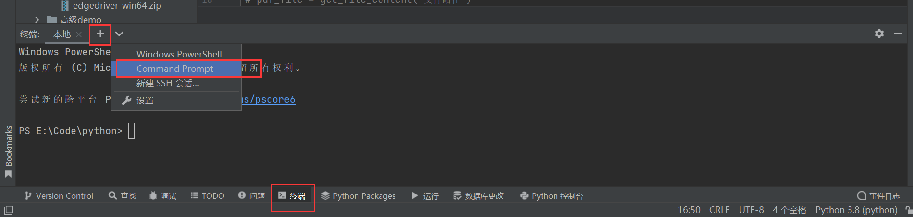
无法正常使用:
- 路径问题。
- 依赖包的问题。
依赖包问题可以通过清除缓存重新打包解决
==python脚本执行的默认路径和exe打包后的路径是不一样的，如果软件中存在文件读取等操作，很有可能导致exe找不到资源而运行出错。==
https://blog.csdn.net/weixin_39879122/article/details/110754872
路径问题补充:
pyinstaller打包好一个exe后，运行此exe，会把此文件解压缩到C:\Users\xxxx\AppData\Local\Temp\ 目录下，然后运行。而配置文件一般放置在exe同级别目录下。提供几个解决思路:
1 | # 获取 程序文件的文件夹路径 |
来获取目录，会定位到解压缩后的地址。
附各种获取文件目录的方法，可以对比尝试下：
1 | import os, sys |
源码打包
首先，创建一个 setup.py 文件，其内容如下：
1 | from distutils.core import setup |
其中，替换 your_package_name 为你的包名称，dependency1、dependency2 等为你的依赖包。
最后，运行命令： python setup.py sdist
这将在当前目录下创建一个 dist 目录，其中包含了打包的源代码和依赖包的 tar.gz 文件。您可以将此文件发送给您的用户，让他们安装依赖包:
1 | pip install your_package_name-0.1.tar.gz |
查看项目所需依赖包
通过pipreqs工具可以生成项目所有依赖包的清单
**首先安装: **pip install pipreqs
进入到python项目主目录:
1 | pipreqs ./ --encoding=utf8 |
完成上面命令会生成requirements.txt , 在需要的安装依赖的主机执行安装:
1 | pip install -r requirements.txt |